-
Array Page of DSAlgo portal
11:39:54 AM / 00:07:15:261 Fail
Array Page of DSAlgo portal
05.08.2025 11:39:54 AM 05.08.2025 11:47:09 AM 00:07:15:261 · #test-id=1PassVerify that user is able to navigate to Array data structure pageGiven The user is on the Home page and clicks Sign InWhen The user gets data from excel sheet "Valid_Login" and 1 for the login pageGiven The user is in the Home page after Sign inWhen The user clicks the Get Started button in Array PanelThen The user should be directed to ARRAY Data Structure PagePassVerify that user is able to navigate to Array data structure pageGiven The user is on the Home page and clicks Sign InWhen The user gets data from excel sheet "Valid_Login" and 1 for the login pageGiven The user is in the Home page after Sign inWhen The user select Array item from the drop down menuThen The user should be directed to ARRAY Data Structure PagePassVerify that user is able to navigate to "Arrays in Python" pageGiven The user is on the Home page and clicks Sign InWhen The user gets data from excel sheet "Valid_Login" and 1 for the login pageGiven The user is in the Array page after Sign inWhen The user clicks Arrays in Python buttonThen The user should be redirected to Arrays in Python pagePassVerify that user is able to navigate to "try Editor" page for "Arrays in Python" pageGiven The user is on the Home page and clicks Sign InWhen The user gets data from excel sheet "Valid_Login" and 1 for the login pageGiven The user is in the Arrays in Python pageWhen The user clicks Try Here button in Arrays in Python pageThen The user should be redirected to a page having a try Editor with a Run button to testFailVerify that user receives error when click on Run button for "Arrays in Python" try Editor pageFailVerify that user receives error when click on Run button for "Arrays in Python" try Editor pageGiven The user is on the Home page and clicks Sign InWhen The user gets data from excel sheet "Valid_Login" and 1 for the login pageGiven The user is in the Arrays in Python tryEditor pageWhen The user enters "TryCode" and 1 clicks the Run Button in tryEditor pageThen The user should able to see a error message from "TryCode" and 1Hooks.Hooks.teardown(io.cucumber.java.Scenario)screenshot PassVerify that user receives error when click on Run button for "Arrays in Python" try Editor pageGiven The user is on the Home page and clicks Sign InWhen The user gets data from excel sheet "Valid_Login" and 1 for the login pageGiven The user is in the Arrays in Python tryEditor pageWhen The user enters "TryCode" and 2 clicks the Run Button in tryEditor pageThen The user should able to see a error message from "TryCode" and 2PassVerify that user receives error when click on Run button for "Arrays in Python" try Editor pageGiven The user is on the Home page and clicks Sign InWhen The user gets data from excel sheet "Valid_Login" and 1 for the login pageGiven The user is in the Arrays in Python tryEditor pageWhen The user enters "TryCode" and 3 clicks the Run Button in tryEditor pageThen The user should able to see a error message from "TryCode" and 3PassVerify that user is able to see output for valid python code for "Arrays in Python" try Editor pagePassVerify that user is able to see output for valid python code for "Arrays in Python" try Editor pageGiven The user is on the Home page and clicks Sign InWhen The user gets data from excel sheet "Valid_Login" and 1 for the login pageGiven The user is in the Arrays in Python tryEditor pageWhen The user enters "TryCode" and 4 clicks the Run Button in tryEditor pageThen The user should able to see output in the console from "TryCode" and 4PassVerify that user is able to navigate to "Practice Questions" Page from "Arrays in Python" pageGiven The user is on the Home page and clicks Sign InWhen The user gets data from excel sheet "Valid_Login" and 1 for the login pageGiven The user is in the Arrays in Python pageWhen The user clicks Practice Questions buttonThen The user should be redirected to Practice pagePassVerify that user is able to navigate to "Search the array" Page from Practice question page of "Arrays in Python" pageGiven The user is on the Home page and clicks Sign InWhen The user gets data from excel sheet "Valid_Login" and 1 for the login pageGiven The user is on the Practice question page of Arrays in Python pageWhen The user clicks the Search the array linkThen The user should be redirected to Question page of Search the array linkPassVerify that user receives NameError, SyntaxError for invalid python code on running "Search the array" questionPassVerify that user receives NameError, SyntaxError for invalid python code on running "Search the array" questionGiven The user is on the Home page and clicks Sign InWhen The user gets data from excel sheet "Valid_Login" and 1 for the login pageGiven The user is on the practice question editor of Search the array questionWhen The user write the invalid code from "PracticeQns" and 1 in Editor and click the Run ButtonThen The user should able to see error message in alert window from "PracticeQns" and 1PassVerify that user receives NameError, SyntaxError for invalid python code on running "Search the array" questionGiven The user is on the Home page and clicks Sign InWhen The user gets data from excel sheet "Valid_Login" and 1 for the login pageGiven The user is on the practice question editor of Search the array questionWhen The user write the invalid code from "PracticeQns" and 2 in Editor and click the Run ButtonThen The user should able to see error message in alert window from "PracticeQns" and 2PassVerify that user is able to run valid python code for "Search the array" questionPassVerify that user is able to run valid python code for "Search the array" questionGiven The user is on the Home page and clicks Sign InWhen The user gets data from excel sheet "Valid_Login" and 1 for the login pageGiven The user is on the practice question editor of Search the array questionWhen The user write the valid code from "PracticeQns" and 5 in Editor and click the Run ButtonThen The user should able to see output in the console from "PracticeQns" and 5PassVerify that user receives error on submitting invalid python code, incorrect answer for "Search the array" questionPassVerify that user receives error on submitting invalid python code, incorrect answer for "Search the array" questionGiven The user is on the Home page and clicks Sign InWhen The user gets data from excel sheet "Valid_Login" and 1 for the login pageGiven The user is on the practice question editor of Search the array questionWhen The user write the code from "PracticeQns" and 3 in Editor and Click the Submit ButtonThen The user should see a message from "PracticeQns" and 3PassVerify that user receives error on submitting invalid python code, incorrect answer for "Search the array" questionGiven The user is on the Home page and clicks Sign InWhen The user gets data from excel sheet "Valid_Login" and 1 for the login pageGiven The user is on the practice question editor of Search the array questionWhen The user write the code from "PracticeQns" and 4 in Editor and Click the Submit ButtonThen The user should see a message from "PracticeQns" and 4FailVerify that user is able to successfully submit valid correct python code for "Search the array" questionFailVerify that user is able to successfully submit valid correct python code for "Search the array" questionGiven The user is on the Home page and clicks Sign InWhen The user gets data from excel sheet "Valid_Login" and 1 for the login pageGiven The user is on the practice question editor of Search the array questionWhen The user write the code from "PracticeQns" and 6 in Editor and Click the Submit ButtonThen The user should see a message from "PracticeQns" and 6Hooks.Hooks.teardown(io.cucumber.java.Scenario)screenshot
PassVerify that user receives error when click on Run button for "Arrays in Python" try Editor pageGiven The user is on the Home page and clicks Sign InWhen The user gets data from excel sheet "Valid_Login" and 1 for the login pageGiven The user is in the Arrays in Python tryEditor pageWhen The user enters "TryCode" and 2 clicks the Run Button in tryEditor pageThen The user should able to see a error message from "TryCode" and 2PassVerify that user receives error when click on Run button for "Arrays in Python" try Editor pageGiven The user is on the Home page and clicks Sign InWhen The user gets data from excel sheet "Valid_Login" and 1 for the login pageGiven The user is in the Arrays in Python tryEditor pageWhen The user enters "TryCode" and 3 clicks the Run Button in tryEditor pageThen The user should able to see a error message from "TryCode" and 3PassVerify that user is able to see output for valid python code for "Arrays in Python" try Editor pagePassVerify that user is able to see output for valid python code for "Arrays in Python" try Editor pageGiven The user is on the Home page and clicks Sign InWhen The user gets data from excel sheet "Valid_Login" and 1 for the login pageGiven The user is in the Arrays in Python tryEditor pageWhen The user enters "TryCode" and 4 clicks the Run Button in tryEditor pageThen The user should able to see output in the console from "TryCode" and 4PassVerify that user is able to navigate to "Practice Questions" Page from "Arrays in Python" pageGiven The user is on the Home page and clicks Sign InWhen The user gets data from excel sheet "Valid_Login" and 1 for the login pageGiven The user is in the Arrays in Python pageWhen The user clicks Practice Questions buttonThen The user should be redirected to Practice pagePassVerify that user is able to navigate to "Search the array" Page from Practice question page of "Arrays in Python" pageGiven The user is on the Home page and clicks Sign InWhen The user gets data from excel sheet "Valid_Login" and 1 for the login pageGiven The user is on the Practice question page of Arrays in Python pageWhen The user clicks the Search the array linkThen The user should be redirected to Question page of Search the array linkPassVerify that user receives NameError, SyntaxError for invalid python code on running "Search the array" questionPassVerify that user receives NameError, SyntaxError for invalid python code on running "Search the array" questionGiven The user is on the Home page and clicks Sign InWhen The user gets data from excel sheet "Valid_Login" and 1 for the login pageGiven The user is on the practice question editor of Search the array questionWhen The user write the invalid code from "PracticeQns" and 1 in Editor and click the Run ButtonThen The user should able to see error message in alert window from "PracticeQns" and 1PassVerify that user receives NameError, SyntaxError for invalid python code on running "Search the array" questionGiven The user is on the Home page and clicks Sign InWhen The user gets data from excel sheet "Valid_Login" and 1 for the login pageGiven The user is on the practice question editor of Search the array questionWhen The user write the invalid code from "PracticeQns" and 2 in Editor and click the Run ButtonThen The user should able to see error message in alert window from "PracticeQns" and 2PassVerify that user is able to run valid python code for "Search the array" questionPassVerify that user is able to run valid python code for "Search the array" questionGiven The user is on the Home page and clicks Sign InWhen The user gets data from excel sheet "Valid_Login" and 1 for the login pageGiven The user is on the practice question editor of Search the array questionWhen The user write the valid code from "PracticeQns" and 5 in Editor and click the Run ButtonThen The user should able to see output in the console from "PracticeQns" and 5PassVerify that user receives error on submitting invalid python code, incorrect answer for "Search the array" questionPassVerify that user receives error on submitting invalid python code, incorrect answer for "Search the array" questionGiven The user is on the Home page and clicks Sign InWhen The user gets data from excel sheet "Valid_Login" and 1 for the login pageGiven The user is on the practice question editor of Search the array questionWhen The user write the code from "PracticeQns" and 3 in Editor and Click the Submit ButtonThen The user should see a message from "PracticeQns" and 3PassVerify that user receives error on submitting invalid python code, incorrect answer for "Search the array" questionGiven The user is on the Home page and clicks Sign InWhen The user gets data from excel sheet "Valid_Login" and 1 for the login pageGiven The user is on the practice question editor of Search the array questionWhen The user write the code from "PracticeQns" and 4 in Editor and Click the Submit ButtonThen The user should see a message from "PracticeQns" and 4FailVerify that user is able to successfully submit valid correct python code for "Search the array" questionFailVerify that user is able to successfully submit valid correct python code for "Search the array" questionGiven The user is on the Home page and clicks Sign InWhen The user gets data from excel sheet "Valid_Login" and 1 for the login pageGiven The user is on the practice question editor of Search the array questionWhen The user write the code from "PracticeQns" and 6 in Editor and Click the Submit ButtonThen The user should see a message from "PracticeQns" and 6Hooks.Hooks.teardown(io.cucumber.java.Scenario)screenshot PassVerify that user is able to navigate to "Max Consecutive Ones" Page from Practice question page of "Arrays in Python" pageGiven The user is on the Home page and clicks Sign InWhen The user gets data from excel sheet "Valid_Login" and 1 for the login pageGiven The user is on the Practice question page of Arrays in Python pageWhen The user clicks the Max Consecutive Ones linkThen The user should be redirected to Question page of Max Consecutive Ones linkPassVerify that user receives NameError, SyntaxError for invalid python code on running "Max Consecutive Ones" questionPassVerify that user receives NameError, SyntaxError for invalid python code on running "Max Consecutive Ones" questionGiven The user is on the Home page and clicks Sign InWhen The user gets data from excel sheet "Valid_Login" and 1 for the login pageGiven The user is on the practice question editor of Max Consecutive Ones questionWhen The user write the invalid code from "PracticeQns" and 1 in Editor and click the Run ButtonThen The user should able to see error message in alert window from "PracticeQns" and 1PassVerify that user receives NameError, SyntaxError for invalid python code on running "Max Consecutive Ones" questionGiven The user is on the Home page and clicks Sign InWhen The user gets data from excel sheet "Valid_Login" and 1 for the login pageGiven The user is on the practice question editor of Max Consecutive Ones questionWhen The user write the invalid code from "PracticeQns" and 2 in Editor and click the Run ButtonThen The user should able to see error message in alert window from "PracticeQns" and 2PassVerify that user is able to run valid python code for "Max Consecutive Ones" questionPassVerify that user is able to run valid python code for "Max Consecutive Ones" questionGiven The user is on the Home page and clicks Sign InWhen The user gets data from excel sheet "Valid_Login" and 1 for the login pageGiven The user is on the practice question editor of Max Consecutive Ones questionWhen The user write the valid code from "PracticeQns" and 7 in Editor and click the Run ButtonThen The user should able to see output in the console from "PracticeQns" and 7PassVerify that user receives error on submitting invalid python code, incorrect answer for "Max Consecutive Ones" questionPassVerify that user receives error on submitting invalid python code, incorrect answer for "Max Consecutive Ones" questionGiven The user is on the Home page and clicks Sign InWhen The user gets data from excel sheet "Valid_Login" and 1 for the login pageGiven The user is on the practice question editor of Max Consecutive Ones questionWhen The user write the code from "PracticeQns" and 3 in Editor and Click the Submit ButtonThen The user should see a message from "PracticeQns" and 3PassVerify that user receives error on submitting invalid python code, incorrect answer for "Max Consecutive Ones" questionGiven The user is on the Home page and clicks Sign InWhen The user gets data from excel sheet "Valid_Login" and 1 for the login pageGiven The user is on the practice question editor of Max Consecutive Ones questionWhen The user write the code from "PracticeQns" and 4 in Editor and Click the Submit ButtonThen The user should see a message from "PracticeQns" and 4FailVerify that user is able to successfully submit valid correct python code for "Max Consecutive Ones" questionFailVerify that user is able to successfully submit valid correct python code for "Max Consecutive Ones" questionGiven The user is on the Home page and clicks Sign InWhen The user gets data from excel sheet "Valid_Login" and 1 for the login pageGiven The user is on the practice question editor of Max Consecutive Ones questionWhen The user write the code from "PracticeQns" and 8 in Editor and Click the Submit ButtonThen The user should see a message from "PracticeQns" and 8Hooks.Hooks.teardown(io.cucumber.java.Scenario)screenshot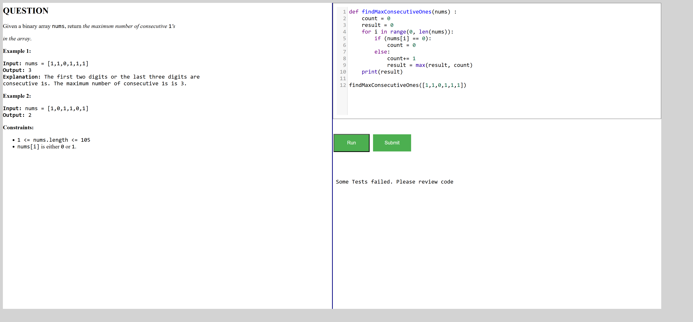PassVerify that user is able to navigate to "Find Numbers with Even Number of Digits" Page from Practice question page of "Arrays in Python" pageGiven The user is on the Home page and clicks Sign InWhen The user gets data from excel sheet "Valid_Login" and 1 for the login pageGiven The user is on the Practice question page of Arrays in Python pageWhen The user clicks the Find Numbers with Even Number of Digits linkThen The user should be redirected to Question page of Find Numbers with Even Number of Digits linkPassVerify that user receives NameError, SyntaxError for invalid python code on running "Find Numbers with Even Number of Digits" questionPassVerify that user receives NameError, SyntaxError for invalid python code on running "Find Numbers with Even Number of Digits" questionGiven The user is on the Home page and clicks Sign InWhen The user gets data from excel sheet "Valid_Login" and 1 for the login pageGiven The user is on the practice question editor of Find Numbers with Even Number of Digits questionWhen The user write the invalid code from "PracticeQns" and 1 in Editor and click the Run ButtonThen The user should able to see error message in alert window from "PracticeQns" and 1PassVerify that user receives NameError, SyntaxError for invalid python code on running "Find Numbers with Even Number of Digits" questionGiven The user is on the Home page and clicks Sign InWhen The user gets data from excel sheet "Valid_Login" and 1 for the login pageGiven The user is on the practice question editor of Find Numbers with Even Number of Digits questionWhen The user write the invalid code from "PracticeQns" and 2 in Editor and click the Run ButtonThen The user should able to see error message in alert window from "PracticeQns" and 2PassVerify that user is able to run valid python code for "Find Numbers with Even Number of Digits" questionPassVerify that user is able to run valid python code for "Find Numbers with Even Number of Digits" questionGiven The user is on the Home page and clicks Sign InWhen The user gets data from excel sheet "Valid_Login" and 1 for the login pageGiven The user is on the practice question editor of Find Numbers with Even Number of Digits questionWhen The user write the valid code from "PracticeQns" and 9 in Editor and click the Run ButtonThen The user should able to see output in the console from "PracticeQns" and 9PassVerify that user receives error on submitting invalid python code, incorrect answer for "Find Numbers with Even Number of Digits" questionPassVerify that user receives error on submitting invalid python code, incorrect answer for "Find Numbers with Even Number of Digits" questionGiven The user is on the Home page and clicks Sign InWhen The user gets data from excel sheet "Valid_Login" and 1 for the login pageGiven The user is on the practice question editor of Find Numbers with Even Number of Digits questionWhen The user write the code from "PracticeQns" and 3 in Editor and Click the Submit ButtonThen The user should see a message from "PracticeQns" and 3PassVerify that user receives error on submitting invalid python code, incorrect answer for "Find Numbers with Even Number of Digits" questionGiven The user is on the Home page and clicks Sign InWhen The user gets data from excel sheet "Valid_Login" and 1 for the login pageGiven The user is on the practice question editor of Find Numbers with Even Number of Digits questionWhen The user write the code from "PracticeQns" and 4 in Editor and Click the Submit ButtonThen The user should see a message from "PracticeQns" and 4PassVerify that user is able to successfully submit valid correct python code for "Find Numbers with Even Number of Digits" questionPassVerify that user is able to successfully submit valid correct python code for "Find Numbers with Even Number of Digits" questionGiven The user is on the Home page and clicks Sign InWhen The user gets data from excel sheet "Valid_Login" and 1 for the login pageGiven The user is on the practice question editor of Find Numbers with Even Number of Digits questionWhen The user write the code from "PracticeQns" and 10 in Editor and Click the Submit ButtonThen The user should see a message from "PracticeQns" and 10PassVerify that user is able to navigate to "Squares of a Sorted Array" Page from Practice question page of "Arrays in Python" pageGiven The user is on the Home page and clicks Sign InWhen The user gets data from excel sheet "Valid_Login" and 1 for the login pageGiven The user is on the Practice question page of Arrays in Python pageWhen The user clicks the Squares of a Sorted Array linkThen The user should be redirected to Question page of Squares of a Sorted Array linkPassVerify that user receives NameError, SyntaxError for invalid python code on running "Squares of a Sorted Array" questionPassVerify that user receives NameError, SyntaxError for invalid python code on running "Squares of a Sorted Array" questionGiven The user is on the Home page and clicks Sign InWhen The user gets data from excel sheet "Valid_Login" and 1 for the login pageGiven The user is on the practice question editor of Squares of a Sorted Array questionWhen The user write the invalid code from "PracticeQns" and 1 in Editor and click the Run ButtonThen The user should able to see error message in alert window from "PracticeQns" and 1PassVerify that user receives NameError, SyntaxError for invalid python code on running "Squares of a Sorted Array" questionGiven The user is on the Home page and clicks Sign InWhen The user gets data from excel sheet "Valid_Login" and 1 for the login pageGiven The user is on the practice question editor of Squares of a Sorted Array questionWhen The user write the invalid code from "PracticeQns" and 2 in Editor and click the Run ButtonThen The user should able to see error message in alert window from "PracticeQns" and 2PassVerify that user is able to run valid python code for "Squares of a Sorted Array" questionPassVerify that user is able to run valid python code for "Squares of a Sorted Array" questionGiven The user is on the Home page and clicks Sign InWhen The user gets data from excel sheet "Valid_Login" and 1 for the login pageGiven The user is on the practice question editor of Squares of a Sorted Array questionWhen The user write the valid code from "PracticeQns" and 11 in Editor and click the Run ButtonThen The user should able to see output in the console from "PracticeQns" and 11FailVerify that user receives error on submitting invalid python code, incorrect code for "Squares of a Sorted Array" questionFailVerify that user receives error on submitting invalid python code, incorrect code for "Squares of a Sorted Array" questionGiven The user is on the Home page and clicks Sign InWhen The user gets data from excel sheet "Valid_Login" and 1 for the login pageGiven The user is on the practice question editor of Squares of a Sorted Array questionWhen The user write the code from "PracticeQns" and 3 in Editor and Click the Submit ButtonThen The user should see a message from "PracticeQns" and 3Hooks.Hooks.teardown(io.cucumber.java.Scenario)screenshot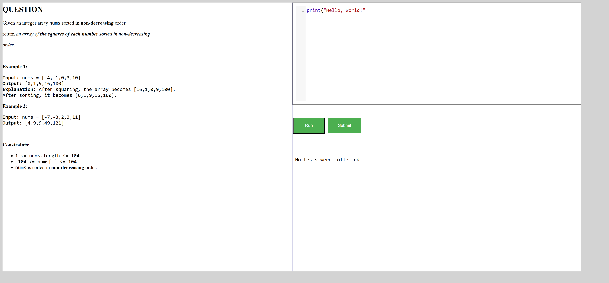FailVerify that user receives error on submitting invalid python code, incorrect code for "Squares of a Sorted Array" questionGiven The user is on the Home page and clicks Sign InWhen The user gets data from excel sheet "Valid_Login" and 1 for the login pageGiven The user is on the practice question editor of Squares of a Sorted Array questionWhen The user write the code from "PracticeQns" and 4 in Editor and Click the Submit ButtonThen The user should see a message from "PracticeQns" and 4Hooks.Hooks.teardown(io.cucumber.java.Scenario)screenshotFailVerify that user is able to successfully submit valid correct python code for "Squares of a Sorted Array" questionFailVerify that user is able to successfully submit valid correct python code for "Squares of a Sorted Array" questionGiven The user is on the Home page and clicks Sign InWhen The user gets data from excel sheet "Valid_Login" and 1 for the login pageGiven The user is on the practice question editor of Squares of a Sorted Array questionWhen The user write the code from "PracticeQns" and 12 in Editor and Click the Submit ButtonThen The user should see a message from "PracticeQns" and 12Hooks.Hooks.teardown(io.cucumber.java.Scenario)screenshot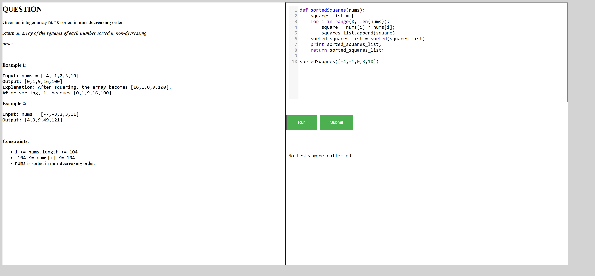PassVerify that user is able to navigate to "Arrays Using List" pageGiven The user is on the Home page and clicks Sign InWhen The user gets data from excel sheet "Valid_Login" and 1 for the login pageGiven The user is in the Array page after Sign inWhen The user clicks Arrays Using List buttonThen The user should be redirected to Arrays Using List pagePassVerify that user is able to navigate to "try Editor" page for "Arrays Using List" pageGiven The user is on the Home page and clicks Sign InWhen The user gets data from excel sheet "Valid_Login" and 1 for the login pageGiven The user is in the Arrays Using List pageWhen The user clicks Try Here button in Arrays Using List pageThen The user should be redirected to a page having a try Editor with a Run button to testFailVerify that user receives error when click on Run button without entering code for "Arrays Using List" try Editor pageFailVerify that user receives error when click on Run button without entering code for "Arrays Using List" try Editor pageGiven The user is on the Home page and clicks Sign InWhen The user gets data from excel sheet "Valid_Login" and 1 for the login pageGiven The user is in the tryEditor page of Arrays Using ListWhen The user enters "TryCode" and 1 clicks the Run Button in tryEditor pageThen The user should able to see a error message from "TryCode" and 1Hooks.Hooks.teardown(io.cucumber.java.Scenario)screenshot
PassVerify that user is able to navigate to "Max Consecutive Ones" Page from Practice question page of "Arrays in Python" pageGiven The user is on the Home page and clicks Sign InWhen The user gets data from excel sheet "Valid_Login" and 1 for the login pageGiven The user is on the Practice question page of Arrays in Python pageWhen The user clicks the Max Consecutive Ones linkThen The user should be redirected to Question page of Max Consecutive Ones linkPassVerify that user receives NameError, SyntaxError for invalid python code on running "Max Consecutive Ones" questionPassVerify that user receives NameError, SyntaxError for invalid python code on running "Max Consecutive Ones" questionGiven The user is on the Home page and clicks Sign InWhen The user gets data from excel sheet "Valid_Login" and 1 for the login pageGiven The user is on the practice question editor of Max Consecutive Ones questionWhen The user write the invalid code from "PracticeQns" and 1 in Editor and click the Run ButtonThen The user should able to see error message in alert window from "PracticeQns" and 1PassVerify that user receives NameError, SyntaxError for invalid python code on running "Max Consecutive Ones" questionGiven The user is on the Home page and clicks Sign InWhen The user gets data from excel sheet "Valid_Login" and 1 for the login pageGiven The user is on the practice question editor of Max Consecutive Ones questionWhen The user write the invalid code from "PracticeQns" and 2 in Editor and click the Run ButtonThen The user should able to see error message in alert window from "PracticeQns" and 2PassVerify that user is able to run valid python code for "Max Consecutive Ones" questionPassVerify that user is able to run valid python code for "Max Consecutive Ones" questionGiven The user is on the Home page and clicks Sign InWhen The user gets data from excel sheet "Valid_Login" and 1 for the login pageGiven The user is on the practice question editor of Max Consecutive Ones questionWhen The user write the valid code from "PracticeQns" and 7 in Editor and click the Run ButtonThen The user should able to see output in the console from "PracticeQns" and 7PassVerify that user receives error on submitting invalid python code, incorrect answer for "Max Consecutive Ones" questionPassVerify that user receives error on submitting invalid python code, incorrect answer for "Max Consecutive Ones" questionGiven The user is on the Home page and clicks Sign InWhen The user gets data from excel sheet "Valid_Login" and 1 for the login pageGiven The user is on the practice question editor of Max Consecutive Ones questionWhen The user write the code from "PracticeQns" and 3 in Editor and Click the Submit ButtonThen The user should see a message from "PracticeQns" and 3PassVerify that user receives error on submitting invalid python code, incorrect answer for "Max Consecutive Ones" questionGiven The user is on the Home page and clicks Sign InWhen The user gets data from excel sheet "Valid_Login" and 1 for the login pageGiven The user is on the practice question editor of Max Consecutive Ones questionWhen The user write the code from "PracticeQns" and 4 in Editor and Click the Submit ButtonThen The user should see a message from "PracticeQns" and 4FailVerify that user is able to successfully submit valid correct python code for "Max Consecutive Ones" questionFailVerify that user is able to successfully submit valid correct python code for "Max Consecutive Ones" questionGiven The user is on the Home page and clicks Sign InWhen The user gets data from excel sheet "Valid_Login" and 1 for the login pageGiven The user is on the practice question editor of Max Consecutive Ones questionWhen The user write the code from "PracticeQns" and 8 in Editor and Click the Submit ButtonThen The user should see a message from "PracticeQns" and 8Hooks.Hooks.teardown(io.cucumber.java.Scenario)screenshot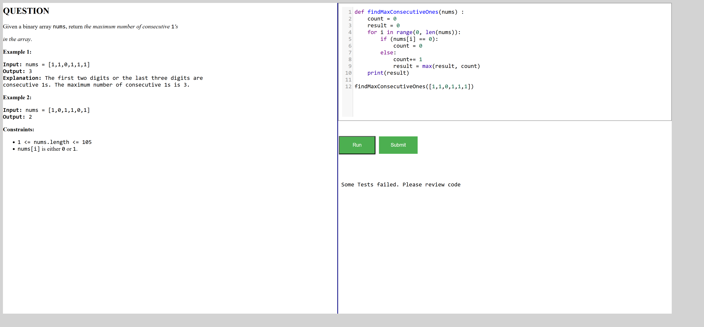PassVerify that user is able to navigate to "Find Numbers with Even Number of Digits" Page from Practice question page of "Arrays in Python" pageGiven The user is on the Home page and clicks Sign InWhen The user gets data from excel sheet "Valid_Login" and 1 for the login pageGiven The user is on the Practice question page of Arrays in Python pageWhen The user clicks the Find Numbers with Even Number of Digits linkThen The user should be redirected to Question page of Find Numbers with Even Number of Digits linkPassVerify that user receives NameError, SyntaxError for invalid python code on running "Find Numbers with Even Number of Digits" questionPassVerify that user receives NameError, SyntaxError for invalid python code on running "Find Numbers with Even Number of Digits" questionGiven The user is on the Home page and clicks Sign InWhen The user gets data from excel sheet "Valid_Login" and 1 for the login pageGiven The user is on the practice question editor of Find Numbers with Even Number of Digits questionWhen The user write the invalid code from "PracticeQns" and 1 in Editor and click the Run ButtonThen The user should able to see error message in alert window from "PracticeQns" and 1PassVerify that user receives NameError, SyntaxError for invalid python code on running "Find Numbers with Even Number of Digits" questionGiven The user is on the Home page and clicks Sign InWhen The user gets data from excel sheet "Valid_Login" and 1 for the login pageGiven The user is on the practice question editor of Find Numbers with Even Number of Digits questionWhen The user write the invalid code from "PracticeQns" and 2 in Editor and click the Run ButtonThen The user should able to see error message in alert window from "PracticeQns" and 2PassVerify that user is able to run valid python code for "Find Numbers with Even Number of Digits" questionPassVerify that user is able to run valid python code for "Find Numbers with Even Number of Digits" questionGiven The user is on the Home page and clicks Sign InWhen The user gets data from excel sheet "Valid_Login" and 1 for the login pageGiven The user is on the practice question editor of Find Numbers with Even Number of Digits questionWhen The user write the valid code from "PracticeQns" and 9 in Editor and click the Run ButtonThen The user should able to see output in the console from "PracticeQns" and 9PassVerify that user receives error on submitting invalid python code, incorrect answer for "Find Numbers with Even Number of Digits" questionPassVerify that user receives error on submitting invalid python code, incorrect answer for "Find Numbers with Even Number of Digits" questionGiven The user is on the Home page and clicks Sign InWhen The user gets data from excel sheet "Valid_Login" and 1 for the login pageGiven The user is on the practice question editor of Find Numbers with Even Number of Digits questionWhen The user write the code from "PracticeQns" and 3 in Editor and Click the Submit ButtonThen The user should see a message from "PracticeQns" and 3PassVerify that user receives error on submitting invalid python code, incorrect answer for "Find Numbers with Even Number of Digits" questionGiven The user is on the Home page and clicks Sign InWhen The user gets data from excel sheet "Valid_Login" and 1 for the login pageGiven The user is on the practice question editor of Find Numbers with Even Number of Digits questionWhen The user write the code from "PracticeQns" and 4 in Editor and Click the Submit ButtonThen The user should see a message from "PracticeQns" and 4PassVerify that user is able to successfully submit valid correct python code for "Find Numbers with Even Number of Digits" questionPassVerify that user is able to successfully submit valid correct python code for "Find Numbers with Even Number of Digits" questionGiven The user is on the Home page and clicks Sign InWhen The user gets data from excel sheet "Valid_Login" and 1 for the login pageGiven The user is on the practice question editor of Find Numbers with Even Number of Digits questionWhen The user write the code from "PracticeQns" and 10 in Editor and Click the Submit ButtonThen The user should see a message from "PracticeQns" and 10PassVerify that user is able to navigate to "Squares of a Sorted Array" Page from Practice question page of "Arrays in Python" pageGiven The user is on the Home page and clicks Sign InWhen The user gets data from excel sheet "Valid_Login" and 1 for the login pageGiven The user is on the Practice question page of Arrays in Python pageWhen The user clicks the Squares of a Sorted Array linkThen The user should be redirected to Question page of Squares of a Sorted Array linkPassVerify that user receives NameError, SyntaxError for invalid python code on running "Squares of a Sorted Array" questionPassVerify that user receives NameError, SyntaxError for invalid python code on running "Squares of a Sorted Array" questionGiven The user is on the Home page and clicks Sign InWhen The user gets data from excel sheet "Valid_Login" and 1 for the login pageGiven The user is on the practice question editor of Squares of a Sorted Array questionWhen The user write the invalid code from "PracticeQns" and 1 in Editor and click the Run ButtonThen The user should able to see error message in alert window from "PracticeQns" and 1PassVerify that user receives NameError, SyntaxError for invalid python code on running "Squares of a Sorted Array" questionGiven The user is on the Home page and clicks Sign InWhen The user gets data from excel sheet "Valid_Login" and 1 for the login pageGiven The user is on the practice question editor of Squares of a Sorted Array questionWhen The user write the invalid code from "PracticeQns" and 2 in Editor and click the Run ButtonThen The user should able to see error message in alert window from "PracticeQns" and 2PassVerify that user is able to run valid python code for "Squares of a Sorted Array" questionPassVerify that user is able to run valid python code for "Squares of a Sorted Array" questionGiven The user is on the Home page and clicks Sign InWhen The user gets data from excel sheet "Valid_Login" and 1 for the login pageGiven The user is on the practice question editor of Squares of a Sorted Array questionWhen The user write the valid code from "PracticeQns" and 11 in Editor and click the Run ButtonThen The user should able to see output in the console from "PracticeQns" and 11FailVerify that user receives error on submitting invalid python code, incorrect code for "Squares of a Sorted Array" questionFailVerify that user receives error on submitting invalid python code, incorrect code for "Squares of a Sorted Array" questionGiven The user is on the Home page and clicks Sign InWhen The user gets data from excel sheet "Valid_Login" and 1 for the login pageGiven The user is on the practice question editor of Squares of a Sorted Array questionWhen The user write the code from "PracticeQns" and 3 in Editor and Click the Submit ButtonThen The user should see a message from "PracticeQns" and 3Hooks.Hooks.teardown(io.cucumber.java.Scenario)screenshot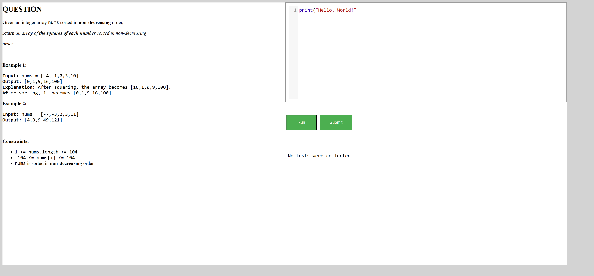FailVerify that user receives error on submitting invalid python code, incorrect code for "Squares of a Sorted Array" questionGiven The user is on the Home page and clicks Sign InWhen The user gets data from excel sheet "Valid_Login" and 1 for the login pageGiven The user is on the practice question editor of Squares of a Sorted Array questionWhen The user write the code from "PracticeQns" and 4 in Editor and Click the Submit ButtonThen The user should see a message from "PracticeQns" and 4Hooks.Hooks.teardown(io.cucumber.java.Scenario)screenshotFailVerify that user is able to successfully submit valid correct python code for "Squares of a Sorted Array" questionFailVerify that user is able to successfully submit valid correct python code for "Squares of a Sorted Array" questionGiven The user is on the Home page and clicks Sign InWhen The user gets data from excel sheet "Valid_Login" and 1 for the login pageGiven The user is on the practice question editor of Squares of a Sorted Array questionWhen The user write the code from "PracticeQns" and 12 in Editor and Click the Submit ButtonThen The user should see a message from "PracticeQns" and 12Hooks.Hooks.teardown(io.cucumber.java.Scenario)screenshot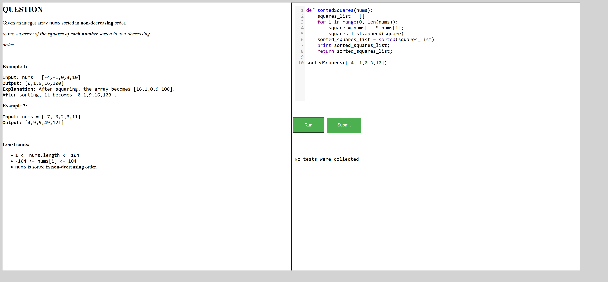PassVerify that user is able to navigate to "Arrays Using List" pageGiven The user is on the Home page and clicks Sign InWhen The user gets data from excel sheet "Valid_Login" and 1 for the login pageGiven The user is in the Array page after Sign inWhen The user clicks Arrays Using List buttonThen The user should be redirected to Arrays Using List pagePassVerify that user is able to navigate to "try Editor" page for "Arrays Using List" pageGiven The user is on the Home page and clicks Sign InWhen The user gets data from excel sheet "Valid_Login" and 1 for the login pageGiven The user is in the Arrays Using List pageWhen The user clicks Try Here button in Arrays Using List pageThen The user should be redirected to a page having a try Editor with a Run button to testFailVerify that user receives error when click on Run button without entering code for "Arrays Using List" try Editor pageFailVerify that user receives error when click on Run button without entering code for "Arrays Using List" try Editor pageGiven The user is on the Home page and clicks Sign InWhen The user gets data from excel sheet "Valid_Login" and 1 for the login pageGiven The user is in the tryEditor page of Arrays Using ListWhen The user enters "TryCode" and 1 clicks the Run Button in tryEditor pageThen The user should able to see a error message from "TryCode" and 1Hooks.Hooks.teardown(io.cucumber.java.Scenario)screenshot PassVerify that user receives error when click on Run button without entering code for "Arrays Using List" try Editor pageGiven The user is on the Home page and clicks Sign InWhen The user gets data from excel sheet "Valid_Login" and 1 for the login pageGiven The user is in the tryEditor page of Arrays Using ListWhen The user enters "TryCode" and 2 clicks the Run Button in tryEditor pageThen The user should able to see a error message from "TryCode" and 2PassVerify that user receives error when click on Run button without entering code for "Arrays Using List" try Editor pageGiven The user is on the Home page and clicks Sign InWhen The user gets data from excel sheet "Valid_Login" and 1 for the login pageGiven The user is in the tryEditor page of Arrays Using ListWhen The user enters "TryCode" and 3 clicks the Run Button in tryEditor pageThen The user should able to see a error message from "TryCode" and 3PassVerify that user is able to see output for valid python code for "Arrays Using List" try Editor pagePassVerify that user is able to see output for valid python code for "Arrays Using List" try Editor pageGiven The user is on the Home page and clicks Sign InWhen The user gets data from excel sheet "Valid_Login" and 1 for the login pageGiven The user is in the tryEditor page of Arrays Using ListWhen The user enters "TryCode" and 4 clicks the Run Button in tryEditor pageThen The user should able to see output in the console from "TryCode" and 4PassVerify that user is able to navigate to "Practice Questions" Page from "Arrays Using List" pageGiven The user is on the Home page and clicks Sign InWhen The user gets data from excel sheet "Valid_Login" and 1 for the login pageGiven The user is in the Arrays Using List pageWhen The user clicks Practice Questions buttonThen The user should be redirected to Practice pagePassVerify that user is able to navigate to "Basic Operations in Lists" pageGiven The user is on the Home page and clicks Sign InWhen The user gets data from excel sheet "Valid_Login" and 1 for the login pageGiven The user is in the Array page after Sign inWhen The user clicks Basic Operations in Lists buttonThen The user should be redirected to Basic Operations in Lists pagePassVerify that user is able to navigate to "try Editor" page for "Basic Operations in Lists" pageGiven The user is on the Home page and clicks Sign InWhen The user gets data from excel sheet "Valid_Login" and 1 for the login pageGiven The user is in the Basic Operations in Lists pageWhen The user clicks Try Here button in Basic Operations in Lists pageThen The user should be redirected to a page having a try Editor with a Run button to testFailVerify that user receives error when click on Run button without entering code for "Basic Operations in Lists" try Editor pageFailVerify that user receives error when click on Run button without entering code for "Basic Operations in Lists" try Editor pageGiven The user is on the Home page and clicks Sign InWhen The user gets data from excel sheet "Valid_Login" and 1 for the login pageGiven The user is in the tryEditor page of Basic Operations in ListsWhen The user enters "TryCode" and 1 clicks the Run Button in tryEditor pageThen The user should able to see a error message from "TryCode" and 1Hooks.Hooks.teardown(io.cucumber.java.Scenario)screenshot
PassVerify that user receives error when click on Run button without entering code for "Arrays Using List" try Editor pageGiven The user is on the Home page and clicks Sign InWhen The user gets data from excel sheet "Valid_Login" and 1 for the login pageGiven The user is in the tryEditor page of Arrays Using ListWhen The user enters "TryCode" and 2 clicks the Run Button in tryEditor pageThen The user should able to see a error message from "TryCode" and 2PassVerify that user receives error when click on Run button without entering code for "Arrays Using List" try Editor pageGiven The user is on the Home page and clicks Sign InWhen The user gets data from excel sheet "Valid_Login" and 1 for the login pageGiven The user is in the tryEditor page of Arrays Using ListWhen The user enters "TryCode" and 3 clicks the Run Button in tryEditor pageThen The user should able to see a error message from "TryCode" and 3PassVerify that user is able to see output for valid python code for "Arrays Using List" try Editor pagePassVerify that user is able to see output for valid python code for "Arrays Using List" try Editor pageGiven The user is on the Home page and clicks Sign InWhen The user gets data from excel sheet "Valid_Login" and 1 for the login pageGiven The user is in the tryEditor page of Arrays Using ListWhen The user enters "TryCode" and 4 clicks the Run Button in tryEditor pageThen The user should able to see output in the console from "TryCode" and 4PassVerify that user is able to navigate to "Practice Questions" Page from "Arrays Using List" pageGiven The user is on the Home page and clicks Sign InWhen The user gets data from excel sheet "Valid_Login" and 1 for the login pageGiven The user is in the Arrays Using List pageWhen The user clicks Practice Questions buttonThen The user should be redirected to Practice pagePassVerify that user is able to navigate to "Basic Operations in Lists" pageGiven The user is on the Home page and clicks Sign InWhen The user gets data from excel sheet "Valid_Login" and 1 for the login pageGiven The user is in the Array page after Sign inWhen The user clicks Basic Operations in Lists buttonThen The user should be redirected to Basic Operations in Lists pagePassVerify that user is able to navigate to "try Editor" page for "Basic Operations in Lists" pageGiven The user is on the Home page and clicks Sign InWhen The user gets data from excel sheet "Valid_Login" and 1 for the login pageGiven The user is in the Basic Operations in Lists pageWhen The user clicks Try Here button in Basic Operations in Lists pageThen The user should be redirected to a page having a try Editor with a Run button to testFailVerify that user receives error when click on Run button without entering code for "Basic Operations in Lists" try Editor pageFailVerify that user receives error when click on Run button without entering code for "Basic Operations in Lists" try Editor pageGiven The user is on the Home page and clicks Sign InWhen The user gets data from excel sheet "Valid_Login" and 1 for the login pageGiven The user is in the tryEditor page of Basic Operations in ListsWhen The user enters "TryCode" and 1 clicks the Run Button in tryEditor pageThen The user should able to see a error message from "TryCode" and 1Hooks.Hooks.teardown(io.cucumber.java.Scenario)screenshot PassVerify that user receives error when click on Run button without entering code for "Basic Operations in Lists" try Editor pageGiven The user is on the Home page and clicks Sign InWhen The user gets data from excel sheet "Valid_Login" and 1 for the login pageGiven The user is in the tryEditor page of Basic Operations in ListsWhen The user enters "TryCode" and 2 clicks the Run Button in tryEditor pageThen The user should able to see a error message from "TryCode" and 2PassVerify that user receives error when click on Run button without entering code for "Basic Operations in Lists" try Editor pageGiven The user is on the Home page and clicks Sign InWhen The user gets data from excel sheet "Valid_Login" and 1 for the login pageGiven The user is in the tryEditor page of Basic Operations in ListsWhen The user enters "TryCode" and 3 clicks the Run Button in tryEditor pageThen The user should able to see a error message from "TryCode" and 3PassVerify that user is able to see output for valid python code for "Basic Operations in Lists"try Editor pagePassVerify that user is able to see output for valid python code for "Basic Operations in Lists"try Editor pageGiven The user is on the Home page and clicks Sign InWhen The user gets data from excel sheet "Valid_Login" and 1 for the login pageGiven The user is in the tryEditor page of Basic Operations in ListsWhen The user enters "TryCode" and 4 clicks the Run Button in tryEditor pageThen The user should able to see output in the console from "TryCode" and 4PassVerify that user is able to navigate to "Practice Questions" Page from "Basic Operations in Lists" pageGiven The user is on the Home page and clicks Sign InWhen The user gets data from excel sheet "Valid_Login" and 1 for the login pageGiven The user is in the Basic Operations in Lists pageWhen The user clicks Practice Questions buttonThen The user should be redirected to Practice pagePassVerify that user is able to navigate to "Applications of Array" pageGiven The user is on the Home page and clicks Sign InWhen The user gets data from excel sheet "Valid_Login" and 1 for the login pageGiven The user is in the Array page after Sign inWhen The user clicks Applications of Array buttonThen The user should be redirected to Applications of Array pagePassVerify that user is able to navigate to "try Editor" page for "Applications of Array" pageGiven The user is on the Home page and clicks Sign InWhen The user gets data from excel sheet "Valid_Login" and 1 for the login pageGiven The user is in the Applications of Array pageWhen The user clicks Try Here button in Applications of Array pageThen The user should be redirected to a page having a try Editor with a Run button to testFailVerify that user receives error when click on Run button without entering code for "Applications of Array" pageFailVerify that user receives error when click on Run button without entering code for "Applications of Array" pageGiven The user is on the Home page and clicks Sign InWhen The user gets data from excel sheet "Valid_Login" and 1 for the login pageGiven The user is in the tryEditor page of Applications of ArrayWhen The user enters "TryCode" and 1 clicks the Run Button in tryEditor pageThen The user should able to see a error message from "TryCode" and 1Hooks.Hooks.teardown(io.cucumber.java.Scenario)screenshot
PassVerify that user receives error when click on Run button without entering code for "Basic Operations in Lists" try Editor pageGiven The user is on the Home page and clicks Sign InWhen The user gets data from excel sheet "Valid_Login" and 1 for the login pageGiven The user is in the tryEditor page of Basic Operations in ListsWhen The user enters "TryCode" and 2 clicks the Run Button in tryEditor pageThen The user should able to see a error message from "TryCode" and 2PassVerify that user receives error when click on Run button without entering code for "Basic Operations in Lists" try Editor pageGiven The user is on the Home page and clicks Sign InWhen The user gets data from excel sheet "Valid_Login" and 1 for the login pageGiven The user is in the tryEditor page of Basic Operations in ListsWhen The user enters "TryCode" and 3 clicks the Run Button in tryEditor pageThen The user should able to see a error message from "TryCode" and 3PassVerify that user is able to see output for valid python code for "Basic Operations in Lists"try Editor pagePassVerify that user is able to see output for valid python code for "Basic Operations in Lists"try Editor pageGiven The user is on the Home page and clicks Sign InWhen The user gets data from excel sheet "Valid_Login" and 1 for the login pageGiven The user is in the tryEditor page of Basic Operations in ListsWhen The user enters "TryCode" and 4 clicks the Run Button in tryEditor pageThen The user should able to see output in the console from "TryCode" and 4PassVerify that user is able to navigate to "Practice Questions" Page from "Basic Operations in Lists" pageGiven The user is on the Home page and clicks Sign InWhen The user gets data from excel sheet "Valid_Login" and 1 for the login pageGiven The user is in the Basic Operations in Lists pageWhen The user clicks Practice Questions buttonThen The user should be redirected to Practice pagePassVerify that user is able to navigate to "Applications of Array" pageGiven The user is on the Home page and clicks Sign InWhen The user gets data from excel sheet "Valid_Login" and 1 for the login pageGiven The user is in the Array page after Sign inWhen The user clicks Applications of Array buttonThen The user should be redirected to Applications of Array pagePassVerify that user is able to navigate to "try Editor" page for "Applications of Array" pageGiven The user is on the Home page and clicks Sign InWhen The user gets data from excel sheet "Valid_Login" and 1 for the login pageGiven The user is in the Applications of Array pageWhen The user clicks Try Here button in Applications of Array pageThen The user should be redirected to a page having a try Editor with a Run button to testFailVerify that user receives error when click on Run button without entering code for "Applications of Array" pageFailVerify that user receives error when click on Run button without entering code for "Applications of Array" pageGiven The user is on the Home page and clicks Sign InWhen The user gets data from excel sheet "Valid_Login" and 1 for the login pageGiven The user is in the tryEditor page of Applications of ArrayWhen The user enters "TryCode" and 1 clicks the Run Button in tryEditor pageThen The user should able to see a error message from "TryCode" and 1Hooks.Hooks.teardown(io.cucumber.java.Scenario)screenshot PassVerify that user receives error when click on Run button without entering code for "Applications of Array" pageGiven The user is on the Home page and clicks Sign InWhen The user gets data from excel sheet "Valid_Login" and 1 for the login pageGiven The user is in the tryEditor page of Applications of ArrayWhen The user enters "TryCode" and 2 clicks the Run Button in tryEditor pageThen The user should able to see a error message from "TryCode" and 2PassVerify that user receives error when click on Run button without entering code for "Applications of Array" pageGiven The user is on the Home page and clicks Sign InWhen The user gets data from excel sheet "Valid_Login" and 1 for the login pageGiven The user is in the tryEditor page of Applications of ArrayWhen The user enters "TryCode" and 3 clicks the Run Button in tryEditor pageThen The user should able to see a error message from "TryCode" and 3PassVerify that user is able to see output for valid python code for "Applications of Array" try Editor pagePassVerify that user is able to see output for valid python code for "Applications of Array" try Editor pageGiven The user is on the Home page and clicks Sign InWhen The user gets data from excel sheet "Valid_Login" and 1 for the login pageGiven The user is in the tryEditor page of Applications of ArrayWhen The user enters "TryCode" and 4 clicks the Run Button in tryEditor pageThen The user should able to see output in the console from "TryCode" and 4PassVerify that user is able to navigate to "Practice Questions" Page for "Applications of Array" try Editor pageGiven The user is on the Home page and clicks Sign InWhen The user gets data from excel sheet "Valid_Login" and 1 for the login pageGiven The user is in the Applications of Array pageWhen The user clicks Practice Questions buttonThen The user should be redirected to Practice page
PassVerify that user receives error when click on Run button without entering code for "Applications of Array" pageGiven The user is on the Home page and clicks Sign InWhen The user gets data from excel sheet "Valid_Login" and 1 for the login pageGiven The user is in the tryEditor page of Applications of ArrayWhen The user enters "TryCode" and 2 clicks the Run Button in tryEditor pageThen The user should able to see a error message from "TryCode" and 2PassVerify that user receives error when click on Run button without entering code for "Applications of Array" pageGiven The user is on the Home page and clicks Sign InWhen The user gets data from excel sheet "Valid_Login" and 1 for the login pageGiven The user is in the tryEditor page of Applications of ArrayWhen The user enters "TryCode" and 3 clicks the Run Button in tryEditor pageThen The user should able to see a error message from "TryCode" and 3PassVerify that user is able to see output for valid python code for "Applications of Array" try Editor pagePassVerify that user is able to see output for valid python code for "Applications of Array" try Editor pageGiven The user is on the Home page and clicks Sign InWhen The user gets data from excel sheet "Valid_Login" and 1 for the login pageGiven The user is in the tryEditor page of Applications of ArrayWhen The user enters "TryCode" and 4 clicks the Run Button in tryEditor pageThen The user should able to see output in the console from "TryCode" and 4PassVerify that user is able to navigate to "Practice Questions" Page for "Applications of Array" try Editor pageGiven The user is on the Home page and clicks Sign InWhen The user gets data from excel sheet "Valid_Login" and 1 for the login pageGiven The user is in the Applications of Array pageWhen The user clicks Practice Questions buttonThen The user should be redirected to Practice page -
Data Structures - Introduction
11:47:09 AM / 00:01:11:733 Fail
Data Structures - Introduction
05.08.2025 11:47:09 AM 05.08.2025 11:48:21 AM 00:01:11:733 · #test-id=490PassVerify that user is able to navigate to "Data Structures - Introduction" pageGiven The user is on the Home page and clicks Sign InWhen The user gets data from excel sheet "Valid_Login" and 1 for the login pageThen The user is in the Home page after Sign InGiven The user is in the Home page after Sign InWhen The user clicks the "Get Started" button in Data Structures - IntroductionThen The user should be redirected to "Data Structures-Introduction" in Data structures-IntroductionPassVerify that user is able to navigate to "Time Complexity" pageGiven The user is on the Home page and clicks Sign InWhen The user gets data from excel sheet "Valid_Login" and 1 for the login pageThen The user is in the Home page after Sign InGiven The user is in the "Data Structures-Introduction" page in Data structures-IntroductionWhen The user clicks the Time Complexity buttonThen The user should be redirected to "Time Complexity" in Data structures-IntroductionPassVerify that user is able to navigate to "Practice Questions" pageGiven The user is on the Home page and clicks Sign InWhen The user gets data from excel sheet "Valid_Login" and 1 for the login pageThen The user is in the Home page after Sign InGiven The user is in the "Time Complexity" page in Data structures-IntroductionWhen The user clicks the Practice Questions button in Time Complexity pageThen The user should be redirected to "Practice Questions" in Data structures-IntroductionFailVerify that user is able to open practice questions in "Practice Questions" pageGiven The user is on the Home page and clicks Sign InWhen The user gets data from excel sheet "Valid_Login" and 1 for the login pageThen The user is in the Home page after Sign InGiven The user is in the "Practice Questions" page in Data structures-IntroductionWhen The user clicks the first practice question in Practice Questions pageThen The user should be redirected to "Assessment" in Data structures-IntroductionStep skippedHooks.Hooks.teardown(io.cucumber.java.Scenario)screenshotPassVerify that user is able to navigate to "Try here" in "Time Complexity" pageGiven The user is on the Home page and clicks Sign InWhen The user gets data from excel sheet "Valid_Login" and 1 for the login pageThen The user is in the Home page after Sign InGiven The user is in the "Time Complexity" page in Data structures-IntroductionWhen The user clicks the Try here button in Time Complexity pageThen The user should be redirected to "Assessment" in Data structures-IntroductionFailVerify that user receives error when click on Run button without entering codeFailVerify that user receives error when click on Run button without entering codeGiven The user is on the Home page and clicks Sign InWhen The user gets data from excel sheet "Valid_Login" and 1 for the login pageThen The user is in the Home page after Sign InGiven The user is in the "Assessment" page in Data structures-IntroductionWhen The user clicks the Run button in Data structures-Introductio tryEditor pageThen The user should able to see a error message from "DataStructures" and 4 on Time Complexity tryEditor popupHooks.Hooks.teardown(io.cucumber.java.Scenario)screenshot PassVerify that user receives error for invalid python code in Time Complexity Try EditorPassVerify that user receives error for invalid python code in Time Complexity Try EditorGiven The user is on the Home page and clicks Sign InWhen The user gets data from excel sheet "Valid_Login" and 1 for the login pageThen The user is in the Home page after Sign InGiven The user is in the "Assessment" page in Data structures-IntroductionWhen The user enters "DataStructures" and 3 clicks the Run Button in Time Complexity tryEditor pageThen The user should able to see a error message from "DataStructures" and 3 on Time Complexity tryEditor popupPassVerify that user is able to see output for valid python code in Time Complexity Try EditorPassVerify that user is able to see output for valid python code in Time Complexity Try EditorGiven The user is on the Home page and clicks Sign InWhen The user gets data from excel sheet "Valid_Login" and 1 for the login pageThen The user is in the Home page after Sign InGiven The user is in the "Assessment" page in Data structures-IntroductionWhen The user enters "DataStructures" and 1 clicks the Run Button in Time Complexity tryEditor pageThen The user should able to see output in the console from "DataStructures" and 1 in Time Complexity tryEditor pagePassVerify that user is able to see output for valid python code in Time Complexity Try EditorGiven The user is on the Home page and clicks Sign InWhen The user gets data from excel sheet "Valid_Login" and 1 for the login pageThen The user is in the Home page after Sign InGiven The user is in the "Assessment" page in Data structures-IntroductionWhen The user enters "DataStructures" and 2 clicks the Run Button in Time Complexity tryEditor pageThen The user should able to see output in the console from "DataStructures" and 2 in Time Complexity tryEditor page
PassVerify that user receives error for invalid python code in Time Complexity Try EditorPassVerify that user receives error for invalid python code in Time Complexity Try EditorGiven The user is on the Home page and clicks Sign InWhen The user gets data from excel sheet "Valid_Login" and 1 for the login pageThen The user is in the Home page after Sign InGiven The user is in the "Assessment" page in Data structures-IntroductionWhen The user enters "DataStructures" and 3 clicks the Run Button in Time Complexity tryEditor pageThen The user should able to see a error message from "DataStructures" and 3 on Time Complexity tryEditor popupPassVerify that user is able to see output for valid python code in Time Complexity Try EditorPassVerify that user is able to see output for valid python code in Time Complexity Try EditorGiven The user is on the Home page and clicks Sign InWhen The user gets data from excel sheet "Valid_Login" and 1 for the login pageThen The user is in the Home page after Sign InGiven The user is in the "Assessment" page in Data structures-IntroductionWhen The user enters "DataStructures" and 1 clicks the Run Button in Time Complexity tryEditor pageThen The user should able to see output in the console from "DataStructures" and 1 in Time Complexity tryEditor pagePassVerify that user is able to see output for valid python code in Time Complexity Try EditorGiven The user is on the Home page and clicks Sign InWhen The user gets data from excel sheet "Valid_Login" and 1 for the login pageThen The user is in the Home page after Sign InGiven The user is in the "Assessment" page in Data structures-IntroductionWhen The user enters "DataStructures" and 2 clicks the Run Button in Time Complexity tryEditor pageThen The user should able to see output in the console from "DataStructures" and 2 in Time Complexity tryEditor page -
Graph
11:48:21 AM / 00:02:19:554 Fail
Graph
05.08.2025 11:48:21 AM 05.08.2025 11:50:40 AM 00:02:19:554 · #test-id=575PassVerify that user able to see warning message while selecting Graph from the dropdown Data Structures without Sign inGiven The user is on the Home pageWhen The user selects Graph from Data Structures dropdownThen The user should able to see an warning message "You are not logged in"PassVerify that user able to see warning message on clicking "Get Started" buttons of "Graph" on the home page without Sign inGiven The user is on the Home pageWhen The user clicks Get Started buttons of Graph on the homepage without Sign inThen The user should able to see an warning message_graph "You are not logged in"PassVerify that user is able to click on graphs Get started button of Graph on the home page after giving valid username and passwordPassVerify that user is able to click on graphs Get started button of Graph on the home page after giving valid username and passwordGiven The user is on the Home pageWhen The user gets data from excel sheet 'Valid_Login' and 1 for the login page and clicks Graphs Get Started buttonThen The user should able to redirect to the Graph pagePassVerify that user is able to click on the sublink Graph from the Tree pageGiven The user is on the Graph pageWhen The user clicks on the sublink Graph on the Graph pageThen The user should redirect to the sublink Graph pagePassVerify that user is able to click on the button Try here >>> from the sublink Graph pageGiven The user is on the sublink Graph pageWhen The user clicks on the button Try here >>> from the sublink Graph pageThen The user should able to redirect to a new page with text area for trying the codePassVerify that user is able to type python code in the text area of sublink Graph pagePassVerify that user is able to type python code in the text area of sublink Graph pageGiven The user is on the try here textarea of sublink Graph pageWhen The user gets python code from excel sheet 'Graph' and 1 for the tryeditor and click run buttonThen The user should able to get the result from excel sheet 'Graph' and 1FailUser submits different codes and receives an alertPassUser submits different codes and receives an alertGiven The user is on the try here textarea of sublink Graph pageWhen I enter the code from excel sheet 'Graph' and 2Then The user should be able to receive an alert message from excel sheet 'Graph' and 2PassUser submits different codes and receives an alertGiven The user is on the try here textarea of sublink Graph pageWhen I enter the code from excel sheet 'Graph' and 4Then The user should be able to receive an alert message from excel sheet 'Graph' and 4FailUser submits different codes and receives an alertGiven The user is on the try here textarea of sublink Graph pageWhen I enter the code from excel sheet 'Graph' and 5Then The user should be able to receive an alert message from excel sheet 'Graph' and 5Hooks.Hooks.teardown(io.cucumber.java.Scenario)screenshot PassUser submits different codes and receives an alertGiven The user is on the try here textarea of sublink Graph pageWhen I enter the code from excel sheet 'Graph' and 6Then The user should be able to receive an alert message from excel sheet 'Graph' and 6PassVerify user is able to navigate to the previous page sublink Graph on clicking browser back buttonGiven The user is on the try here textarea of sublink Graph pageWhen The user try to click on the browser back buttonThen The user should be able to navigate to the previous page from the try here page ie, Graph pagePassVerify that user is able to click on the link Graph Representations from the Graph pageGiven The user is on the Graph pageWhen The user clicks on the link Graph Representations on the Graph pageThen The user should redirect to the Graph Representations pagePassVerify that user is able to click on the button Try here >>> from the Graph Representations pageGiven The user is on the Graph Representations pageWhen The user clicks on the button Try here >>> from the Graph Representations pageThen The user should able to redirect to a new page with text area for trying the codePassVerify that user is able to type python code in the text area of Graph Representations pagePassVerify that user is able to type python code in the text area of Graph Representations pageGiven The user is on the try here textarea of Graph Representations pageWhen The user gets python code from excel sheet 'Graph' and 1 for the tryeditor and click run buttonThen The user should able to get the result from excel sheet 'Graph' and 1FailUser submits different codes and receives an alertPassUser submits different codes and receives an alertGiven The user is on the try here textarea of Graph Representations pageWhen I enter the code from excel sheet 'Graph' and 2Then The user should be able to receive an alert message from excel sheet 'Graph' and 2PassUser submits different codes and receives an alertGiven The user is on the try here textarea of Graph Representations pageWhen I enter the code from excel sheet 'Graph' and 4Then The user should be able to receive an alert message from excel sheet 'Graph' and 4FailUser submits different codes and receives an alertGiven The user is on the try here textarea of Graph Representations pageWhen I enter the code from excel sheet 'Graph' and 5Then The user should be able to receive an alert message from excel sheet 'Graph' and 5Hooks.Hooks.teardown(io.cucumber.java.Scenario)screenshot
PassUser submits different codes and receives an alertGiven The user is on the try here textarea of sublink Graph pageWhen I enter the code from excel sheet 'Graph' and 6Then The user should be able to receive an alert message from excel sheet 'Graph' and 6PassVerify user is able to navigate to the previous page sublink Graph on clicking browser back buttonGiven The user is on the try here textarea of sublink Graph pageWhen The user try to click on the browser back buttonThen The user should be able to navigate to the previous page from the try here page ie, Graph pagePassVerify that user is able to click on the link Graph Representations from the Graph pageGiven The user is on the Graph pageWhen The user clicks on the link Graph Representations on the Graph pageThen The user should redirect to the Graph Representations pagePassVerify that user is able to click on the button Try here >>> from the Graph Representations pageGiven The user is on the Graph Representations pageWhen The user clicks on the button Try here >>> from the Graph Representations pageThen The user should able to redirect to a new page with text area for trying the codePassVerify that user is able to type python code in the text area of Graph Representations pagePassVerify that user is able to type python code in the text area of Graph Representations pageGiven The user is on the try here textarea of Graph Representations pageWhen The user gets python code from excel sheet 'Graph' and 1 for the tryeditor and click run buttonThen The user should able to get the result from excel sheet 'Graph' and 1FailUser submits different codes and receives an alertPassUser submits different codes and receives an alertGiven The user is on the try here textarea of Graph Representations pageWhen I enter the code from excel sheet 'Graph' and 2Then The user should be able to receive an alert message from excel sheet 'Graph' and 2PassUser submits different codes and receives an alertGiven The user is on the try here textarea of Graph Representations pageWhen I enter the code from excel sheet 'Graph' and 4Then The user should be able to receive an alert message from excel sheet 'Graph' and 4FailUser submits different codes and receives an alertGiven The user is on the try here textarea of Graph Representations pageWhen I enter the code from excel sheet 'Graph' and 5Then The user should be able to receive an alert message from excel sheet 'Graph' and 5Hooks.Hooks.teardown(io.cucumber.java.Scenario)screenshot PassUser submits different codes and receives an alertGiven The user is on the try here textarea of Graph Representations pageWhen I enter the code from excel sheet 'Graph' and 6Then The user should be able to receive an alert message from excel sheet 'Graph' and 6PassVerify user is able to navigate to the previous page Graph Representations on clicking browser back buttonGiven The user is on the try here textarea of Graph Representations pageWhen The user try to click on the browser back buttonThen The user should be able to navigate to the previous page from the try here page ie, Graph Representations pagePassVerify that user is view the page content in Practice Questions while clicking the link practice questionsGiven The user is on the Graph pageWhen The user clicks on the link Practice Questions on the Graph pageThen The user should redirect to the Practice Questions page
PassUser submits different codes and receives an alertGiven The user is on the try here textarea of Graph Representations pageWhen I enter the code from excel sheet 'Graph' and 6Then The user should be able to receive an alert message from excel sheet 'Graph' and 6PassVerify user is able to navigate to the previous page Graph Representations on clicking browser back buttonGiven The user is on the try here textarea of Graph Representations pageWhen The user try to click on the browser back buttonThen The user should be able to navigate to the previous page from the try here page ie, Graph Representations pagePassVerify that user is view the page content in Practice Questions while clicking the link practice questionsGiven The user is on the Graph pageWhen The user clicks on the link Practice Questions on the Graph pageThen The user should redirect to the Practice Questions page -
Home Page
11:50:40 AM / 00:00:31:523 Pass
Home Page
05.08.2025 11:50:40 AM 05.08.2025 11:51:12 AM 00:00:31:523 · #test-id=701PassVerify that the user is able to navigate to the home pageGiven User is in the ds-algo launch pageWhen User clicks the Get Started buttonThen User should be able to navigate to the home pagePassVerify that the user can view Data Structures dropdown options without signing inGiven User is in the ds-algo launch pageWhen User clicks the Get Started buttonWhen User clicks on the Data Structures dropdownThen User should be able to see the options: Arrays, Linked List, Stack, Queue, Tree, Graph in the dropdown menuPassVerify warning message when selecting Arrays without signing inGiven User is in the ds-algo launch pageWhen User clicks the Get Started buttonWhen User selects Arrays from the dropdown without signing inThen User should be able to see a warning message You are not logged inPassVerify warning message when selecting Linked List without signing inGiven User is in the ds-algo launch pageWhen User clicks the Get Started buttonWhen User selects Linked List from the dropdown without signing inThen User should be able to see a warning message You are not logged inPassVerify warning message when selecting Stack without signing inGiven User is in the ds-algo launch pageWhen User clicks the Get Started buttonWhen User selects Stack from the dropdown without signing inThen User should be able to see a warning message You are not logged inPassVerify warning message when selecting Queue without signing inGiven User is in the ds-algo launch pageWhen User clicks the Get Started buttonWhen User selects Queue from the dropdown without signing inThen User should be able to see a warning message You are not logged inPassVerify warning message when selecting Tree without signing inGiven User is in the ds-algo launch pageWhen User clicks the Get Started buttonWhen User selects Tree from the dropdown without signing inThen User should be able to see a warning message You are not logged inPassVerify warning message when selecting Graph without signing inGiven User is in the ds-algo launch pageWhen User clicks the Get Started buttonWhen User selects Graph from the dropdown without signing inThen User should be able to see a warning message You are not logged inPassVerify that the user stays on the same page when clicking elsewhereGiven User is in the ds-algo launch pageWhen User clicks the Get Started buttonWhen User clicks on the launch page other than the Get StartedThen User should stay in the same launch page -
Login Functionality
11:51:12 AM / 00:00:21:901 Pass
Login Functionality
05.08.2025 11:51:12 AM 05.08.2025 11:51:34 AM 00:00:21:901 · #test-id=764PassVerify user enters username and password fieldsPassVerify user enters username and password fieldsGiven User is in the ds-algo launch pageWhen User clicks the Get Started buttonGiven The user clicks the Sign In linkWhen The user gets data from excel sheet 'Valid_Login' and 1 for the login pageThen The user is in the Home page after Sign InAnd The user clicks Sign OutThen The user should be redirected to home page with message "Logged out successfully"PassVerify user receives error message when username and password fields are blank during LoginPassVerify user receives error message when username and password fields are blank during LoginGiven User is in the ds-algo launch pageWhen User clicks the Get Started buttonGiven The user clicks the Sign In linkWhen The user gets data from excel sheet 'Login' and 1 for the login pageThen The error message appears below Username and Password textbox like "Please fill out this field."PassVerify user receives error message when username and password fields are blank during LoginGiven User is in the ds-algo launch pageWhen User clicks the Get Started buttonGiven The user clicks the Sign In linkWhen The user gets data from excel sheet 'Login' and 2 for the login pageThen The error message appears below Username and Password textbox like "Please fill out this field."PassVerify user receives error message for Invalid Username and Password during LoginPassVerify user receives error message for Invalid Username and Password during LoginGiven User is in the ds-algo launch pageWhen User clicks the Get Started buttonGiven The user clicks the Sign In linkWhen The user gets invalid data from excel sheet 'Login' and 3 for the login pageThen The user should be able to see an error message "Invalid Username and Password"PassVerify user receives error message for Invalid Username and Password during LoginGiven User is in the ds-algo launch pageWhen User clicks the Get Started buttonGiven The user clicks the Sign In linkWhen The user gets invalid data from excel sheet 'Login' and 4 for the login pageThen The user should be able to see an error message "Invalid Username and Password" -
Queue Page of DSAlgo portal
11:51:34 AM / 00:03:18:272 Fail
Queue Page of DSAlgo portal
05.08.2025 11:51:34 AM 05.08.2025 11:54:52 AM 00:03:18:272 · #test-id=810PassVerify that user is able to navigate to Queue data structure pageGiven The user is on the Home page and clicks Sign InWhen The user gets data from excel sheet "Valid_Login" and 1 for the login pageGiven The user is in the Home page after Sign inWhen The user clicks the Get Started button in Queue PanelThen The user should be directed to Queue Data Structure PagePassVerify that user is able to navigate to Queue data structure pageGiven The user is on the Home page and clicks Sign InWhen The user gets data from excel sheet "Valid_Login" and 1 for the login pageGiven The user is in the Home page after Sign inWhen The user select Queue item from the drop down menuThen The user should be directed to Queue Data Structure PagePassVerify that user is able to navigate to "Implementation of Queue in Python" pageGiven The user is on the Home page and clicks Sign InWhen The user gets data from excel sheet "Valid_Login" and 1 for the login pageGiven The user is in the Queue pageWhen The user clicks Implementation of Queue in Python buttonThen The user should be redirected to Implementation of Queue in Python pagePassVerify that user is able to navigate to "try Editor" page for "Implementation of Queue in Python" pageGiven The user is on the Home page and clicks Sign InWhen The user gets data from excel sheet "Valid_Login" and 1 for the login pageGiven The user is in the Implementation of Queue in Python pageWhen The user clicks Try Here button in Implementation of Queue in Python pageThen The user should be redirected to a page having a try Editor with a Run button to testFailVerify that user receives error when click on Run button for "Implementation of Queue in Python" try Editor pageFailVerify that user receives error when click on Run button for "Implementation of Queue in Python" try Editor pageGiven The user is on the Home page and clicks Sign InWhen The user gets data from excel sheet "Valid_Login" and 1 for the login pageGiven The user is in the Implementation of Queue in Python tryEditor pageWhen The user enters "TryCode" and 1 clicks the Run Button in tryEditor pageThen The user should able to see a error message from "TryCode" and 1Hooks.Hooks.teardown(io.cucumber.java.Scenario)screenshot PassVerify that user receives error when click on Run button for "Implementation of Queue in Python" try Editor pageGiven The user is on the Home page and clicks Sign InWhen The user gets data from excel sheet "Valid_Login" and 1 for the login pageGiven The user is in the Implementation of Queue in Python tryEditor pageWhen The user enters "TryCode" and 2 clicks the Run Button in tryEditor pageThen The user should able to see a error message from "TryCode" and 2PassVerify that user receives error when click on Run button for "Implementation of Queue in Python" try Editor pageGiven The user is on the Home page and clicks Sign InWhen The user gets data from excel sheet "Valid_Login" and 1 for the login pageGiven The user is in the Implementation of Queue in Python tryEditor pageWhen The user enters "TryCode" and 3 clicks the Run Button in tryEditor pageThen The user should able to see a error message from "TryCode" and 3PassVerify that user is able to see output for valid python code for "Implementation of Queue in Python" try Editor pagePassVerify that user is able to see output for valid python code for "Implementation of Queue in Python" try Editor pageGiven The user is on the Home page and clicks Sign InWhen The user gets data from excel sheet "Valid_Login" and 1 for the login pageGiven The user is in the Implementation of Queue in Python tryEditor pageWhen The user enters "TryCode" and 4 clicks the Run Button in tryEditor pageThen The user should able to see output in the console from "TryCode" and 4FailVerify that user is able to navigate to "Practice Questions" Page for "Implementation of Queue in Python" pageGiven The user is on the Home page and clicks Sign InWhen The user gets data from excel sheet "Valid_Login" and 1 for the login pageGiven The user is in the Implementation of Queue in Python pageWhen The user clicks Practice Questions buttonThen The user should be redirected to Practice pageHooks.Hooks.teardown(io.cucumber.java.Scenario)screenshot
PassVerify that user receives error when click on Run button for "Implementation of Queue in Python" try Editor pageGiven The user is on the Home page and clicks Sign InWhen The user gets data from excel sheet "Valid_Login" and 1 for the login pageGiven The user is in the Implementation of Queue in Python tryEditor pageWhen The user enters "TryCode" and 2 clicks the Run Button in tryEditor pageThen The user should able to see a error message from "TryCode" and 2PassVerify that user receives error when click on Run button for "Implementation of Queue in Python" try Editor pageGiven The user is on the Home page and clicks Sign InWhen The user gets data from excel sheet "Valid_Login" and 1 for the login pageGiven The user is in the Implementation of Queue in Python tryEditor pageWhen The user enters "TryCode" and 3 clicks the Run Button in tryEditor pageThen The user should able to see a error message from "TryCode" and 3PassVerify that user is able to see output for valid python code for "Implementation of Queue in Python" try Editor pagePassVerify that user is able to see output for valid python code for "Implementation of Queue in Python" try Editor pageGiven The user is on the Home page and clicks Sign InWhen The user gets data from excel sheet "Valid_Login" and 1 for the login pageGiven The user is in the Implementation of Queue in Python tryEditor pageWhen The user enters "TryCode" and 4 clicks the Run Button in tryEditor pageThen The user should able to see output in the console from "TryCode" and 4FailVerify that user is able to navigate to "Practice Questions" Page for "Implementation of Queue in Python" pageGiven The user is on the Home page and clicks Sign InWhen The user gets data from excel sheet "Valid_Login" and 1 for the login pageGiven The user is in the Implementation of Queue in Python pageWhen The user clicks Practice Questions buttonThen The user should be redirected to Practice pageHooks.Hooks.teardown(io.cucumber.java.Scenario)screenshot PassVerify that user is able to navigate to "Implementation using collections.deque" pageGiven The user is on the Home page and clicks Sign InWhen The user gets data from excel sheet "Valid_Login" and 1 for the login pageGiven The user is in the Queue pageWhen The user clicks Implementation using collections.deque buttonThen The user should be redirected to Implementation using collections.deque pagePassVerify that user is able to navigate to "try Editor" page for "Implementation using collections.deque" pageGiven The user is on the Home page and clicks Sign InWhen The user gets data from excel sheet "Valid_Login" and 1 for the login pageGiven The user is on the Implementation using collections.deque pageWhen The user clicks Try Here button in Implementation using collections.deque pageThen The user should be redirected to a page having a try Editor with a Run button to testFailVerify that user receives error when click on Run button for "Implementation using collections.deque" try Editor pageFailVerify that user receives error when click on Run button for "Implementation using collections.deque" try Editor pageGiven The user is on the Home page and clicks Sign InWhen The user gets data from excel sheet "Valid_Login" and 1 for the login pageGiven The user is in the Implementation using collections.deque tryEditor pageWhen The user enters "TryCode" and 1 clicks the Run Button in tryEditor pageThen The user should able to see a error message from "TryCode" and 1Hooks.Hooks.teardown(io.cucumber.java.Scenario)screenshot
PassVerify that user is able to navigate to "Implementation using collections.deque" pageGiven The user is on the Home page and clicks Sign InWhen The user gets data from excel sheet "Valid_Login" and 1 for the login pageGiven The user is in the Queue pageWhen The user clicks Implementation using collections.deque buttonThen The user should be redirected to Implementation using collections.deque pagePassVerify that user is able to navigate to "try Editor" page for "Implementation using collections.deque" pageGiven The user is on the Home page and clicks Sign InWhen The user gets data from excel sheet "Valid_Login" and 1 for the login pageGiven The user is on the Implementation using collections.deque pageWhen The user clicks Try Here button in Implementation using collections.deque pageThen The user should be redirected to a page having a try Editor with a Run button to testFailVerify that user receives error when click on Run button for "Implementation using collections.deque" try Editor pageFailVerify that user receives error when click on Run button for "Implementation using collections.deque" try Editor pageGiven The user is on the Home page and clicks Sign InWhen The user gets data from excel sheet "Valid_Login" and 1 for the login pageGiven The user is in the Implementation using collections.deque tryEditor pageWhen The user enters "TryCode" and 1 clicks the Run Button in tryEditor pageThen The user should able to see a error message from "TryCode" and 1Hooks.Hooks.teardown(io.cucumber.java.Scenario)screenshot PassVerify that user receives error when click on Run button for "Implementation using collections.deque" try Editor pageGiven The user is on the Home page and clicks Sign InWhen The user gets data from excel sheet "Valid_Login" and 1 for the login pageGiven The user is in the Implementation using collections.deque tryEditor pageWhen The user enters "TryCode" and 2 clicks the Run Button in tryEditor pageThen The user should able to see a error message from "TryCode" and 2PassVerify that user receives error when click on Run button for "Implementation using collections.deque" try Editor pageGiven The user is on the Home page and clicks Sign InWhen The user gets data from excel sheet "Valid_Login" and 1 for the login pageGiven The user is in the Implementation using collections.deque tryEditor pageWhen The user enters "TryCode" and 3 clicks the Run Button in tryEditor pageThen The user should able to see a error message from "TryCode" and 3PassVerify that user is able to see output for valid python code for "Implementation using collections.deque" try Editor pagePassVerify that user is able to see output for valid python code for "Implementation using collections.deque" try Editor pageGiven The user is on the Home page and clicks Sign InWhen The user gets data from excel sheet "Valid_Login" and 1 for the login pageGiven The user is in the Implementation using collections.deque tryEditor pageWhen The user enters "TryCode" and 4 clicks the Run Button in tryEditor pageThen The user should able to see output in the console from "TryCode" and 4PassVerify that user is able to navigate to "Implementation using array" pageGiven The user is on the Home page and clicks Sign InWhen The user gets data from excel sheet "Valid_Login" and 1 for the login pageGiven The user is in the Queue pageWhen The user clicks Implementation using array buttonThen The user should be redirected to Implementation using array pagePassVerify that user is able to navigate to "try Editor" page for "Implementation using array" pageGiven The user is on the Home page and clicks Sign InWhen The user gets data from excel sheet "Valid_Login" and 1 for the login pageGiven The user is on the Implementation using array pageWhen The user clicks Try Here button in Implementation using array pageThen The user should be redirected to a page having a try Editor with a Run button to testFailVerify that user receives error when click on Run button for "Implementation using array" try Editor pageFailVerify that user receives error when click on Run button for "Implementation using array" try Editor pageGiven The user is on the Home page and clicks Sign InWhen The user gets data from excel sheet "Valid_Login" and 1 for the login pageGiven The user is in the Implementation using array tryEditor pageWhen The user enters "TryCode" and 1 clicks the Run Button in tryEditor pageThen The user should able to see a error message from "TryCode" and 1Hooks.Hooks.teardown(io.cucumber.java.Scenario)screenshot
PassVerify that user receives error when click on Run button for "Implementation using collections.deque" try Editor pageGiven The user is on the Home page and clicks Sign InWhen The user gets data from excel sheet "Valid_Login" and 1 for the login pageGiven The user is in the Implementation using collections.deque tryEditor pageWhen The user enters "TryCode" and 2 clicks the Run Button in tryEditor pageThen The user should able to see a error message from "TryCode" and 2PassVerify that user receives error when click on Run button for "Implementation using collections.deque" try Editor pageGiven The user is on the Home page and clicks Sign InWhen The user gets data from excel sheet "Valid_Login" and 1 for the login pageGiven The user is in the Implementation using collections.deque tryEditor pageWhen The user enters "TryCode" and 3 clicks the Run Button in tryEditor pageThen The user should able to see a error message from "TryCode" and 3PassVerify that user is able to see output for valid python code for "Implementation using collections.deque" try Editor pagePassVerify that user is able to see output for valid python code for "Implementation using collections.deque" try Editor pageGiven The user is on the Home page and clicks Sign InWhen The user gets data from excel sheet "Valid_Login" and 1 for the login pageGiven The user is in the Implementation using collections.deque tryEditor pageWhen The user enters "TryCode" and 4 clicks the Run Button in tryEditor pageThen The user should able to see output in the console from "TryCode" and 4PassVerify that user is able to navigate to "Implementation using array" pageGiven The user is on the Home page and clicks Sign InWhen The user gets data from excel sheet "Valid_Login" and 1 for the login pageGiven The user is in the Queue pageWhen The user clicks Implementation using array buttonThen The user should be redirected to Implementation using array pagePassVerify that user is able to navigate to "try Editor" page for "Implementation using array" pageGiven The user is on the Home page and clicks Sign InWhen The user gets data from excel sheet "Valid_Login" and 1 for the login pageGiven The user is on the Implementation using array pageWhen The user clicks Try Here button in Implementation using array pageThen The user should be redirected to a page having a try Editor with a Run button to testFailVerify that user receives error when click on Run button for "Implementation using array" try Editor pageFailVerify that user receives error when click on Run button for "Implementation using array" try Editor pageGiven The user is on the Home page and clicks Sign InWhen The user gets data from excel sheet "Valid_Login" and 1 for the login pageGiven The user is in the Implementation using array tryEditor pageWhen The user enters "TryCode" and 1 clicks the Run Button in tryEditor pageThen The user should able to see a error message from "TryCode" and 1Hooks.Hooks.teardown(io.cucumber.java.Scenario)screenshot PassVerify that user receives error when click on Run button for "Implementation using array" try Editor pageGiven The user is on the Home page and clicks Sign InWhen The user gets data from excel sheet "Valid_Login" and 1 for the login pageGiven The user is in the Implementation using array tryEditor pageWhen The user enters "TryCode" and 2 clicks the Run Button in tryEditor pageThen The user should able to see a error message from "TryCode" and 2PassVerify that user receives error when click on Run button for "Implementation using array" try Editor pageGiven The user is on the Home page and clicks Sign InWhen The user gets data from excel sheet "Valid_Login" and 1 for the login pageGiven The user is in the Implementation using array tryEditor pageWhen The user enters "TryCode" and 3 clicks the Run Button in tryEditor pageThen The user should able to see a error message from "TryCode" and 3PassVerify that user is able to see output for valid python code for "Implementation using array" try Editor pagePassVerify that user is able to see output for valid python code for "Implementation using array" try Editor pageGiven The user is on the Home page and clicks Sign InWhen The user gets data from excel sheet "Valid_Login" and 1 for the login pageGiven The user is in the Implementation using array tryEditor pageWhen The user enters "TryCode" and 4 clicks the Run Button in tryEditor pageThen The user should able to see output in the console from "TryCode" and 4PassVerify that user is able to navigate to "Queue Operations" pageGiven The user is on the Home page and clicks Sign InWhen The user gets data from excel sheet "Valid_Login" and 1 for the login pageGiven The user is in the Queue pageWhen The user clicks Queue Operations buttonThen The user should be redirected to Queue Operations pagePassVerify that user is able to navigate to "try Editor" page for "Queue Operations" pageGiven The user is on the Home page and clicks Sign InWhen The user gets data from excel sheet "Valid_Login" and 1 for the login pageGiven The user is on the Queue Operations pageWhen The user clicks Try Here button in Queue Operations pageThen The user should be redirected to a page having a try Editor with a Run button to testFailVerify that user receives error when click on Run button for "Queue Operations" try Editor pageFailVerify that user receives error when click on Run button for "Queue Operations" try Editor pageGiven The user is on the Home page and clicks Sign InWhen The user gets data from excel sheet "Valid_Login" and 1 for the login pageGiven The user is in the Queue Operations tryEditor pageWhen The user enters "TryCode" and 1 clicks the Run Button in tryEditor pageThen The user should able to see a error message from "TryCode" and 1Hooks.Hooks.teardown(io.cucumber.java.Scenario)screenshot
PassVerify that user receives error when click on Run button for "Implementation using array" try Editor pageGiven The user is on the Home page and clicks Sign InWhen The user gets data from excel sheet "Valid_Login" and 1 for the login pageGiven The user is in the Implementation using array tryEditor pageWhen The user enters "TryCode" and 2 clicks the Run Button in tryEditor pageThen The user should able to see a error message from "TryCode" and 2PassVerify that user receives error when click on Run button for "Implementation using array" try Editor pageGiven The user is on the Home page and clicks Sign InWhen The user gets data from excel sheet "Valid_Login" and 1 for the login pageGiven The user is in the Implementation using array tryEditor pageWhen The user enters "TryCode" and 3 clicks the Run Button in tryEditor pageThen The user should able to see a error message from "TryCode" and 3PassVerify that user is able to see output for valid python code for "Implementation using array" try Editor pagePassVerify that user is able to see output for valid python code for "Implementation using array" try Editor pageGiven The user is on the Home page and clicks Sign InWhen The user gets data from excel sheet "Valid_Login" and 1 for the login pageGiven The user is in the Implementation using array tryEditor pageWhen The user enters "TryCode" and 4 clicks the Run Button in tryEditor pageThen The user should able to see output in the console from "TryCode" and 4PassVerify that user is able to navigate to "Queue Operations" pageGiven The user is on the Home page and clicks Sign InWhen The user gets data from excel sheet "Valid_Login" and 1 for the login pageGiven The user is in the Queue pageWhen The user clicks Queue Operations buttonThen The user should be redirected to Queue Operations pagePassVerify that user is able to navigate to "try Editor" page for "Queue Operations" pageGiven The user is on the Home page and clicks Sign InWhen The user gets data from excel sheet "Valid_Login" and 1 for the login pageGiven The user is on the Queue Operations pageWhen The user clicks Try Here button in Queue Operations pageThen The user should be redirected to a page having a try Editor with a Run button to testFailVerify that user receives error when click on Run button for "Queue Operations" try Editor pageFailVerify that user receives error when click on Run button for "Queue Operations" try Editor pageGiven The user is on the Home page and clicks Sign InWhen The user gets data from excel sheet "Valid_Login" and 1 for the login pageGiven The user is in the Queue Operations tryEditor pageWhen The user enters "TryCode" and 1 clicks the Run Button in tryEditor pageThen The user should able to see a error message from "TryCode" and 1Hooks.Hooks.teardown(io.cucumber.java.Scenario)screenshot PassVerify that user receives error when click on Run button for "Queue Operations" try Editor pageGiven The user is on the Home page and clicks Sign InWhen The user gets data from excel sheet "Valid_Login" and 1 for the login pageGiven The user is in the Queue Operations tryEditor pageWhen The user enters "TryCode" and 2 clicks the Run Button in tryEditor pageThen The user should able to see a error message from "TryCode" and 2PassVerify that user receives error when click on Run button for "Queue Operations" try Editor pageGiven The user is on the Home page and clicks Sign InWhen The user gets data from excel sheet "Valid_Login" and 1 for the login pageGiven The user is in the Queue Operations tryEditor pageWhen The user enters "TryCode" and 3 clicks the Run Button in tryEditor pageThen The user should able to see a error message from "TryCode" and 3PassVerify that user is able to see output for valid python code for "Queue Operations" try Editor pagePassVerify that user is able to see output for valid python code for "Queue Operations" try Editor pageGiven The user is on the Home page and clicks Sign InWhen The user gets data from excel sheet "Valid_Login" and 1 for the login pageGiven The user is in the Queue Operations tryEditor pageWhen The user enters "TryCode" and 4 clicks the Run Button in tryEditor pageThen The user should able to see output in the console from "TryCode" and 4
PassVerify that user receives error when click on Run button for "Queue Operations" try Editor pageGiven The user is on the Home page and clicks Sign InWhen The user gets data from excel sheet "Valid_Login" and 1 for the login pageGiven The user is in the Queue Operations tryEditor pageWhen The user enters "TryCode" and 2 clicks the Run Button in tryEditor pageThen The user should able to see a error message from "TryCode" and 2PassVerify that user receives error when click on Run button for "Queue Operations" try Editor pageGiven The user is on the Home page and clicks Sign InWhen The user gets data from excel sheet "Valid_Login" and 1 for the login pageGiven The user is in the Queue Operations tryEditor pageWhen The user enters "TryCode" and 3 clicks the Run Button in tryEditor pageThen The user should able to see a error message from "TryCode" and 3PassVerify that user is able to see output for valid python code for "Queue Operations" try Editor pagePassVerify that user is able to see output for valid python code for "Queue Operations" try Editor pageGiven The user is on the Home page and clicks Sign InWhen The user gets data from excel sheet "Valid_Login" and 1 for the login pageGiven The user is in the Queue Operations tryEditor pageWhen The user enters "TryCode" and 4 clicks the Run Button in tryEditor pageThen The user should able to see output in the console from "TryCode" and 4 -
Register Page
11:54:52 AM / 00:01:21:065 Fail
Register Page
05.08.2025 11:54:52 AM 05.08.2025 11:56:13 AM 00:01:21:065 · #test-id=1,035PassVerify that User is able to launch ds-algo portalGiven User is in the ds-algo launch pageWhen User clicks the Get Started buttonGiven User is in the home page after launching ds-algo portal pageWhen User clicks Register link in the home pageThen User should be able to navigate to Register pagePassVerify that the user is able to enter valid username in the username fieldPassVerify that the user is able to enter valid username in the username fieldGiven User is in the ds-algo launch pageWhen User clicks the Get Started buttonGiven User navigates to register page after clicking register linkWhen User enters data from excel sheet 'Register' and 1 for the username fieldThen User should be able to enter username and click Register buttonPassVerify that the user is able to enter valid username in the username fieldGiven User is in the ds-algo launch pageWhen User clicks the Get Started buttonGiven User navigates to register page after clicking register linkWhen User enters data from excel sheet 'Register' and 2 for the username fieldThen User should be able to enter username and click Register buttonPassVerify that the user is able to enter valid username in the username fieldGiven User is in the ds-algo launch pageWhen User clicks the Get Started buttonGiven User navigates to register page after clicking register linkWhen User enters data from excel sheet 'Register' and 3 for the username fieldThen User should be able to enter username and click Register buttonFailVerify that user gets an error message upon entering invalid usernamePassVerify that user gets an error message upon entering invalid usernameGiven User is in the ds-algo launch pageWhen User clicks the Get Started buttonGiven User navigates to register page after clicking register linkWhen User enters invalid data from excel sheet 'Register' and 5 for the username fieldThen User gets error message for username in the Register pagePassVerify that user gets an error message upon entering invalid usernameGiven User is in the ds-algo launch pageWhen User clicks the Get Started buttonGiven User navigates to register page after clicking register linkWhen User enters invalid data from excel sheet 'Register' and 6 for the username fieldThen User gets error message for username in the Register pageFailVerify that user gets an error message upon entering invalid usernameGiven User is in the ds-algo launch pageWhen User clicks the Get Started buttonGiven User navigates to register page after clicking register linkWhen User enters invalid data from excel sheet 'Register' and 7 for the username fieldThen User gets error message for username in the Register pageHooks.Hooks.teardown(io.cucumber.java.Scenario)screenshot PassVerify that the user is able to enter valid passwords in the fieldPassVerify that the user is able to enter valid passwords in the fieldGiven User is in the ds-algo launch pageWhen User clicks the Get Started buttonGiven User navigates to register page after clicking register linkWhen User enters data from excel sheet 'Register' and 8 for the password fieldsThen User should be able to enter password and click Register buttonPassVerify that the user is able to enter valid passwords in the fieldGiven User is in the ds-algo launch pageWhen User clicks the Get Started buttonGiven User navigates to register page after clicking register linkWhen User enters data from excel sheet 'Register' and 9 for the password fieldsThen User should be able to enter password and click Register buttonFailVerify that the user gets error upon entering invalid passwordsPassVerify that the user gets error upon entering invalid passwordsGiven User is in the ds-algo launch pageWhen User clicks the Get Started buttonGiven User navigates to register page after clicking register linkWhen User enters invalid data from excel sheet 'Register' and 10 for the password fieldThen User gets an error message for password in the Register pagePassVerify that the user gets error upon entering invalid passwordsGiven User is in the ds-algo launch pageWhen User clicks the Get Started buttonGiven User navigates to register page after clicking register linkWhen User enters invalid data from excel sheet 'Register' and 11 for the password fieldThen User gets an error message for password in the Register pageFailVerify that the user gets error upon entering invalid passwordsGiven User is in the ds-algo launch pageWhen User clicks the Get Started buttonGiven User navigates to register page after clicking register linkWhen User enters invalid data from excel sheet 'Register' and 12 for the password fieldThen User gets an error message for password in the Register pageHooks.Hooks.teardown(io.cucumber.java.Scenario)screenshot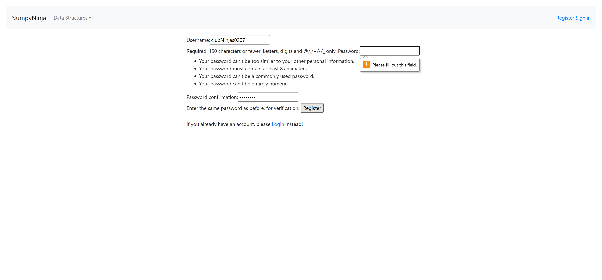PassVerify pop-up message when password and password confirmation fields are left blankPassVerify pop-up message when password and password confirmation fields are left blankGiven User is in the ds-algo launch pageWhen User clicks the Get Started buttonGiven User navigates to register page after clicking register linkWhen User enters data from excel sheet 'Register' and 13 for blank feildsThen User gets error message in register pagePassVerify pop-up message when password and password confirmation fields are left blankGiven User is in the ds-algo launch pageWhen User clicks the Get Started buttonGiven User navigates to register page after clicking register linkWhen User enters data from excel sheet 'Register' and 14 for blank feildsThen User gets error message in register page
PassVerify that the user is able to enter valid passwords in the fieldPassVerify that the user is able to enter valid passwords in the fieldGiven User is in the ds-algo launch pageWhen User clicks the Get Started buttonGiven User navigates to register page after clicking register linkWhen User enters data from excel sheet 'Register' and 8 for the password fieldsThen User should be able to enter password and click Register buttonPassVerify that the user is able to enter valid passwords in the fieldGiven User is in the ds-algo launch pageWhen User clicks the Get Started buttonGiven User navigates to register page after clicking register linkWhen User enters data from excel sheet 'Register' and 9 for the password fieldsThen User should be able to enter password and click Register buttonFailVerify that the user gets error upon entering invalid passwordsPassVerify that the user gets error upon entering invalid passwordsGiven User is in the ds-algo launch pageWhen User clicks the Get Started buttonGiven User navigates to register page after clicking register linkWhen User enters invalid data from excel sheet 'Register' and 10 for the password fieldThen User gets an error message for password in the Register pagePassVerify that the user gets error upon entering invalid passwordsGiven User is in the ds-algo launch pageWhen User clicks the Get Started buttonGiven User navigates to register page after clicking register linkWhen User enters invalid data from excel sheet 'Register' and 11 for the password fieldThen User gets an error message for password in the Register pageFailVerify that the user gets error upon entering invalid passwordsGiven User is in the ds-algo launch pageWhen User clicks the Get Started buttonGiven User navigates to register page after clicking register linkWhen User enters invalid data from excel sheet 'Register' and 12 for the password fieldThen User gets an error message for password in the Register pageHooks.Hooks.teardown(io.cucumber.java.Scenario)screenshot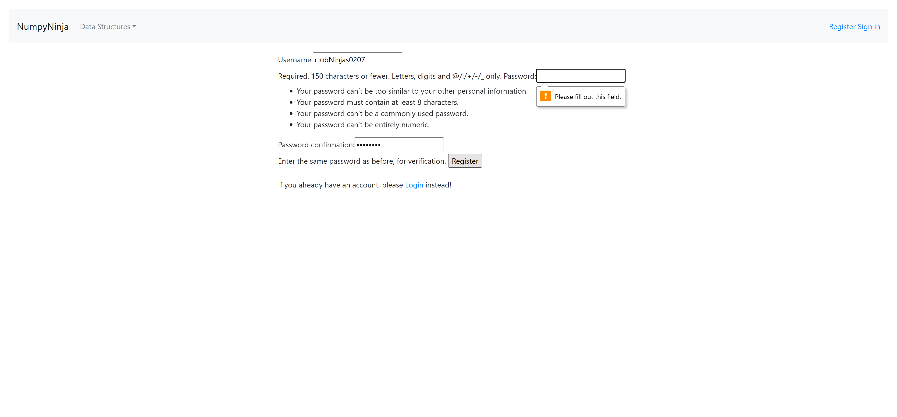PassVerify pop-up message when password and password confirmation fields are left blankPassVerify pop-up message when password and password confirmation fields are left blankGiven User is in the ds-algo launch pageWhen User clicks the Get Started buttonGiven User navigates to register page after clicking register linkWhen User enters data from excel sheet 'Register' and 13 for blank feildsThen User gets error message in register pagePassVerify pop-up message when password and password confirmation fields are left blankGiven User is in the ds-algo launch pageWhen User clicks the Get Started buttonGiven User navigates to register page after clicking register linkWhen User enters data from excel sheet 'Register' and 14 for blank feildsThen User gets error message in register page -
Tree Datastructure
11:56:13 AM / 00:11:18:498 Fail
Tree Datastructure
05.08.2025 11:56:13 AM 05.08.2025 12:07:32 PM 00:11:18:498 · #test-id=1,153PassVerify that user is able to navigate to "Tree" data structure pageGiven The user is on the Home page and clicks Sign InWhen The user gets data from excel sheet "Valid_Login" and 1 for the login pageThen The user is in the Home page after Sign InGiven The user is in the Home page after Sign inWhen The user clicks the Getting Started button in TreePanelThen The user should be directed to "Tree" in Tree Data StructurePassVerify that user is able to navigate to "Tree" data structure pageGiven The user is on the Home page and clicks Sign InWhen The user gets data from excel sheet "Valid_Login" and 1 for the login pageThen The user is in the Home page after Sign InGiven The user is in the Home page after Sign inWhen The user select Tree item from the drop down menuThen The user should be directed to "Tree" in Tree Data StructurePassVerify that user is able to navigate to "Overview of Trees" pageGiven The user is on the Home page and clicks Sign InWhen The user gets data from excel sheet "Valid_Login" and 1 for the login pageThen The user is in the Home page after Sign InGiven The user on the "Tree" page in Tree Data StructureWhen The user clicks "Overview of Trees" link in Tree Data StructureThen The user should be directed to "Overview of Trees" in Tree Data StructurePassVerify that user is able to navigate to "Try Editor" page for "Overview of Trees" pageGiven The user is on the Home page and clicks Sign InWhen The user gets data from excel sheet "Valid_Login" and 1 for the login pageThen The user is in the Home page after Sign InGiven The user on the "Overview of Trees" page in Tree Data StructureWhen The user clicks "Try Here" button in "Overview of Trees" page in Tree Data StructureThen The user should be directed to Try Editor page to test "Overview of Trees"FailVerify that user receives error when click on Run button without entering code for "Overview of Trees" pageFailVerify that user receives error when click on Run button without entering code for "Overview of Trees" pageGiven The user is on the Home page and clicks Sign InWhen The user gets data from excel sheet "Valid_Login" and 1 for the login pageThen The user is in the Home page after Sign InGiven The user is on the Try Editor page of "Overview of Trees" page in Tree Data StructureWhen The user clicks the Run button in Tree Data Structure tryEditor pageThen The user should able to see a error message from "Tree" and 4 on Tree Data Structure tryEditor alertHooks.Hooks.teardown(io.cucumber.java.Scenario)screenshot PassVerify that user receives error for invalid python code in Time Complexity Try Editor for "Overview of Trees" pagePassVerify that user receives error for invalid python code in Time Complexity Try Editor for "Overview of Trees" pageGiven The user is on the Home page and clicks Sign InWhen The user gets data from excel sheet "Valid_Login" and 1 for the login pageThen The user is in the Home page after Sign InGiven The user is on the Try Editor page of "Overview of Trees" page in Tree Data StructureWhen The user enters "Tree" and 3 clicks the Run Button in Tree Data Structure tryEditor pageThen The user should able to see a error message from "Tree" and 3 on Tree Data Structure tryEditor alertPassVerify that user is able to see output for valid python code in Time Complexity Try Editor for "Overview of Trees" pagePassVerify that user is able to see output for valid python code in Time Complexity Try Editor for "Overview of Trees" pageGiven The user is on the Home page and clicks Sign InWhen The user gets data from excel sheet "Valid_Login" and 1 for the login pageThen The user is in the Home page after Sign InGiven The user is on the Try Editor page of "Overview of Trees" page in Tree Data StructureWhen The user enters "Tree" and 1 clicks the Run Button in Tree Data Structure tryEditor pageThen The user should able to see output in the console from "Tree" and 1 on Tree Data Structure tryEditor pagePassVerify that user is able to see output for valid python code in Time Complexity Try Editor for "Overview of Trees" pageGiven The user is on the Home page and clicks Sign InWhen The user gets data from excel sheet "Valid_Login" and 1 for the login pageThen The user is in the Home page after Sign InGiven The user is on the Try Editor page of "Overview of Trees" page in Tree Data StructureWhen The user enters "Tree" and 2 clicks the Run Button in Tree Data Structure tryEditor pageThen The user should able to see output in the console from "Tree" and 2 on Tree Data Structure tryEditor pagePassVerify that user is able to navigate to "Terminologies" pageGiven The user is on the Home page and clicks Sign InWhen The user gets data from excel sheet "Valid_Login" and 1 for the login pageThen The user is in the Home page after Sign InGiven The user on the "Tree" page in Tree Data StructureWhen The user clicks "Terminologies" link in Tree Data StructureThen The user should be directed to "Terminologies" in Tree Data StructurePassVerify that user is able to navigate to "Try Editor" page for "Terminologies" pageGiven The user is on the Home page and clicks Sign InWhen The user gets data from excel sheet "Valid_Login" and 1 for the login pageThen The user is in the Home page after Sign InGiven The user on the "Terminologies" page in Tree Data StructureWhen The user clicks "Try Here" button in "Terminologies" page in Tree Data StructureThen The user should be directed to Try Editor page to test "Terminologies"FailVerify that user receives error when click on Run button without entering code for "Terminologies" pageFailVerify that user receives error when click on Run button without entering code for "Terminologies" pageGiven The user is on the Home page and clicks Sign InWhen The user gets data from excel sheet "Valid_Login" and 1 for the login pageThen The user is in the Home page after Sign InGiven The user is on the Try Editor page of "Terminologies" page in Tree Data StructureWhen The user clicks the Run button in Tree Data Structure tryEditor pageThen The user should able to see a error message from "Tree" and 4 on Tree Data Structure tryEditor alertHooks.Hooks.teardown(io.cucumber.java.Scenario)screenshot
PassVerify that user receives error for invalid python code in Time Complexity Try Editor for "Overview of Trees" pagePassVerify that user receives error for invalid python code in Time Complexity Try Editor for "Overview of Trees" pageGiven The user is on the Home page and clicks Sign InWhen The user gets data from excel sheet "Valid_Login" and 1 for the login pageThen The user is in the Home page after Sign InGiven The user is on the Try Editor page of "Overview of Trees" page in Tree Data StructureWhen The user enters "Tree" and 3 clicks the Run Button in Tree Data Structure tryEditor pageThen The user should able to see a error message from "Tree" and 3 on Tree Data Structure tryEditor alertPassVerify that user is able to see output for valid python code in Time Complexity Try Editor for "Overview of Trees" pagePassVerify that user is able to see output for valid python code in Time Complexity Try Editor for "Overview of Trees" pageGiven The user is on the Home page and clicks Sign InWhen The user gets data from excel sheet "Valid_Login" and 1 for the login pageThen The user is in the Home page after Sign InGiven The user is on the Try Editor page of "Overview of Trees" page in Tree Data StructureWhen The user enters "Tree" and 1 clicks the Run Button in Tree Data Structure tryEditor pageThen The user should able to see output in the console from "Tree" and 1 on Tree Data Structure tryEditor pagePassVerify that user is able to see output for valid python code in Time Complexity Try Editor for "Overview of Trees" pageGiven The user is on the Home page and clicks Sign InWhen The user gets data from excel sheet "Valid_Login" and 1 for the login pageThen The user is in the Home page after Sign InGiven The user is on the Try Editor page of "Overview of Trees" page in Tree Data StructureWhen The user enters "Tree" and 2 clicks the Run Button in Tree Data Structure tryEditor pageThen The user should able to see output in the console from "Tree" and 2 on Tree Data Structure tryEditor pagePassVerify that user is able to navigate to "Terminologies" pageGiven The user is on the Home page and clicks Sign InWhen The user gets data from excel sheet "Valid_Login" and 1 for the login pageThen The user is in the Home page after Sign InGiven The user on the "Tree" page in Tree Data StructureWhen The user clicks "Terminologies" link in Tree Data StructureThen The user should be directed to "Terminologies" in Tree Data StructurePassVerify that user is able to navigate to "Try Editor" page for "Terminologies" pageGiven The user is on the Home page and clicks Sign InWhen The user gets data from excel sheet "Valid_Login" and 1 for the login pageThen The user is in the Home page after Sign InGiven The user on the "Terminologies" page in Tree Data StructureWhen The user clicks "Try Here" button in "Terminologies" page in Tree Data StructureThen The user should be directed to Try Editor page to test "Terminologies"FailVerify that user receives error when click on Run button without entering code for "Terminologies" pageFailVerify that user receives error when click on Run button without entering code for "Terminologies" pageGiven The user is on the Home page and clicks Sign InWhen The user gets data from excel sheet "Valid_Login" and 1 for the login pageThen The user is in the Home page after Sign InGiven The user is on the Try Editor page of "Terminologies" page in Tree Data StructureWhen The user clicks the Run button in Tree Data Structure tryEditor pageThen The user should able to see a error message from "Tree" and 4 on Tree Data Structure tryEditor alertHooks.Hooks.teardown(io.cucumber.java.Scenario)screenshot PassVerify that user receives error for invalid python code in Time Complexity Try Editor for "Terminologies" pagePassVerify that user receives error for invalid python code in Time Complexity Try Editor for "Terminologies" pageGiven The user is on the Home page and clicks Sign InWhen The user gets data from excel sheet "Valid_Login" and 1 for the login pageThen The user is in the Home page after Sign InGiven The user is on the Try Editor page of "Terminologies" page in Tree Data StructureWhen The user enters "Tree" and 3 clicks the Run Button in Tree Data Structure tryEditor pageThen The user should able to see a error message from "Tree" and 3 on Tree Data Structure tryEditor alertPassVerify that user is able to see output for valid python code in Time Complexity Try Editor for "Terminologies" pagePassVerify that user is able to see output for valid python code in Time Complexity Try Editor for "Terminologies" pageGiven The user is on the Home page and clicks Sign InWhen The user gets data from excel sheet "Valid_Login" and 1 for the login pageThen The user is in the Home page after Sign InGiven The user is on the Try Editor page of "Terminologies" page in Tree Data StructureWhen The user enters "Tree" and 1 clicks the Run Button in Tree Data Structure tryEditor pageThen The user should able to see output in the console from "Tree" and 1 on Tree Data Structure tryEditor pagePassVerify that user is able to see output for valid python code in Time Complexity Try Editor for "Terminologies" pageGiven The user is on the Home page and clicks Sign InWhen The user gets data from excel sheet "Valid_Login" and 1 for the login pageThen The user is in the Home page after Sign InGiven The user is on the Try Editor page of "Terminologies" page in Tree Data StructureWhen The user enters "Tree" and 2 clicks the Run Button in Tree Data Structure tryEditor pageThen The user should able to see output in the console from "Tree" and 2 on Tree Data Structure tryEditor pagePassVerify that user is able to navigate to "Types of Trees" pageGiven The user is on the Home page and clicks Sign InWhen The user gets data from excel sheet "Valid_Login" and 1 for the login pageThen The user is in the Home page after Sign InGiven The user on the "Tree" page in Tree Data StructureWhen The user clicks "Types of Trees" link in Tree Data StructureThen The user should be directed to "Types of Trees" in Tree Data StructurePassVerify that user is able to navigate to "Try Editor" page for "Types of Trees" pageGiven The user is on the Home page and clicks Sign InWhen The user gets data from excel sheet "Valid_Login" and 1 for the login pageThen The user is in the Home page after Sign InGiven The user on the "Types of Trees" page in Tree Data StructureWhen The user clicks "Try Here" button in "Types of Trees" page in Tree Data StructureThen The user should be directed to Try Editor page to test "Types of Trees"FailVerify that user receives error when click on Run button without entering code for "Types of Trees" pageFailVerify that user receives error when click on Run button without entering code for "Types of Trees" pageGiven The user is on the Home page and clicks Sign InWhen The user gets data from excel sheet "Valid_Login" and 1 for the login pageThen The user is in the Home page after Sign InGiven The user is on the Try Editor page of "Types of Trees" page in Tree Data StructureWhen The user clicks the Run button in Tree Data Structure tryEditor pageThen The user should able to see a error message from "Tree" and 4 on Tree Data Structure tryEditor alertHooks.Hooks.teardown(io.cucumber.java.Scenario)screenshot
PassVerify that user receives error for invalid python code in Time Complexity Try Editor for "Terminologies" pagePassVerify that user receives error for invalid python code in Time Complexity Try Editor for "Terminologies" pageGiven The user is on the Home page and clicks Sign InWhen The user gets data from excel sheet "Valid_Login" and 1 for the login pageThen The user is in the Home page after Sign InGiven The user is on the Try Editor page of "Terminologies" page in Tree Data StructureWhen The user enters "Tree" and 3 clicks the Run Button in Tree Data Structure tryEditor pageThen The user should able to see a error message from "Tree" and 3 on Tree Data Structure tryEditor alertPassVerify that user is able to see output for valid python code in Time Complexity Try Editor for "Terminologies" pagePassVerify that user is able to see output for valid python code in Time Complexity Try Editor for "Terminologies" pageGiven The user is on the Home page and clicks Sign InWhen The user gets data from excel sheet "Valid_Login" and 1 for the login pageThen The user is in the Home page after Sign InGiven The user is on the Try Editor page of "Terminologies" page in Tree Data StructureWhen The user enters "Tree" and 1 clicks the Run Button in Tree Data Structure tryEditor pageThen The user should able to see output in the console from "Tree" and 1 on Tree Data Structure tryEditor pagePassVerify that user is able to see output for valid python code in Time Complexity Try Editor for "Terminologies" pageGiven The user is on the Home page and clicks Sign InWhen The user gets data from excel sheet "Valid_Login" and 1 for the login pageThen The user is in the Home page after Sign InGiven The user is on the Try Editor page of "Terminologies" page in Tree Data StructureWhen The user enters "Tree" and 2 clicks the Run Button in Tree Data Structure tryEditor pageThen The user should able to see output in the console from "Tree" and 2 on Tree Data Structure tryEditor pagePassVerify that user is able to navigate to "Types of Trees" pageGiven The user is on the Home page and clicks Sign InWhen The user gets data from excel sheet "Valid_Login" and 1 for the login pageThen The user is in the Home page after Sign InGiven The user on the "Tree" page in Tree Data StructureWhen The user clicks "Types of Trees" link in Tree Data StructureThen The user should be directed to "Types of Trees" in Tree Data StructurePassVerify that user is able to navigate to "Try Editor" page for "Types of Trees" pageGiven The user is on the Home page and clicks Sign InWhen The user gets data from excel sheet "Valid_Login" and 1 for the login pageThen The user is in the Home page after Sign InGiven The user on the "Types of Trees" page in Tree Data StructureWhen The user clicks "Try Here" button in "Types of Trees" page in Tree Data StructureThen The user should be directed to Try Editor page to test "Types of Trees"FailVerify that user receives error when click on Run button without entering code for "Types of Trees" pageFailVerify that user receives error when click on Run button without entering code for "Types of Trees" pageGiven The user is on the Home page and clicks Sign InWhen The user gets data from excel sheet "Valid_Login" and 1 for the login pageThen The user is in the Home page after Sign InGiven The user is on the Try Editor page of "Types of Trees" page in Tree Data StructureWhen The user clicks the Run button in Tree Data Structure tryEditor pageThen The user should able to see a error message from "Tree" and 4 on Tree Data Structure tryEditor alertHooks.Hooks.teardown(io.cucumber.java.Scenario)screenshot PassVerify that user receives error for invalid python code in Time Complexity Try Editor for "Types of Trees" pagePassVerify that user receives error for invalid python code in Time Complexity Try Editor for "Types of Trees" pageGiven The user is on the Home page and clicks Sign InWhen The user gets data from excel sheet "Valid_Login" and 1 for the login pageThen The user is in the Home page after Sign InGiven The user is on the Try Editor page of "Types of Trees" page in Tree Data StructureWhen The user enters "Tree" and 3 clicks the Run Button in Tree Data Structure tryEditor pageThen The user should able to see a error message from "Tree" and 3 on Tree Data Structure tryEditor alertPassVerify that user is able to see output for valid python code in Time Complexity Try Editor for "Types of Trees" pagePassVerify that user is able to see output for valid python code in Time Complexity Try Editor for "Types of Trees" pageGiven The user is on the Home page and clicks Sign InWhen The user gets data from excel sheet "Valid_Login" and 1 for the login pageThen The user is in the Home page after Sign InGiven The user is on the Try Editor page of "Types of Trees" page in Tree Data StructureWhen The user enters "Tree" and 1 clicks the Run Button in Tree Data Structure tryEditor pageThen The user should able to see output in the console from "Tree" and 1 on Tree Data Structure tryEditor pagePassVerify that user is able to see output for valid python code in Time Complexity Try Editor for "Types of Trees" pageGiven The user is on the Home page and clicks Sign InWhen The user gets data from excel sheet "Valid_Login" and 1 for the login pageThen The user is in the Home page after Sign InGiven The user is on the Try Editor page of "Types of Trees" page in Tree Data StructureWhen The user enters "Tree" and 2 clicks the Run Button in Tree Data Structure tryEditor pageThen The user should able to see output in the console from "Tree" and 2 on Tree Data Structure tryEditor pagePassVerify that user is able to navigate to "Tree Traversals" pageGiven The user is on the Home page and clicks Sign InWhen The user gets data from excel sheet "Valid_Login" and 1 for the login pageThen The user is in the Home page after Sign InGiven The user on the "Tree" page in Tree Data StructureWhen The user clicks "Tree Traversals" link in Tree Data StructureThen The user should be directed to "Tree Traversals" in Tree Data StructurePassVerify that user is able to navigate to "Try Editor" page for "Tree Traversals" pageGiven The user is on the Home page and clicks Sign InWhen The user gets data from excel sheet "Valid_Login" and 1 for the login pageThen The user is in the Home page after Sign InGiven The user on the "Tree Traversals" page in Tree Data StructureWhen The user clicks "Try Here" button in "Tree Traversals" page in Tree Data StructureThen The user should be directed to Try Editor page to test "Tree Traversals"FailVerify that user receives error when click on Run button without entering code for "Tree Traversals" pageFailVerify that user receives error when click on Run button without entering code for "Tree Traversals" pageGiven The user is on the Home page and clicks Sign InWhen The user gets data from excel sheet "Valid_Login" and 1 for the login pageThen The user is in the Home page after Sign InGiven The user is on the Try Editor page of "Tree Traversals" page in Tree Data StructureWhen The user clicks the Run button in Tree Data Structure tryEditor pageThen The user should able to see a error message from "Tree" and 4 on Tree Data Structure tryEditor alertHooks.Hooks.teardown(io.cucumber.java.Scenario)screenshot
PassVerify that user receives error for invalid python code in Time Complexity Try Editor for "Types of Trees" pagePassVerify that user receives error for invalid python code in Time Complexity Try Editor for "Types of Trees" pageGiven The user is on the Home page and clicks Sign InWhen The user gets data from excel sheet "Valid_Login" and 1 for the login pageThen The user is in the Home page after Sign InGiven The user is on the Try Editor page of "Types of Trees" page in Tree Data StructureWhen The user enters "Tree" and 3 clicks the Run Button in Tree Data Structure tryEditor pageThen The user should able to see a error message from "Tree" and 3 on Tree Data Structure tryEditor alertPassVerify that user is able to see output for valid python code in Time Complexity Try Editor for "Types of Trees" pagePassVerify that user is able to see output for valid python code in Time Complexity Try Editor for "Types of Trees" pageGiven The user is on the Home page and clicks Sign InWhen The user gets data from excel sheet "Valid_Login" and 1 for the login pageThen The user is in the Home page after Sign InGiven The user is on the Try Editor page of "Types of Trees" page in Tree Data StructureWhen The user enters "Tree" and 1 clicks the Run Button in Tree Data Structure tryEditor pageThen The user should able to see output in the console from "Tree" and 1 on Tree Data Structure tryEditor pagePassVerify that user is able to see output for valid python code in Time Complexity Try Editor for "Types of Trees" pageGiven The user is on the Home page and clicks Sign InWhen The user gets data from excel sheet "Valid_Login" and 1 for the login pageThen The user is in the Home page after Sign InGiven The user is on the Try Editor page of "Types of Trees" page in Tree Data StructureWhen The user enters "Tree" and 2 clicks the Run Button in Tree Data Structure tryEditor pageThen The user should able to see output in the console from "Tree" and 2 on Tree Data Structure tryEditor pagePassVerify that user is able to navigate to "Tree Traversals" pageGiven The user is on the Home page and clicks Sign InWhen The user gets data from excel sheet "Valid_Login" and 1 for the login pageThen The user is in the Home page after Sign InGiven The user on the "Tree" page in Tree Data StructureWhen The user clicks "Tree Traversals" link in Tree Data StructureThen The user should be directed to "Tree Traversals" in Tree Data StructurePassVerify that user is able to navigate to "Try Editor" page for "Tree Traversals" pageGiven The user is on the Home page and clicks Sign InWhen The user gets data from excel sheet "Valid_Login" and 1 for the login pageThen The user is in the Home page after Sign InGiven The user on the "Tree Traversals" page in Tree Data StructureWhen The user clicks "Try Here" button in "Tree Traversals" page in Tree Data StructureThen The user should be directed to Try Editor page to test "Tree Traversals"FailVerify that user receives error when click on Run button without entering code for "Tree Traversals" pageFailVerify that user receives error when click on Run button without entering code for "Tree Traversals" pageGiven The user is on the Home page and clicks Sign InWhen The user gets data from excel sheet "Valid_Login" and 1 for the login pageThen The user is in the Home page after Sign InGiven The user is on the Try Editor page of "Tree Traversals" page in Tree Data StructureWhen The user clicks the Run button in Tree Data Structure tryEditor pageThen The user should able to see a error message from "Tree" and 4 on Tree Data Structure tryEditor alertHooks.Hooks.teardown(io.cucumber.java.Scenario)screenshot PassVerify that user receives error for invalid python code in Time Complexity Try Editor for "Tree Traversalss" pagePassVerify that user receives error for invalid python code in Time Complexity Try Editor for "Tree Traversalss" pageGiven The user is on the Home page and clicks Sign InWhen The user gets data from excel sheet "Valid_Login" and 1 for the login pageThen The user is in the Home page after Sign InGiven The user is on the Try Editor page of "Tree Traversals" page in Tree Data StructureWhen The user enters "Tree" and 3 clicks the Run Button in Tree Data Structure tryEditor pageThen The user should able to see a error message from "Tree" and 3 on Tree Data Structure tryEditor alertPassVerify that user is able to see output for valid python code in Time Complexity Try Editor for "Tree Traversals" pagePassVerify that user is able to see output for valid python code in Time Complexity Try Editor for "Tree Traversals" pageGiven The user is on the Home page and clicks Sign InWhen The user gets data from excel sheet "Valid_Login" and 1 for the login pageThen The user is in the Home page after Sign InGiven The user is on the Try Editor page of "Tree Traversals" page in Tree Data StructureWhen The user enters "Tree" and 1 clicks the Run Button in Tree Data Structure tryEditor pageThen The user should able to see output in the console from "Tree" and 1 on Tree Data Structure tryEditor pagePassVerify that user is able to see output for valid python code in Time Complexity Try Editor for "Tree Traversals" pageGiven The user is on the Home page and clicks Sign InWhen The user gets data from excel sheet "Valid_Login" and 1 for the login pageThen The user is in the Home page after Sign InGiven The user is on the Try Editor page of "Tree Traversals" page in Tree Data StructureWhen The user enters "Tree" and 2 clicks the Run Button in Tree Data Structure tryEditor pageThen The user should able to see output in the console from "Tree" and 2 on Tree Data Structure tryEditor pagePassVerify that user is able to navigate to "Traversals-Illustration" pageGiven The user is on the Home page and clicks Sign InWhen The user gets data from excel sheet "Valid_Login" and 1 for the login pageThen The user is in the Home page after Sign InGiven The user on the "Tree" page in Tree Data StructureWhen The user clicks "Traversals-Illustration" link in Tree Data StructureThen The user should be directed to "Traversals-Illustration" in Tree Data StructurePassVerify that user is able to navigate to "Try Editor" page for "Traversals-Illustration" pageGiven The user is on the Home page and clicks Sign InWhen The user gets data from excel sheet "Valid_Login" and 1 for the login pageThen The user is in the Home page after Sign InGiven The user on the "Traversals-Illustration" page in Tree Data StructureWhen The user clicks "Try Here" button in "Traversals-Illustration" page in Tree Data StructureThen The user should be directed to Try Editor page to test "Traversals-Illustration"FailVerify that user receives error when click on Run button without entering code for "Traversals-Illustration" pageFailVerify that user receives error when click on Run button without entering code for "Traversals-Illustration" pageGiven The user is on the Home page and clicks Sign InWhen The user gets data from excel sheet "Valid_Login" and 1 for the login pageThen The user is in the Home page after Sign InGiven The user is on the Try Editor page of "Traversals-Illustration" page in Tree Data StructureWhen The user clicks the Run button in Tree Data Structure tryEditor pageThen The user should able to see a error message from "Tree" and 4 on Tree Data Structure tryEditor alertHooks.Hooks.teardown(io.cucumber.java.Scenario)screenshot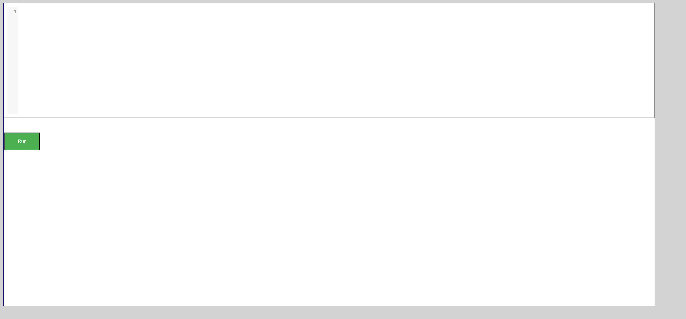PassVerify that user receives error for invalid python code in Time Complexity Try Editor for "Traversals-Illustration" pagePassVerify that user receives error for invalid python code in Time Complexity Try Editor for "Traversals-Illustration" pageGiven The user is on the Home page and clicks Sign InWhen The user gets data from excel sheet "Valid_Login" and 1 for the login pageThen The user is in the Home page after Sign InGiven The user is on the Try Editor page of "Traversals-Illustration" page in Tree Data StructureWhen The user enters "Tree" and 3 clicks the Run Button in Tree Data Structure tryEditor pageThen The user should able to see a error message from "Tree" and 3 on Tree Data Structure tryEditor alertPassVerify that user is able to see output for valid python code in Time Complexity Try Editor for "Traversals-Illustration" pagePassVerify that user is able to see output for valid python code in Time Complexity Try Editor for "Traversals-Illustration" pageGiven The user is on the Home page and clicks Sign InWhen The user gets data from excel sheet "Valid_Login" and 1 for the login pageThen The user is in the Home page after Sign InGiven The user is on the Try Editor page of "Traversals-Illustration" page in Tree Data StructureWhen The user enters "Tree" and 1 clicks the Run Button in Tree Data Structure tryEditor pageThen The user should able to see output in the console from "Tree" and 1 on Tree Data Structure tryEditor pagePassVerify that user is able to see output for valid python code in Time Complexity Try Editor for "Traversals-Illustration" pageGiven The user is on the Home page and clicks Sign InWhen The user gets data from excel sheet "Valid_Login" and 1 for the login pageThen The user is in the Home page after Sign InGiven The user is on the Try Editor page of "Traversals-Illustration" page in Tree Data StructureWhen The user enters "Tree" and 2 clicks the Run Button in Tree Data Structure tryEditor pageThen The user should able to see output in the console from "Tree" and 2 on Tree Data Structure tryEditor pagePassVerify that user is able to navigate to "Binary Trees" pageGiven The user is on the Home page and clicks Sign InWhen The user gets data from excel sheet "Valid_Login" and 1 for the login pageThen The user is in the Home page after Sign InGiven The user on the "Tree" page in Tree Data StructureWhen The user clicks "Binary Trees" link in Tree Data StructureThen The user should be directed to "Binary Trees" in Tree Data StructurePassVerify that user is able to navigate to "Try Editor" page for "Binary Trees" pageGiven The user is on the Home page and clicks Sign InWhen The user gets data from excel sheet "Valid_Login" and 1 for the login pageThen The user is in the Home page after Sign InGiven The user on the "Binary Trees" page in Tree Data StructureWhen The user clicks "Try Here" button in "Binary Trees" page in Tree Data StructureThen The user should be directed to Try Editor page to test "Binary Trees"FailVerify that user receives error when click on Run button without entering code for "Binary Trees" pageFailVerify that user receives error when click on Run button without entering code for "Binary Trees" pageGiven The user is on the Home page and clicks Sign InWhen The user gets data from excel sheet "Valid_Login" and 1 for the login pageThen The user is in the Home page after Sign InGiven The user is on the Try Editor page of "Binary Trees" page in Tree Data StructureWhen The user clicks the Run button in Tree Data Structure tryEditor pageThen The user should able to see a error message from "Tree" and 4 on Tree Data Structure tryEditor alertHooks.Hooks.teardown(io.cucumber.java.Scenario)screenshot
PassVerify that user receives error for invalid python code in Time Complexity Try Editor for "Tree Traversalss" pagePassVerify that user receives error for invalid python code in Time Complexity Try Editor for "Tree Traversalss" pageGiven The user is on the Home page and clicks Sign InWhen The user gets data from excel sheet "Valid_Login" and 1 for the login pageThen The user is in the Home page after Sign InGiven The user is on the Try Editor page of "Tree Traversals" page in Tree Data StructureWhen The user enters "Tree" and 3 clicks the Run Button in Tree Data Structure tryEditor pageThen The user should able to see a error message from "Tree" and 3 on Tree Data Structure tryEditor alertPassVerify that user is able to see output for valid python code in Time Complexity Try Editor for "Tree Traversals" pagePassVerify that user is able to see output for valid python code in Time Complexity Try Editor for "Tree Traversals" pageGiven The user is on the Home page and clicks Sign InWhen The user gets data from excel sheet "Valid_Login" and 1 for the login pageThen The user is in the Home page after Sign InGiven The user is on the Try Editor page of "Tree Traversals" page in Tree Data StructureWhen The user enters "Tree" and 1 clicks the Run Button in Tree Data Structure tryEditor pageThen The user should able to see output in the console from "Tree" and 1 on Tree Data Structure tryEditor pagePassVerify that user is able to see output for valid python code in Time Complexity Try Editor for "Tree Traversals" pageGiven The user is on the Home page and clicks Sign InWhen The user gets data from excel sheet "Valid_Login" and 1 for the login pageThen The user is in the Home page after Sign InGiven The user is on the Try Editor page of "Tree Traversals" page in Tree Data StructureWhen The user enters "Tree" and 2 clicks the Run Button in Tree Data Structure tryEditor pageThen The user should able to see output in the console from "Tree" and 2 on Tree Data Structure tryEditor pagePassVerify that user is able to navigate to "Traversals-Illustration" pageGiven The user is on the Home page and clicks Sign InWhen The user gets data from excel sheet "Valid_Login" and 1 for the login pageThen The user is in the Home page after Sign InGiven The user on the "Tree" page in Tree Data StructureWhen The user clicks "Traversals-Illustration" link in Tree Data StructureThen The user should be directed to "Traversals-Illustration" in Tree Data StructurePassVerify that user is able to navigate to "Try Editor" page for "Traversals-Illustration" pageGiven The user is on the Home page and clicks Sign InWhen The user gets data from excel sheet "Valid_Login" and 1 for the login pageThen The user is in the Home page after Sign InGiven The user on the "Traversals-Illustration" page in Tree Data StructureWhen The user clicks "Try Here" button in "Traversals-Illustration" page in Tree Data StructureThen The user should be directed to Try Editor page to test "Traversals-Illustration"FailVerify that user receives error when click on Run button without entering code for "Traversals-Illustration" pageFailVerify that user receives error when click on Run button without entering code for "Traversals-Illustration" pageGiven The user is on the Home page and clicks Sign InWhen The user gets data from excel sheet "Valid_Login" and 1 for the login pageThen The user is in the Home page after Sign InGiven The user is on the Try Editor page of "Traversals-Illustration" page in Tree Data StructureWhen The user clicks the Run button in Tree Data Structure tryEditor pageThen The user should able to see a error message from "Tree" and 4 on Tree Data Structure tryEditor alertHooks.Hooks.teardown(io.cucumber.java.Scenario)screenshot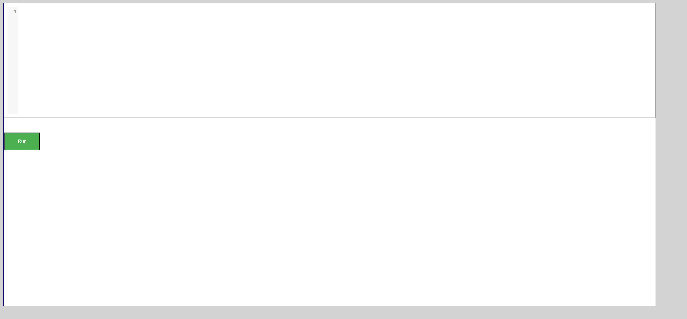PassVerify that user receives error for invalid python code in Time Complexity Try Editor for "Traversals-Illustration" pagePassVerify that user receives error for invalid python code in Time Complexity Try Editor for "Traversals-Illustration" pageGiven The user is on the Home page and clicks Sign InWhen The user gets data from excel sheet "Valid_Login" and 1 for the login pageThen The user is in the Home page after Sign InGiven The user is on the Try Editor page of "Traversals-Illustration" page in Tree Data StructureWhen The user enters "Tree" and 3 clicks the Run Button in Tree Data Structure tryEditor pageThen The user should able to see a error message from "Tree" and 3 on Tree Data Structure tryEditor alertPassVerify that user is able to see output for valid python code in Time Complexity Try Editor for "Traversals-Illustration" pagePassVerify that user is able to see output for valid python code in Time Complexity Try Editor for "Traversals-Illustration" pageGiven The user is on the Home page and clicks Sign InWhen The user gets data from excel sheet "Valid_Login" and 1 for the login pageThen The user is in the Home page after Sign InGiven The user is on the Try Editor page of "Traversals-Illustration" page in Tree Data StructureWhen The user enters "Tree" and 1 clicks the Run Button in Tree Data Structure tryEditor pageThen The user should able to see output in the console from "Tree" and 1 on Tree Data Structure tryEditor pagePassVerify that user is able to see output for valid python code in Time Complexity Try Editor for "Traversals-Illustration" pageGiven The user is on the Home page and clicks Sign InWhen The user gets data from excel sheet "Valid_Login" and 1 for the login pageThen The user is in the Home page after Sign InGiven The user is on the Try Editor page of "Traversals-Illustration" page in Tree Data StructureWhen The user enters "Tree" and 2 clicks the Run Button in Tree Data Structure tryEditor pageThen The user should able to see output in the console from "Tree" and 2 on Tree Data Structure tryEditor pagePassVerify that user is able to navigate to "Binary Trees" pageGiven The user is on the Home page and clicks Sign InWhen The user gets data from excel sheet "Valid_Login" and 1 for the login pageThen The user is in the Home page after Sign InGiven The user on the "Tree" page in Tree Data StructureWhen The user clicks "Binary Trees" link in Tree Data StructureThen The user should be directed to "Binary Trees" in Tree Data StructurePassVerify that user is able to navigate to "Try Editor" page for "Binary Trees" pageGiven The user is on the Home page and clicks Sign InWhen The user gets data from excel sheet "Valid_Login" and 1 for the login pageThen The user is in the Home page after Sign InGiven The user on the "Binary Trees" page in Tree Data StructureWhen The user clicks "Try Here" button in "Binary Trees" page in Tree Data StructureThen The user should be directed to Try Editor page to test "Binary Trees"FailVerify that user receives error when click on Run button without entering code for "Binary Trees" pageFailVerify that user receives error when click on Run button without entering code for "Binary Trees" pageGiven The user is on the Home page and clicks Sign InWhen The user gets data from excel sheet "Valid_Login" and 1 for the login pageThen The user is in the Home page after Sign InGiven The user is on the Try Editor page of "Binary Trees" page in Tree Data StructureWhen The user clicks the Run button in Tree Data Structure tryEditor pageThen The user should able to see a error message from "Tree" and 4 on Tree Data Structure tryEditor alertHooks.Hooks.teardown(io.cucumber.java.Scenario)screenshot PassVerify that user receives error for invalid python code in Time Complexity Try Editor for "Binary Trees" pagePassVerify that user receives error for invalid python code in Time Complexity Try Editor for "Binary Trees" pageGiven The user is on the Home page and clicks Sign InWhen The user gets data from excel sheet "Valid_Login" and 1 for the login pageThen The user is in the Home page after Sign InGiven The user is on the Try Editor page of "Binary Trees" page in Tree Data StructureWhen The user enters "Tree" and 3 clicks the Run Button in Tree Data Structure tryEditor pageThen The user should able to see a error message from "Tree" and 3 on Tree Data Structure tryEditor alertPassVerify that user is able to see output for valid python code in Time Complexity Try Editor for "Binary Trees" pagePassVerify that user is able to see output for valid python code in Time Complexity Try Editor for "Binary Trees" pageGiven The user is on the Home page and clicks Sign InWhen The user gets data from excel sheet "Valid_Login" and 1 for the login pageThen The user is in the Home page after Sign InGiven The user is on the Try Editor page of "Binary Trees" page in Tree Data StructureWhen The user enters "Tree" and 1 clicks the Run Button in Tree Data Structure tryEditor pageThen The user should able to see output in the console from "Tree" and 1 on Tree Data Structure tryEditor pagePassVerify that user is able to see output for valid python code in Time Complexity Try Editor for "Binary Trees" pageGiven The user is on the Home page and clicks Sign InWhen The user gets data from excel sheet "Valid_Login" and 1 for the login pageThen The user is in the Home page after Sign InGiven The user is on the Try Editor page of "Binary Trees" page in Tree Data StructureWhen The user enters "Tree" and 2 clicks the Run Button in Tree Data Structure tryEditor pageThen The user should able to see output in the console from "Tree" and 2 on Tree Data Structure tryEditor pagePassVerify that user is able to navigate to "Types of Binary Trees" pageGiven The user is on the Home page and clicks Sign InWhen The user gets data from excel sheet "Valid_Login" and 1 for the login pageThen The user is in the Home page after Sign InGiven The user on the "Tree" page in Tree Data StructureWhen The user clicks "Types of Binary Trees" link in Tree Data StructureThen The user should be directed to "Types of Binary Trees" in Tree Data StructurePassVerify that user is able to navigate to "Try Editor" page for "Types of Binary Trees" pageGiven The user is on the Home page and clicks Sign InWhen The user gets data from excel sheet "Valid_Login" and 1 for the login pageThen The user is in the Home page after Sign InGiven The user on the "Types of Binary Trees" page in Tree Data StructureWhen The user clicks "Try Here" button in "Types of Binary Trees" page in Tree Data StructureThen The user should be directed to Try Editor page to test "Types of Binary Trees"FailVerify that user receives error when click on Run button without entering code for "Types of Binary Trees" pageFailVerify that user receives error when click on Run button without entering code for "Types of Binary Trees" pageGiven The user is on the Home page and clicks Sign InWhen The user gets data from excel sheet "Valid_Login" and 1 for the login pageThen The user is in the Home page after Sign InGiven The user is on the Try Editor page of "Types of Binary Trees" page in Tree Data StructureWhen The user clicks the Run button in Tree Data Structure tryEditor pageThen The user should able to see a error message from "Tree" and 4 on Tree Data Structure tryEditor alertHooks.Hooks.teardown(io.cucumber.java.Scenario)screenshot
PassVerify that user receives error for invalid python code in Time Complexity Try Editor for "Binary Trees" pagePassVerify that user receives error for invalid python code in Time Complexity Try Editor for "Binary Trees" pageGiven The user is on the Home page and clicks Sign InWhen The user gets data from excel sheet "Valid_Login" and 1 for the login pageThen The user is in the Home page after Sign InGiven The user is on the Try Editor page of "Binary Trees" page in Tree Data StructureWhen The user enters "Tree" and 3 clicks the Run Button in Tree Data Structure tryEditor pageThen The user should able to see a error message from "Tree" and 3 on Tree Data Structure tryEditor alertPassVerify that user is able to see output for valid python code in Time Complexity Try Editor for "Binary Trees" pagePassVerify that user is able to see output for valid python code in Time Complexity Try Editor for "Binary Trees" pageGiven The user is on the Home page and clicks Sign InWhen The user gets data from excel sheet "Valid_Login" and 1 for the login pageThen The user is in the Home page after Sign InGiven The user is on the Try Editor page of "Binary Trees" page in Tree Data StructureWhen The user enters "Tree" and 1 clicks the Run Button in Tree Data Structure tryEditor pageThen The user should able to see output in the console from "Tree" and 1 on Tree Data Structure tryEditor pagePassVerify that user is able to see output for valid python code in Time Complexity Try Editor for "Binary Trees" pageGiven The user is on the Home page and clicks Sign InWhen The user gets data from excel sheet "Valid_Login" and 1 for the login pageThen The user is in the Home page after Sign InGiven The user is on the Try Editor page of "Binary Trees" page in Tree Data StructureWhen The user enters "Tree" and 2 clicks the Run Button in Tree Data Structure tryEditor pageThen The user should able to see output in the console from "Tree" and 2 on Tree Data Structure tryEditor pagePassVerify that user is able to navigate to "Types of Binary Trees" pageGiven The user is on the Home page and clicks Sign InWhen The user gets data from excel sheet "Valid_Login" and 1 for the login pageThen The user is in the Home page after Sign InGiven The user on the "Tree" page in Tree Data StructureWhen The user clicks "Types of Binary Trees" link in Tree Data StructureThen The user should be directed to "Types of Binary Trees" in Tree Data StructurePassVerify that user is able to navigate to "Try Editor" page for "Types of Binary Trees" pageGiven The user is on the Home page and clicks Sign InWhen The user gets data from excel sheet "Valid_Login" and 1 for the login pageThen The user is in the Home page after Sign InGiven The user on the "Types of Binary Trees" page in Tree Data StructureWhen The user clicks "Try Here" button in "Types of Binary Trees" page in Tree Data StructureThen The user should be directed to Try Editor page to test "Types of Binary Trees"FailVerify that user receives error when click on Run button without entering code for "Types of Binary Trees" pageFailVerify that user receives error when click on Run button without entering code for "Types of Binary Trees" pageGiven The user is on the Home page and clicks Sign InWhen The user gets data from excel sheet "Valid_Login" and 1 for the login pageThen The user is in the Home page after Sign InGiven The user is on the Try Editor page of "Types of Binary Trees" page in Tree Data StructureWhen The user clicks the Run button in Tree Data Structure tryEditor pageThen The user should able to see a error message from "Tree" and 4 on Tree Data Structure tryEditor alertHooks.Hooks.teardown(io.cucumber.java.Scenario)screenshot PassVerify that user receives error for invalid python code in Time Complexity Try Editor for "Types of Binary Trees" pagePassVerify that user receives error for invalid python code in Time Complexity Try Editor for "Types of Binary Trees" pageGiven The user is on the Home page and clicks Sign InWhen The user gets data from excel sheet "Valid_Login" and 1 for the login pageThen The user is in the Home page after Sign InGiven The user is on the Try Editor page of "Types of Binary Trees" page in Tree Data StructureWhen The user enters "Tree" and 3 clicks the Run Button in Tree Data Structure tryEditor pageThen The user should able to see a error message from "Tree" and 3 on Tree Data Structure tryEditor alertPassVerify that user is able to see output for valid python code in Time Complexity Try Editor for "Types of Binary Trees" pagePassVerify that user is able to see output for valid python code in Time Complexity Try Editor for "Types of Binary Trees" pageGiven The user is on the Home page and clicks Sign InWhen The user gets data from excel sheet "Valid_Login" and 1 for the login pageThen The user is in the Home page after Sign InGiven The user is on the Try Editor page of "Types of Binary Trees" page in Tree Data StructureWhen The user enters "Tree" and 1 clicks the Run Button in Tree Data Structure tryEditor pageThen The user should able to see output in the console from "Tree" and 1 on Tree Data Structure tryEditor pagePassVerify that user is able to see output for valid python code in Time Complexity Try Editor for "Types of Binary Trees" pageGiven The user is on the Home page and clicks Sign InWhen The user gets data from excel sheet "Valid_Login" and 1 for the login pageThen The user is in the Home page after Sign InGiven The user is on the Try Editor page of "Types of Binary Trees" page in Tree Data StructureWhen The user enters "Tree" and 2 clicks the Run Button in Tree Data Structure tryEditor pageThen The user should able to see output in the console from "Tree" and 2 on Tree Data Structure tryEditor pagePassVerify that user is able to navigate to "Implementation in Python" pageGiven The user is on the Home page and clicks Sign InWhen The user gets data from excel sheet "Valid_Login" and 1 for the login pageThen The user is in the Home page after Sign InGiven The user on the "Tree" page in Tree Data StructureWhen The user clicks "Implementation in Python" link in Tree Data StructureThen The user should be directed to "Implementation in Python" in Tree Data StructurePassVerify that user is able to navigate to "Try Editor" page for "Implementation in Python" pageGiven The user is on the Home page and clicks Sign InWhen The user gets data from excel sheet "Valid_Login" and 1 for the login pageThen The user is in the Home page after Sign InGiven The user on the "Implementation in Python" page in Tree Data StructureWhen The user clicks "Try Here" button in "Implementation in Python" page in Tree Data StructureThen The user should be directed to Try Editor page to test "Implementation in Python"FailVerify that user receives error when click on Run button without entering code for "Implementation in Python" pageFailVerify that user receives error when click on Run button without entering code for "Implementation in Python" pageGiven The user is on the Home page and clicks Sign InWhen The user gets data from excel sheet "Valid_Login" and 1 for the login pageThen The user is in the Home page after Sign InGiven The user is on the Try Editor page of "Implementation in Python" page in Tree Data StructureWhen The user clicks the Run button in Tree Data Structure tryEditor pageThen The user should able to see a error message from "Tree" and 4 on Tree Data Structure tryEditor alertHooks.Hooks.teardown(io.cucumber.java.Scenario)screenshot
PassVerify that user receives error for invalid python code in Time Complexity Try Editor for "Types of Binary Trees" pagePassVerify that user receives error for invalid python code in Time Complexity Try Editor for "Types of Binary Trees" pageGiven The user is on the Home page and clicks Sign InWhen The user gets data from excel sheet "Valid_Login" and 1 for the login pageThen The user is in the Home page after Sign InGiven The user is on the Try Editor page of "Types of Binary Trees" page in Tree Data StructureWhen The user enters "Tree" and 3 clicks the Run Button in Tree Data Structure tryEditor pageThen The user should able to see a error message from "Tree" and 3 on Tree Data Structure tryEditor alertPassVerify that user is able to see output for valid python code in Time Complexity Try Editor for "Types of Binary Trees" pagePassVerify that user is able to see output for valid python code in Time Complexity Try Editor for "Types of Binary Trees" pageGiven The user is on the Home page and clicks Sign InWhen The user gets data from excel sheet "Valid_Login" and 1 for the login pageThen The user is in the Home page after Sign InGiven The user is on the Try Editor page of "Types of Binary Trees" page in Tree Data StructureWhen The user enters "Tree" and 1 clicks the Run Button in Tree Data Structure tryEditor pageThen The user should able to see output in the console from "Tree" and 1 on Tree Data Structure tryEditor pagePassVerify that user is able to see output for valid python code in Time Complexity Try Editor for "Types of Binary Trees" pageGiven The user is on the Home page and clicks Sign InWhen The user gets data from excel sheet "Valid_Login" and 1 for the login pageThen The user is in the Home page after Sign InGiven The user is on the Try Editor page of "Types of Binary Trees" page in Tree Data StructureWhen The user enters "Tree" and 2 clicks the Run Button in Tree Data Structure tryEditor pageThen The user should able to see output in the console from "Tree" and 2 on Tree Data Structure tryEditor pagePassVerify that user is able to navigate to "Implementation in Python" pageGiven The user is on the Home page and clicks Sign InWhen The user gets data from excel sheet "Valid_Login" and 1 for the login pageThen The user is in the Home page after Sign InGiven The user on the "Tree" page in Tree Data StructureWhen The user clicks "Implementation in Python" link in Tree Data StructureThen The user should be directed to "Implementation in Python" in Tree Data StructurePassVerify that user is able to navigate to "Try Editor" page for "Implementation in Python" pageGiven The user is on the Home page and clicks Sign InWhen The user gets data from excel sheet "Valid_Login" and 1 for the login pageThen The user is in the Home page after Sign InGiven The user on the "Implementation in Python" page in Tree Data StructureWhen The user clicks "Try Here" button in "Implementation in Python" page in Tree Data StructureThen The user should be directed to Try Editor page to test "Implementation in Python"FailVerify that user receives error when click on Run button without entering code for "Implementation in Python" pageFailVerify that user receives error when click on Run button without entering code for "Implementation in Python" pageGiven The user is on the Home page and clicks Sign InWhen The user gets data from excel sheet "Valid_Login" and 1 for the login pageThen The user is in the Home page after Sign InGiven The user is on the Try Editor page of "Implementation in Python" page in Tree Data StructureWhen The user clicks the Run button in Tree Data Structure tryEditor pageThen The user should able to see a error message from "Tree" and 4 on Tree Data Structure tryEditor alertHooks.Hooks.teardown(io.cucumber.java.Scenario)screenshot PassVerify that user receives error for invalid python code in Time Complexity Try Editor for "Implementation in Python" pagePassVerify that user receives error for invalid python code in Time Complexity Try Editor for "Implementation in Python" pageGiven The user is on the Home page and clicks Sign InWhen The user gets data from excel sheet "Valid_Login" and 1 for the login pageThen The user is in the Home page after Sign InGiven The user is on the Try Editor page of "Implementation in Python" page in Tree Data StructureWhen The user enters "Tree" and 3 clicks the Run Button in Tree Data Structure tryEditor pageThen The user should able to see a error message from "Tree" and 3 on Tree Data Structure tryEditor alertPassVerify that user is able to see output for valid python code in Time Complexity Try Editor for "Implementation in Python" pagePassVerify that user is able to see output for valid python code in Time Complexity Try Editor for "Implementation in Python" pageGiven The user is on the Home page and clicks Sign InWhen The user gets data from excel sheet "Valid_Login" and 1 for the login pageThen The user is in the Home page after Sign InGiven The user is on the Try Editor page of "Implementation in Python" page in Tree Data StructureWhen The user enters "Tree" and 1 clicks the Run Button in Tree Data Structure tryEditor pageThen The user should able to see output in the console from "Tree" and 1 on Tree Data Structure tryEditor pagePassVerify that user is able to see output for valid python code in Time Complexity Try Editor for "Implementation in Python" pageGiven The user is on the Home page and clicks Sign InWhen The user gets data from excel sheet "Valid_Login" and 1 for the login pageThen The user is in the Home page after Sign InGiven The user is on the Try Editor page of "Implementation in Python" page in Tree Data StructureWhen The user enters "Tree" and 2 clicks the Run Button in Tree Data Structure tryEditor pageThen The user should able to see output in the console from "Tree" and 2 on Tree Data Structure tryEditor pagePassVerify that user is able to navigate to "Binary Tree Traversals" pageGiven The user is on the Home page and clicks Sign InWhen The user gets data from excel sheet "Valid_Login" and 1 for the login pageThen The user is in the Home page after Sign InGiven The user on the "Tree" page in Tree Data StructureWhen The user clicks "Binary Tree Traversals" link in Tree Data StructureThen The user should be directed to "Binary Tree Traversals" in Tree Data StructurePassVerify that user is able to navigate to "Try Editor" page for "Binary Tree Traversals" pageGiven The user is on the Home page and clicks Sign InWhen The user gets data from excel sheet "Valid_Login" and 1 for the login pageThen The user is in the Home page after Sign InGiven The user on the "Binary Tree Traversals" page in Tree Data StructureWhen The user clicks "Try Here" button in "Binary Tree Traversals" page in Tree Data StructureThen The user should be directed to Try Editor page to test "Binary Tree Traversals"FailVerify that user receives error when click on Run button without entering code for "Binary Tree Traversals" pageFailVerify that user receives error when click on Run button without entering code for "Binary Tree Traversals" pageGiven The user is on the Home page and clicks Sign InWhen The user gets data from excel sheet "Valid_Login" and 1 for the login pageThen The user is in the Home page after Sign InGiven The user is on the Try Editor page of "Binary Tree Traversals" page in Tree Data StructureWhen The user clicks the Run button in Tree Data Structure tryEditor pageThen The user should able to see a error message from "Tree" and 4 on Tree Data Structure tryEditor alertHooks.Hooks.teardown(io.cucumber.java.Scenario)screenshot
PassVerify that user receives error for invalid python code in Time Complexity Try Editor for "Implementation in Python" pagePassVerify that user receives error for invalid python code in Time Complexity Try Editor for "Implementation in Python" pageGiven The user is on the Home page and clicks Sign InWhen The user gets data from excel sheet "Valid_Login" and 1 for the login pageThen The user is in the Home page after Sign InGiven The user is on the Try Editor page of "Implementation in Python" page in Tree Data StructureWhen The user enters "Tree" and 3 clicks the Run Button in Tree Data Structure tryEditor pageThen The user should able to see a error message from "Tree" and 3 on Tree Data Structure tryEditor alertPassVerify that user is able to see output for valid python code in Time Complexity Try Editor for "Implementation in Python" pagePassVerify that user is able to see output for valid python code in Time Complexity Try Editor for "Implementation in Python" pageGiven The user is on the Home page and clicks Sign InWhen The user gets data from excel sheet "Valid_Login" and 1 for the login pageThen The user is in the Home page after Sign InGiven The user is on the Try Editor page of "Implementation in Python" page in Tree Data StructureWhen The user enters "Tree" and 1 clicks the Run Button in Tree Data Structure tryEditor pageThen The user should able to see output in the console from "Tree" and 1 on Tree Data Structure tryEditor pagePassVerify that user is able to see output for valid python code in Time Complexity Try Editor for "Implementation in Python" pageGiven The user is on the Home page and clicks Sign InWhen The user gets data from excel sheet "Valid_Login" and 1 for the login pageThen The user is in the Home page after Sign InGiven The user is on the Try Editor page of "Implementation in Python" page in Tree Data StructureWhen The user enters "Tree" and 2 clicks the Run Button in Tree Data Structure tryEditor pageThen The user should able to see output in the console from "Tree" and 2 on Tree Data Structure tryEditor pagePassVerify that user is able to navigate to "Binary Tree Traversals" pageGiven The user is on the Home page and clicks Sign InWhen The user gets data from excel sheet "Valid_Login" and 1 for the login pageThen The user is in the Home page after Sign InGiven The user on the "Tree" page in Tree Data StructureWhen The user clicks "Binary Tree Traversals" link in Tree Data StructureThen The user should be directed to "Binary Tree Traversals" in Tree Data StructurePassVerify that user is able to navigate to "Try Editor" page for "Binary Tree Traversals" pageGiven The user is on the Home page and clicks Sign InWhen The user gets data from excel sheet "Valid_Login" and 1 for the login pageThen The user is in the Home page after Sign InGiven The user on the "Binary Tree Traversals" page in Tree Data StructureWhen The user clicks "Try Here" button in "Binary Tree Traversals" page in Tree Data StructureThen The user should be directed to Try Editor page to test "Binary Tree Traversals"FailVerify that user receives error when click on Run button without entering code for "Binary Tree Traversals" pageFailVerify that user receives error when click on Run button without entering code for "Binary Tree Traversals" pageGiven The user is on the Home page and clicks Sign InWhen The user gets data from excel sheet "Valid_Login" and 1 for the login pageThen The user is in the Home page after Sign InGiven The user is on the Try Editor page of "Binary Tree Traversals" page in Tree Data StructureWhen The user clicks the Run button in Tree Data Structure tryEditor pageThen The user should able to see a error message from "Tree" and 4 on Tree Data Structure tryEditor alertHooks.Hooks.teardown(io.cucumber.java.Scenario)screenshot PassVerify that user receives error for invalid python code in Time Complexity Try Editor for "Binary Tree Traversals" pagePassVerify that user receives error for invalid python code in Time Complexity Try Editor for "Binary Tree Traversals" pageGiven The user is on the Home page and clicks Sign InWhen The user gets data from excel sheet "Valid_Login" and 1 for the login pageThen The user is in the Home page after Sign InGiven The user is on the Try Editor page of "Binary Tree Traversals" page in Tree Data StructureWhen The user enters "Tree" and 3 clicks the Run Button in Tree Data Structure tryEditor pageThen The user should able to see a error message from "Tree" and 3 on Tree Data Structure tryEditor alertPassVerify that user is able to see output for valid python code in Time Complexity Try Editor for "Binary Tree Traversals" pagePassVerify that user is able to see output for valid python code in Time Complexity Try Editor for "Binary Tree Traversals" pageGiven The user is on the Home page and clicks Sign InWhen The user gets data from excel sheet "Valid_Login" and 1 for the login pageThen The user is in the Home page after Sign InGiven The user is on the Try Editor page of "Binary Tree Traversals" page in Tree Data StructureWhen The user enters "Tree" and 1 clicks the Run Button in Tree Data Structure tryEditor pageThen The user should able to see output in the console from "Tree" and 1 on Tree Data Structure tryEditor pagePassVerify that user is able to see output for valid python code in Time Complexity Try Editor for "Binary Tree Traversals" pageGiven The user is on the Home page and clicks Sign InWhen The user gets data from excel sheet "Valid_Login" and 1 for the login pageThen The user is in the Home page after Sign InGiven The user is on the Try Editor page of "Binary Tree Traversals" page in Tree Data StructureWhen The user enters "Tree" and 2 clicks the Run Button in Tree Data Structure tryEditor pageThen The user should able to see output in the console from "Tree" and 2 on Tree Data Structure tryEditor pagePassVerify that user is able to navigate to "Implementation of Binary Trees" pageGiven The user is on the Home page and clicks Sign InWhen The user gets data from excel sheet "Valid_Login" and 1 for the login pageThen The user is in the Home page after Sign InGiven The user on the "Tree" page in Tree Data StructureWhen The user clicks "Implementation of Binary Trees" link in Tree Data StructureThen The user should be directed to "Implementation of Binary Trees" in Tree Data StructurePassVerify that user is able to navigate to "Try Editor" page for "Implementation of Binary Trees" pageGiven The user is on the Home page and clicks Sign InWhen The user gets data from excel sheet "Valid_Login" and 1 for the login pageThen The user is in the Home page after Sign InGiven The user on the "Implementation of Binary Trees" page in Tree Data StructureWhen The user clicks "Try Here" button in "Implementation of Binary Trees" page in Tree Data StructureThen The user should be directed to Try Editor page to test "Implementation of Binary Trees"FailVerify that user receives error when click on Run button without entering code for "Implementation of Binary Trees" pageFailVerify that user receives error when click on Run button without entering code for "Implementation of Binary Trees" pageGiven The user is on the Home page and clicks Sign InWhen The user gets data from excel sheet "Valid_Login" and 1 for the login pageThen The user is in the Home page after Sign InGiven The user is on the Try Editor page of "Implementation of Binary Trees" page in Tree Data StructureWhen The user clicks the Run button in Tree Data Structure tryEditor pageThen The user should able to see a error message from "Tree" and 4 on Tree Data Structure tryEditor alertHooks.Hooks.teardown(io.cucumber.java.Scenario)screenshot
PassVerify that user receives error for invalid python code in Time Complexity Try Editor for "Binary Tree Traversals" pagePassVerify that user receives error for invalid python code in Time Complexity Try Editor for "Binary Tree Traversals" pageGiven The user is on the Home page and clicks Sign InWhen The user gets data from excel sheet "Valid_Login" and 1 for the login pageThen The user is in the Home page after Sign InGiven The user is on the Try Editor page of "Binary Tree Traversals" page in Tree Data StructureWhen The user enters "Tree" and 3 clicks the Run Button in Tree Data Structure tryEditor pageThen The user should able to see a error message from "Tree" and 3 on Tree Data Structure tryEditor alertPassVerify that user is able to see output for valid python code in Time Complexity Try Editor for "Binary Tree Traversals" pagePassVerify that user is able to see output for valid python code in Time Complexity Try Editor for "Binary Tree Traversals" pageGiven The user is on the Home page and clicks Sign InWhen The user gets data from excel sheet "Valid_Login" and 1 for the login pageThen The user is in the Home page after Sign InGiven The user is on the Try Editor page of "Binary Tree Traversals" page in Tree Data StructureWhen The user enters "Tree" and 1 clicks the Run Button in Tree Data Structure tryEditor pageThen The user should able to see output in the console from "Tree" and 1 on Tree Data Structure tryEditor pagePassVerify that user is able to see output for valid python code in Time Complexity Try Editor for "Binary Tree Traversals" pageGiven The user is on the Home page and clicks Sign InWhen The user gets data from excel sheet "Valid_Login" and 1 for the login pageThen The user is in the Home page after Sign InGiven The user is on the Try Editor page of "Binary Tree Traversals" page in Tree Data StructureWhen The user enters "Tree" and 2 clicks the Run Button in Tree Data Structure tryEditor pageThen The user should able to see output in the console from "Tree" and 2 on Tree Data Structure tryEditor pagePassVerify that user is able to navigate to "Implementation of Binary Trees" pageGiven The user is on the Home page and clicks Sign InWhen The user gets data from excel sheet "Valid_Login" and 1 for the login pageThen The user is in the Home page after Sign InGiven The user on the "Tree" page in Tree Data StructureWhen The user clicks "Implementation of Binary Trees" link in Tree Data StructureThen The user should be directed to "Implementation of Binary Trees" in Tree Data StructurePassVerify that user is able to navigate to "Try Editor" page for "Implementation of Binary Trees" pageGiven The user is on the Home page and clicks Sign InWhen The user gets data from excel sheet "Valid_Login" and 1 for the login pageThen The user is in the Home page after Sign InGiven The user on the "Implementation of Binary Trees" page in Tree Data StructureWhen The user clicks "Try Here" button in "Implementation of Binary Trees" page in Tree Data StructureThen The user should be directed to Try Editor page to test "Implementation of Binary Trees"FailVerify that user receives error when click on Run button without entering code for "Implementation of Binary Trees" pageFailVerify that user receives error when click on Run button without entering code for "Implementation of Binary Trees" pageGiven The user is on the Home page and clicks Sign InWhen The user gets data from excel sheet "Valid_Login" and 1 for the login pageThen The user is in the Home page after Sign InGiven The user is on the Try Editor page of "Implementation of Binary Trees" page in Tree Data StructureWhen The user clicks the Run button in Tree Data Structure tryEditor pageThen The user should able to see a error message from "Tree" and 4 on Tree Data Structure tryEditor alertHooks.Hooks.teardown(io.cucumber.java.Scenario)screenshot PassVerify that user receives error for invalid python code in Time Complexity Try Editor for "Implementation of Binary Trees" pagePassVerify that user receives error for invalid python code in Time Complexity Try Editor for "Implementation of Binary Trees" pageGiven The user is on the Home page and clicks Sign InWhen The user gets data from excel sheet "Valid_Login" and 1 for the login pageThen The user is in the Home page after Sign InGiven The user is on the Try Editor page of "Implementation of Binary Trees" page in Tree Data StructureWhen The user enters "Tree" and 3 clicks the Run Button in Tree Data Structure tryEditor pageThen The user should able to see a error message from "Tree" and 3 on Tree Data Structure tryEditor alertPassVerify that user is able to see output for valid python code in Time Complexity Try Editor for "Implementation of Binary Trees" pagePassVerify that user is able to see output for valid python code in Time Complexity Try Editor for "Implementation of Binary Trees" pageGiven The user is on the Home page and clicks Sign InWhen The user gets data from excel sheet "Valid_Login" and 1 for the login pageThen The user is in the Home page after Sign InGiven The user is on the Try Editor page of "Implementation of Binary Trees" page in Tree Data StructureWhen The user enters "Tree" and 1 clicks the Run Button in Tree Data Structure tryEditor pageThen The user should able to see output in the console from "Tree" and 1 on Tree Data Structure tryEditor pagePassVerify that user is able to see output for valid python code in Time Complexity Try Editor for "Implementation of Binary Trees" pageGiven The user is on the Home page and clicks Sign InWhen The user gets data from excel sheet "Valid_Login" and 1 for the login pageThen The user is in the Home page after Sign InGiven The user is on the Try Editor page of "Implementation of Binary Trees" page in Tree Data StructureWhen The user enters "Tree" and 2 clicks the Run Button in Tree Data Structure tryEditor pageThen The user should able to see output in the console from "Tree" and 2 on Tree Data Structure tryEditor pagePassVerify that user is able to navigate to "Applications of Binary trees" pageGiven The user is on the Home page and clicks Sign InWhen The user gets data from excel sheet "Valid_Login" and 1 for the login pageThen The user is in the Home page after Sign InGiven The user on the "Tree" page in Tree Data StructureWhen The user clicks "Applications of Binary trees" link in Tree Data StructureThen The user should be directed to "Applications of Binary trees" in Tree Data StructurePassVerify that user is able to navigate to "Try Editor" page for "Applications of Binary trees" pageGiven The user is on the Home page and clicks Sign InWhen The user gets data from excel sheet "Valid_Login" and 1 for the login pageThen The user is in the Home page after Sign InGiven The user on the "Applications of Binary trees" page in Tree Data StructureWhen The user clicks "Try Here" button in "Applications of Binary trees" page in Tree Data StructureThen The user should be directed to Try Editor page to test "Applications of Binary trees"FailVerify that user receives error when click on Run button without entering code for "Applications of Binary trees" pageFailVerify that user receives error when click on Run button without entering code for "Applications of Binary trees" pageGiven The user is on the Home page and clicks Sign InWhen The user gets data from excel sheet "Valid_Login" and 1 for the login pageThen The user is in the Home page after Sign InGiven The user is on the Try Editor page of "Applications of Binary trees" page in Tree Data StructureWhen The user clicks the Run button in Tree Data Structure tryEditor pageThen The user should able to see a error message from "Tree" and 4 on Tree Data Structure tryEditor alertHooks.Hooks.teardown(io.cucumber.java.Scenario)screenshot
PassVerify that user receives error for invalid python code in Time Complexity Try Editor for "Implementation of Binary Trees" pagePassVerify that user receives error for invalid python code in Time Complexity Try Editor for "Implementation of Binary Trees" pageGiven The user is on the Home page and clicks Sign InWhen The user gets data from excel sheet "Valid_Login" and 1 for the login pageThen The user is in the Home page after Sign InGiven The user is on the Try Editor page of "Implementation of Binary Trees" page in Tree Data StructureWhen The user enters "Tree" and 3 clicks the Run Button in Tree Data Structure tryEditor pageThen The user should able to see a error message from "Tree" and 3 on Tree Data Structure tryEditor alertPassVerify that user is able to see output for valid python code in Time Complexity Try Editor for "Implementation of Binary Trees" pagePassVerify that user is able to see output for valid python code in Time Complexity Try Editor for "Implementation of Binary Trees" pageGiven The user is on the Home page and clicks Sign InWhen The user gets data from excel sheet "Valid_Login" and 1 for the login pageThen The user is in the Home page after Sign InGiven The user is on the Try Editor page of "Implementation of Binary Trees" page in Tree Data StructureWhen The user enters "Tree" and 1 clicks the Run Button in Tree Data Structure tryEditor pageThen The user should able to see output in the console from "Tree" and 1 on Tree Data Structure tryEditor pagePassVerify that user is able to see output for valid python code in Time Complexity Try Editor for "Implementation of Binary Trees" pageGiven The user is on the Home page and clicks Sign InWhen The user gets data from excel sheet "Valid_Login" and 1 for the login pageThen The user is in the Home page after Sign InGiven The user is on the Try Editor page of "Implementation of Binary Trees" page in Tree Data StructureWhen The user enters "Tree" and 2 clicks the Run Button in Tree Data Structure tryEditor pageThen The user should able to see output in the console from "Tree" and 2 on Tree Data Structure tryEditor pagePassVerify that user is able to navigate to "Applications of Binary trees" pageGiven The user is on the Home page and clicks Sign InWhen The user gets data from excel sheet "Valid_Login" and 1 for the login pageThen The user is in the Home page after Sign InGiven The user on the "Tree" page in Tree Data StructureWhen The user clicks "Applications of Binary trees" link in Tree Data StructureThen The user should be directed to "Applications of Binary trees" in Tree Data StructurePassVerify that user is able to navigate to "Try Editor" page for "Applications of Binary trees" pageGiven The user is on the Home page and clicks Sign InWhen The user gets data from excel sheet "Valid_Login" and 1 for the login pageThen The user is in the Home page after Sign InGiven The user on the "Applications of Binary trees" page in Tree Data StructureWhen The user clicks "Try Here" button in "Applications of Binary trees" page in Tree Data StructureThen The user should be directed to Try Editor page to test "Applications of Binary trees"FailVerify that user receives error when click on Run button without entering code for "Applications of Binary trees" pageFailVerify that user receives error when click on Run button without entering code for "Applications of Binary trees" pageGiven The user is on the Home page and clicks Sign InWhen The user gets data from excel sheet "Valid_Login" and 1 for the login pageThen The user is in the Home page after Sign InGiven The user is on the Try Editor page of "Applications of Binary trees" page in Tree Data StructureWhen The user clicks the Run button in Tree Data Structure tryEditor pageThen The user should able to see a error message from "Tree" and 4 on Tree Data Structure tryEditor alertHooks.Hooks.teardown(io.cucumber.java.Scenario)screenshot PassVerify that user receives error for invalid python code in Time Complexity Try Editor for "Applications of Binary trees" pagePassVerify that user receives error for invalid python code in Time Complexity Try Editor for "Applications of Binary trees" pageGiven The user is on the Home page and clicks Sign InWhen The user gets data from excel sheet "Valid_Login" and 1 for the login pageThen The user is in the Home page after Sign InGiven The user is on the Try Editor page of "Applications of Binary trees" page in Tree Data StructureWhen The user enters "Tree" and 3 clicks the Run Button in Tree Data Structure tryEditor pageThen The user should able to see a error message from "Tree" and 3 on Tree Data Structure tryEditor alertPassVerify that user is able to see output for valid python code in Time Complexity Try Editor for "Applications of Binary trees" pagePassVerify that user is able to see output for valid python code in Time Complexity Try Editor for "Applications of Binary trees" pageGiven The user is on the Home page and clicks Sign InWhen The user gets data from excel sheet "Valid_Login" and 1 for the login pageThen The user is in the Home page after Sign InGiven The user is on the Try Editor page of "Applications of Binary trees" page in Tree Data StructureWhen The user enters "Tree" and 1 clicks the Run Button in Tree Data Structure tryEditor pageThen The user should able to see output in the console from "Tree" and 1 on Tree Data Structure tryEditor pagePassVerify that user is able to see output for valid python code in Time Complexity Try Editor for "Applications of Binary trees" pageGiven The user is on the Home page and clicks Sign InWhen The user gets data from excel sheet "Valid_Login" and 1 for the login pageThen The user is in the Home page after Sign InGiven The user is on the Try Editor page of "Applications of Binary trees" page in Tree Data StructureWhen The user enters "Tree" and 2 clicks the Run Button in Tree Data Structure tryEditor pageThen The user should able to see output in the console from "Tree" and 2 on Tree Data Structure tryEditor pagePassVerify that user is able to navigate to "Binary Search Trees" pageGiven The user is on the Home page and clicks Sign InWhen The user gets data from excel sheet "Valid_Login" and 1 for the login pageThen The user is in the Home page after Sign InGiven The user on the "Tree" page in Tree Data StructureWhen The user clicks "Binary Search Trees" link in Tree Data StructureThen The user should be directed to "Binary Search Trees" in Tree Data StructurePassVerify that user is able to navigate to "Try Editor" page for "Binary Search Trees" pageGiven The user is on the Home page and clicks Sign InWhen The user gets data from excel sheet "Valid_Login" and 1 for the login pageThen The user is in the Home page after Sign InGiven The user on the "Binary Search Trees" page in Tree Data StructureWhen The user clicks "Try Here" button in "Binary Search Trees" page in Tree Data StructureThen The user should be directed to Try Editor page to test "Binary Search Trees"FailVerify that user receives error when click on Run button without entering code for "Binary Search Trees" pageFailVerify that user receives error when click on Run button without entering code for "Binary Search Trees" pageGiven The user is on the Home page and clicks Sign InWhen The user gets data from excel sheet "Valid_Login" and 1 for the login pageThen The user is in the Home page after Sign InGiven The user is on the Try Editor page of "Binary Search Trees" page in Tree Data StructureWhen The user clicks the Run button in Tree Data Structure tryEditor pageThen The user should able to see a error message from "Tree" and 4 on Tree Data Structure tryEditor alertHooks.Hooks.teardown(io.cucumber.java.Scenario)screenshot
PassVerify that user receives error for invalid python code in Time Complexity Try Editor for "Applications of Binary trees" pagePassVerify that user receives error for invalid python code in Time Complexity Try Editor for "Applications of Binary trees" pageGiven The user is on the Home page and clicks Sign InWhen The user gets data from excel sheet "Valid_Login" and 1 for the login pageThen The user is in the Home page after Sign InGiven The user is on the Try Editor page of "Applications of Binary trees" page in Tree Data StructureWhen The user enters "Tree" and 3 clicks the Run Button in Tree Data Structure tryEditor pageThen The user should able to see a error message from "Tree" and 3 on Tree Data Structure tryEditor alertPassVerify that user is able to see output for valid python code in Time Complexity Try Editor for "Applications of Binary trees" pagePassVerify that user is able to see output for valid python code in Time Complexity Try Editor for "Applications of Binary trees" pageGiven The user is on the Home page and clicks Sign InWhen The user gets data from excel sheet "Valid_Login" and 1 for the login pageThen The user is in the Home page after Sign InGiven The user is on the Try Editor page of "Applications of Binary trees" page in Tree Data StructureWhen The user enters "Tree" and 1 clicks the Run Button in Tree Data Structure tryEditor pageThen The user should able to see output in the console from "Tree" and 1 on Tree Data Structure tryEditor pagePassVerify that user is able to see output for valid python code in Time Complexity Try Editor for "Applications of Binary trees" pageGiven The user is on the Home page and clicks Sign InWhen The user gets data from excel sheet "Valid_Login" and 1 for the login pageThen The user is in the Home page after Sign InGiven The user is on the Try Editor page of "Applications of Binary trees" page in Tree Data StructureWhen The user enters "Tree" and 2 clicks the Run Button in Tree Data Structure tryEditor pageThen The user should able to see output in the console from "Tree" and 2 on Tree Data Structure tryEditor pagePassVerify that user is able to navigate to "Binary Search Trees" pageGiven The user is on the Home page and clicks Sign InWhen The user gets data from excel sheet "Valid_Login" and 1 for the login pageThen The user is in the Home page after Sign InGiven The user on the "Tree" page in Tree Data StructureWhen The user clicks "Binary Search Trees" link in Tree Data StructureThen The user should be directed to "Binary Search Trees" in Tree Data StructurePassVerify that user is able to navigate to "Try Editor" page for "Binary Search Trees" pageGiven The user is on the Home page and clicks Sign InWhen The user gets data from excel sheet "Valid_Login" and 1 for the login pageThen The user is in the Home page after Sign InGiven The user on the "Binary Search Trees" page in Tree Data StructureWhen The user clicks "Try Here" button in "Binary Search Trees" page in Tree Data StructureThen The user should be directed to Try Editor page to test "Binary Search Trees"FailVerify that user receives error when click on Run button without entering code for "Binary Search Trees" pageFailVerify that user receives error when click on Run button without entering code for "Binary Search Trees" pageGiven The user is on the Home page and clicks Sign InWhen The user gets data from excel sheet "Valid_Login" and 1 for the login pageThen The user is in the Home page after Sign InGiven The user is on the Try Editor page of "Binary Search Trees" page in Tree Data StructureWhen The user clicks the Run button in Tree Data Structure tryEditor pageThen The user should able to see a error message from "Tree" and 4 on Tree Data Structure tryEditor alertHooks.Hooks.teardown(io.cucumber.java.Scenario)screenshot PassVerify that user receives error for invalid python code in Time Complexity Try Editor for "Binary Search Trees" pagePassVerify that user receives error for invalid python code in Time Complexity Try Editor for "Binary Search Trees" pageGiven The user is on the Home page and clicks Sign InWhen The user gets data from excel sheet "Valid_Login" and 1 for the login pageThen The user is in the Home page after Sign InGiven The user is on the Try Editor page of "Binary Search Trees" page in Tree Data StructureWhen The user enters "Tree" and 3 clicks the Run Button in Tree Data Structure tryEditor pageThen The user should able to see a error message from "Tree" and 3 on Tree Data Structure tryEditor alertPassVerify that user is able to see output for valid python code in Time Complexity Try Editor for "Binary Search Trees" pagePassVerify that user is able to see output for valid python code in Time Complexity Try Editor for "Binary Search Trees" pageGiven The user is on the Home page and clicks Sign InWhen The user gets data from excel sheet "Valid_Login" and 1 for the login pageThen The user is in the Home page after Sign InGiven The user is on the Try Editor page of "Binary Search Trees" page in Tree Data StructureWhen The user enters "Tree" and 1 clicks the Run Button in Tree Data Structure tryEditor pageThen The user should able to see output in the console from "Tree" and 1 on Tree Data Structure tryEditor pagePassVerify that user is able to see output for valid python code in Time Complexity Try Editor for "Binary Search Trees" pageGiven The user is on the Home page and clicks Sign InWhen The user gets data from excel sheet "Valid_Login" and 1 for the login pageThen The user is in the Home page after Sign InGiven The user is on the Try Editor page of "Binary Search Trees" page in Tree Data StructureWhen The user enters "Tree" and 2 clicks the Run Button in Tree Data Structure tryEditor pageThen The user should able to see output in the console from "Tree" and 2 on Tree Data Structure tryEditor pagePassVerify that user is able to navigate to "Implementation Of BST" pageGiven The user is on the Home page and clicks Sign InWhen The user gets data from excel sheet "Valid_Login" and 1 for the login pageThen The user is in the Home page after Sign InGiven The user on the "Tree" page in Tree Data StructureWhen The user clicks "Implementation Of BST" link in Tree Data StructureThen The user should be directed to "Implementation Of BST" in Tree Data StructurePassVerify that user is able to navigate to "Try Editor" page for "Implementation Of BST" pageGiven The user is on the Home page and clicks Sign InWhen The user gets data from excel sheet "Valid_Login" and 1 for the login pageThen The user is in the Home page after Sign InGiven The user on the "Implementation Of BST" page in Tree Data StructureWhen The user clicks "Try Here" button in "Implementation Of BST" page in Tree Data StructureThen The user should be directed to Try Editor page to test "Implementation Of BST"FailVerify that user receives error when click on Run button without entering code for "Implementation Of BST" pageFailVerify that user receives error when click on Run button without entering code for "Implementation Of BST" pageGiven The user is on the Home page and clicks Sign InWhen The user gets data from excel sheet "Valid_Login" and 1 for the login pageThen The user is in the Home page after Sign InGiven The user is on the Try Editor page of "Implementation Of BST" page in Tree Data StructureWhen The user clicks the Run button in Tree Data Structure tryEditor pageThen The user should able to see a error message from "Tree" and 4 on Tree Data Structure tryEditor alertHooks.Hooks.teardown(io.cucumber.java.Scenario)screenshot
PassVerify that user receives error for invalid python code in Time Complexity Try Editor for "Binary Search Trees" pagePassVerify that user receives error for invalid python code in Time Complexity Try Editor for "Binary Search Trees" pageGiven The user is on the Home page and clicks Sign InWhen The user gets data from excel sheet "Valid_Login" and 1 for the login pageThen The user is in the Home page after Sign InGiven The user is on the Try Editor page of "Binary Search Trees" page in Tree Data StructureWhen The user enters "Tree" and 3 clicks the Run Button in Tree Data Structure tryEditor pageThen The user should able to see a error message from "Tree" and 3 on Tree Data Structure tryEditor alertPassVerify that user is able to see output for valid python code in Time Complexity Try Editor for "Binary Search Trees" pagePassVerify that user is able to see output for valid python code in Time Complexity Try Editor for "Binary Search Trees" pageGiven The user is on the Home page and clicks Sign InWhen The user gets data from excel sheet "Valid_Login" and 1 for the login pageThen The user is in the Home page after Sign InGiven The user is on the Try Editor page of "Binary Search Trees" page in Tree Data StructureWhen The user enters "Tree" and 1 clicks the Run Button in Tree Data Structure tryEditor pageThen The user should able to see output in the console from "Tree" and 1 on Tree Data Structure tryEditor pagePassVerify that user is able to see output for valid python code in Time Complexity Try Editor for "Binary Search Trees" pageGiven The user is on the Home page and clicks Sign InWhen The user gets data from excel sheet "Valid_Login" and 1 for the login pageThen The user is in the Home page after Sign InGiven The user is on the Try Editor page of "Binary Search Trees" page in Tree Data StructureWhen The user enters "Tree" and 2 clicks the Run Button in Tree Data Structure tryEditor pageThen The user should able to see output in the console from "Tree" and 2 on Tree Data Structure tryEditor pagePassVerify that user is able to navigate to "Implementation Of BST" pageGiven The user is on the Home page and clicks Sign InWhen The user gets data from excel sheet "Valid_Login" and 1 for the login pageThen The user is in the Home page after Sign InGiven The user on the "Tree" page in Tree Data StructureWhen The user clicks "Implementation Of BST" link in Tree Data StructureThen The user should be directed to "Implementation Of BST" in Tree Data StructurePassVerify that user is able to navigate to "Try Editor" page for "Implementation Of BST" pageGiven The user is on the Home page and clicks Sign InWhen The user gets data from excel sheet "Valid_Login" and 1 for the login pageThen The user is in the Home page after Sign InGiven The user on the "Implementation Of BST" page in Tree Data StructureWhen The user clicks "Try Here" button in "Implementation Of BST" page in Tree Data StructureThen The user should be directed to Try Editor page to test "Implementation Of BST"FailVerify that user receives error when click on Run button without entering code for "Implementation Of BST" pageFailVerify that user receives error when click on Run button without entering code for "Implementation Of BST" pageGiven The user is on the Home page and clicks Sign InWhen The user gets data from excel sheet "Valid_Login" and 1 for the login pageThen The user is in the Home page after Sign InGiven The user is on the Try Editor page of "Implementation Of BST" page in Tree Data StructureWhen The user clicks the Run button in Tree Data Structure tryEditor pageThen The user should able to see a error message from "Tree" and 4 on Tree Data Structure tryEditor alertHooks.Hooks.teardown(io.cucumber.java.Scenario)screenshot PassVerify that user receives error for invalid python code in Time Complexity Try Editor for "Implementation Of BST" pagePassVerify that user receives error for invalid python code in Time Complexity Try Editor for "Implementation Of BST" pageGiven The user is on the Home page and clicks Sign InWhen The user gets data from excel sheet "Valid_Login" and 1 for the login pageThen The user is in the Home page after Sign InGiven The user is on the Try Editor page of "Implementation Of BST" page in Tree Data StructureWhen The user enters "Tree" and 3 clicks the Run Button in Tree Data Structure tryEditor pageThen The user should able to see a error message from "Tree" and 3 on Tree Data Structure tryEditor alertPassVerify that user is able to see output for valid python code in Time Complexity Try Editor for "Implementation Of BST" pagePassVerify that user is able to see output for valid python code in Time Complexity Try Editor for "Implementation Of BST" pageGiven The user is on the Home page and clicks Sign InWhen The user gets data from excel sheet "Valid_Login" and 1 for the login pageThen The user is in the Home page after Sign InGiven The user is on the Try Editor page of "Implementation Of BST" page in Tree Data StructureWhen The user enters "Tree" and 1 clicks the Run Button in Tree Data Structure tryEditor pageThen The user should able to see output in the console from "Tree" and 1 on Tree Data Structure tryEditor pagePassVerify that user is able to see output for valid python code in Time Complexity Try Editor for "Implementation Of BST" pageGiven The user is on the Home page and clicks Sign InWhen The user gets data from excel sheet "Valid_Login" and 1 for the login pageThen The user is in the Home page after Sign InGiven The user is on the Try Editor page of "Implementation Of BST" page in Tree Data StructureWhen The user enters "Tree" and 2 clicks the Run Button in Tree Data Structure tryEditor pageThen The user should able to see output in the console from "Tree" and 2 on Tree Data Structure tryEditor pageFailVerify that user is able to navigate to " Practice Questions " pageGiven The user is on the Home page and clicks Sign InWhen The user gets data from excel sheet "Valid_Login" and 1 for the login pageThen The user is in the Home page after Sign InGiven The user on the "Tree" page in Tree Data StructureWhen The user clicks " Practice Questions " link in Tree Data StructureThen The user should be directed to " Practice Questions " in Tree Data StructureStep skippedHooks.Hooks.teardown(io.cucumber.java.Scenario)screenshot
PassVerify that user receives error for invalid python code in Time Complexity Try Editor for "Implementation Of BST" pagePassVerify that user receives error for invalid python code in Time Complexity Try Editor for "Implementation Of BST" pageGiven The user is on the Home page and clicks Sign InWhen The user gets data from excel sheet "Valid_Login" and 1 for the login pageThen The user is in the Home page after Sign InGiven The user is on the Try Editor page of "Implementation Of BST" page in Tree Data StructureWhen The user enters "Tree" and 3 clicks the Run Button in Tree Data Structure tryEditor pageThen The user should able to see a error message from "Tree" and 3 on Tree Data Structure tryEditor alertPassVerify that user is able to see output for valid python code in Time Complexity Try Editor for "Implementation Of BST" pagePassVerify that user is able to see output for valid python code in Time Complexity Try Editor for "Implementation Of BST" pageGiven The user is on the Home page and clicks Sign InWhen The user gets data from excel sheet "Valid_Login" and 1 for the login pageThen The user is in the Home page after Sign InGiven The user is on the Try Editor page of "Implementation Of BST" page in Tree Data StructureWhen The user enters "Tree" and 1 clicks the Run Button in Tree Data Structure tryEditor pageThen The user should able to see output in the console from "Tree" and 1 on Tree Data Structure tryEditor pagePassVerify that user is able to see output for valid python code in Time Complexity Try Editor for "Implementation Of BST" pageGiven The user is on the Home page and clicks Sign InWhen The user gets data from excel sheet "Valid_Login" and 1 for the login pageThen The user is in the Home page after Sign InGiven The user is on the Try Editor page of "Implementation Of BST" page in Tree Data StructureWhen The user enters "Tree" and 2 clicks the Run Button in Tree Data Structure tryEditor pageThen The user should able to see output in the console from "Tree" and 2 on Tree Data Structure tryEditor pageFailVerify that user is able to navigate to " Practice Questions " pageGiven The user is on the Home page and clicks Sign InWhen The user gets data from excel sheet "Valid_Login" and 1 for the login pageThen The user is in the Home page after Sign InGiven The user on the "Tree" page in Tree Data StructureWhen The user clicks " Practice Questions " link in Tree Data StructureThen The user should be directed to " Practice Questions " in Tree Data StructureStep skippedHooks.Hooks.teardown(io.cucumber.java.Scenario)screenshot FailVerify that user is able to navigate to "Try Editor" page for " Practice Questions " pageGiven The user is on the Home page and clicks Sign InWhen The user gets data from excel sheet "Valid_Login" and 1 for the login pageThen The user is in the Home page after Sign InGiven The user on the " Practice Questions " page in Tree Data StructureWhen The user clicks "Try Here" button in " Practice Questions " page in Tree Data StructureStep skippedThen The user should be directed to Try Editor page to test " Practice Questions "Step skippedHooks.Hooks.teardown(io.cucumber.java.Scenario)screenshot
FailVerify that user is able to navigate to "Try Editor" page for " Practice Questions " pageGiven The user is on the Home page and clicks Sign InWhen The user gets data from excel sheet "Valid_Login" and 1 for the login pageThen The user is in the Home page after Sign InGiven The user on the " Practice Questions " page in Tree Data StructureWhen The user clicks "Try Here" button in " Practice Questions " page in Tree Data StructureStep skippedThen The user should be directed to Try Editor page to test " Practice Questions "Step skippedHooks.Hooks.teardown(io.cucumber.java.Scenario)screenshot FailVerify that user receives error when click on Run button without entering code for " Practice Questions " pageFailVerify that user receives error when click on Run button without entering code for " Practice Questions " pageGiven The user is on the Home page and clicks Sign InWhen The user gets data from excel sheet "Valid_Login" and 1 for the login pageThen The user is in the Home page after Sign InGiven The user is on the Try Editor page of " Practice Questions " page in Tree Data StructureWhen The user clicks the Run button in Tree Data Structure tryEditor pageStep skippedThen The user should able to see a error message from "Tree" and 4 on Tree Data Structure tryEditor alertStep skippedHooks.Hooks.teardown(io.cucumber.java.Scenario)screenshot
FailVerify that user receives error when click on Run button without entering code for " Practice Questions " pageFailVerify that user receives error when click on Run button without entering code for " Practice Questions " pageGiven The user is on the Home page and clicks Sign InWhen The user gets data from excel sheet "Valid_Login" and 1 for the login pageThen The user is in the Home page after Sign InGiven The user is on the Try Editor page of " Practice Questions " page in Tree Data StructureWhen The user clicks the Run button in Tree Data Structure tryEditor pageStep skippedThen The user should able to see a error message from "Tree" and 4 on Tree Data Structure tryEditor alertStep skippedHooks.Hooks.teardown(io.cucumber.java.Scenario)screenshot FailVerify that user receives error for invalid python code in Tree Data Structure Try Editor for " Practice Questions " pageFailVerify that user receives error for invalid python code in Tree Data Structure Try Editor for " Practice Questions " pageGiven The user is on the Home page and clicks Sign InWhen The user gets data from excel sheet "Valid_Login" and 1 for the login pageThen The user is in the Home page after Sign InGiven The user is on the Try Editor page of " Practice Questions " page in Tree Data StructureWhen The user enters "Tree" and 3 clicks the Run Button in Tree Data Structure tryEditor pageStep skippedThen The user should able to see a error message from "Tree" and 3 on Tree Data Structure tryEditor alertStep skippedHooks.Hooks.teardown(io.cucumber.java.Scenario)screenshot
FailVerify that user receives error for invalid python code in Tree Data Structure Try Editor for " Practice Questions " pageFailVerify that user receives error for invalid python code in Tree Data Structure Try Editor for " Practice Questions " pageGiven The user is on the Home page and clicks Sign InWhen The user gets data from excel sheet "Valid_Login" and 1 for the login pageThen The user is in the Home page after Sign InGiven The user is on the Try Editor page of " Practice Questions " page in Tree Data StructureWhen The user enters "Tree" and 3 clicks the Run Button in Tree Data Structure tryEditor pageStep skippedThen The user should able to see a error message from "Tree" and 3 on Tree Data Structure tryEditor alertStep skippedHooks.Hooks.teardown(io.cucumber.java.Scenario)screenshot FailVerify that user is able to see output for valid python code in Tree Data Structure Try Editor for " Practice Questions " pageFailVerify that user is able to see output for valid python code in Tree Data Structure Try Editor for " Practice Questions " pageGiven The user is on the Home page and clicks Sign InWhen The user gets data from excel sheet "Valid_Login" and 1 for the login pageThen The user is in the Home page after Sign InGiven The user is on the Try Editor page of " Practice Questions " page in Tree Data StructureWhen The user enters "Tree" and 1 clicks the Run Button in Tree Data Structure tryEditor pageStep skippedThen The user should able to see output in the console from "Tree" and 1 on Tree Data Structure tryEditor pageStep skippedHooks.Hooks.teardown(io.cucumber.java.Scenario)screenshot
FailVerify that user is able to see output for valid python code in Tree Data Structure Try Editor for " Practice Questions " pageFailVerify that user is able to see output for valid python code in Tree Data Structure Try Editor for " Practice Questions " pageGiven The user is on the Home page and clicks Sign InWhen The user gets data from excel sheet "Valid_Login" and 1 for the login pageThen The user is in the Home page after Sign InGiven The user is on the Try Editor page of " Practice Questions " page in Tree Data StructureWhen The user enters "Tree" and 1 clicks the Run Button in Tree Data Structure tryEditor pageStep skippedThen The user should able to see output in the console from "Tree" and 1 on Tree Data Structure tryEditor pageStep skippedHooks.Hooks.teardown(io.cucumber.java.Scenario)screenshot FailVerify that user is able to see output for valid python code in Tree Data Structure Try Editor for " Practice Questions " pageGiven The user is on the Home page and clicks Sign InWhen The user gets data from excel sheet "Valid_Login" and 1 for the login pageThen The user is in the Home page after Sign InGiven The user is on the Try Editor page of " Practice Questions " page in Tree Data StructureWhen The user enters "Tree" and 2 clicks the Run Button in Tree Data Structure tryEditor pageStep skippedThen The user should able to see output in the console from "Tree" and 2 on Tree Data Structure tryEditor pageStep skippedHooks.Hooks.teardown(io.cucumber.java.Scenario)screenshot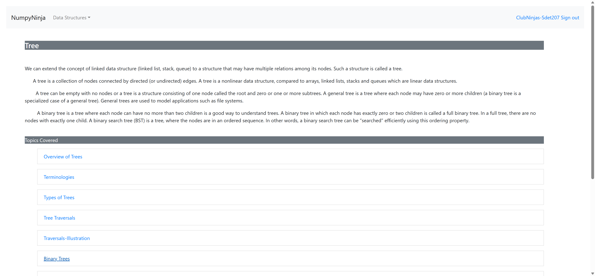
FailVerify that user is able to see output for valid python code in Tree Data Structure Try Editor for " Practice Questions " pageGiven The user is on the Home page and clicks Sign InWhen The user gets data from excel sheet "Valid_Login" and 1 for the login pageThen The user is in the Home page after Sign InGiven The user is on the Try Editor page of " Practice Questions " page in Tree Data StructureWhen The user enters "Tree" and 2 clicks the Run Button in Tree Data Structure tryEditor pageStep skippedThen The user should able to see output in the console from "Tree" and 2 on Tree Data Structure tryEditor pageStep skippedHooks.Hooks.teardown(io.cucumber.java.Scenario)screenshot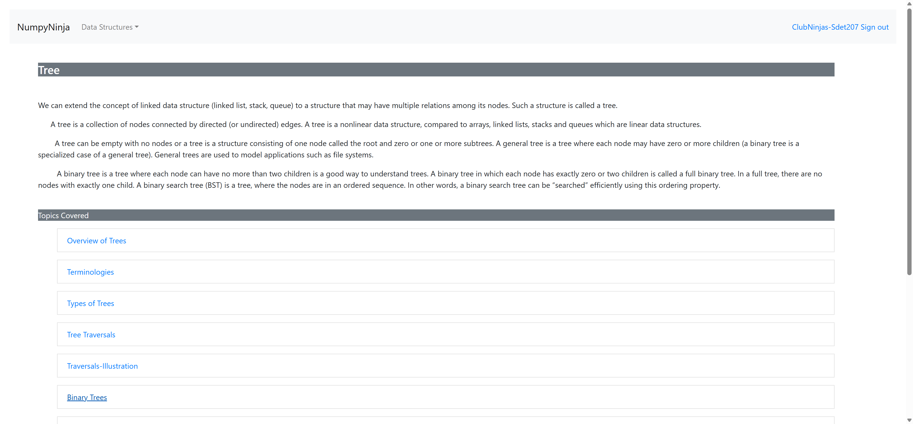
-
org.openqa.selenium.NoSuchElementException
9 tests
org.openqa.selenium.NoSuchElementException
9 failedStatus Timestamp TestName Fail 11:47:33 AM When The user clicks the first practice question in Practice Questions page Data Structures - Introduction.Verify that user is able to open practice questions in "Practice Questions" page.When The user clicks the first practice question in Practice Questions pageFail 11:55:21 AM Then User gets error message for username in the Register page Register Page.Verify that user gets an error message upon entering invalid username.Then User gets error message for username in the Register pageFail 11:55:53 AM Then User gets an error message for password in the Register page Register Page.Verify that the user gets error upon entering invalid passwords.Then User gets an error message for password in the Register pageFail 12:05:59 PM When The user clicks " Practice Questions " link in Tree Data Structure Tree Datastructure.Verify that user is able to navigate to " Practice Questions " page.When The user clicks " Practice Questions " link in Tree Data StructureFail 12:06:16 PM Given The user on the " Practice Questions " page in Tree Data Structure Tree Datastructure.Verify that user is able to navigate to "Try Editor" page for " Practice Questions " page.Given The user on the " Practice Questions " page in Tree Data StructureFail 12:06:31 PM Given The user is on the Try Editor page of " Practice Questions " page in Tree Data Structure Tree Datastructure.Verify that user receives error when click on Run button without entering code for " Practice Questions " page.Given The user is on the Try Editor page of " Practice Questions " page in Tree Data StructureFail 12:06:47 PM Given The user is on the Try Editor page of " Practice Questions " page in Tree Data Structure Tree Datastructure.Verify that user receives error for invalid python code in Tree Data Structure Try Editor for " Practice Questions " page.Given The user is on the Try Editor page of " Practice Questions " page in Tree Data StructureFail 12:07:03 PM Given The user is on the Try Editor page of " Practice Questions " page in Tree Data Structure Tree Datastructure.Verify that user is able to see output for valid python code in Tree Data Structure Try Editor for " Practice Questions " page.Given The user is on the Try Editor page of " Practice Questions " page in Tree Data StructureFail 12:07:20 PM Given The user is on the Try Editor page of " Practice Questions " page in Tree Data Structure Tree Datastructure.Verify that user is able to see output for valid python code in Tree Data Structure Try Editor for " Practice Questions " page.Given The user is on the Try Editor page of " Practice Questions " page in Tree Data Structure -
java.lang.AssertionError
30 tests
java.lang.AssertionError
30 failedStatus Timestamp TestName Fail 11:40:29 AM Then The user should able to see a error message from "TryCode" and 1 Array Page of DSAlgo portal.Verify that user receives error when click on Run button for "Arrays in Python" try Editor page.Then The user should able to see a error message from "TryCode" and 1Fail 11:41:52 AM Then The user should see a message from "PracticeQns" and 6 Array Page of DSAlgo portal.Verify that user is able to successfully submit valid correct python code for "Search the array" question.Then The user should see a message from "PracticeQns" and 6Fail 11:42:48 AM Then The user should see a message from "PracticeQns" and 8 Array Page of DSAlgo portal.Verify that user is able to successfully submit valid correct python code for "Max Consecutive Ones" question.Then The user should see a message from "PracticeQns" and 8Fail 11:44:24 AM Then The user should see a message from "PracticeQns" and 3 Array Page of DSAlgo portal.Verify that user receives error on submitting invalid python code, incorrect code for "Squares of a Sorted Array" question.Then The user should see a message from "PracticeQns" and 3Fail 11:44:33 AM Then The user should see a message from "PracticeQns" and 4 Array Page of DSAlgo portal.Verify that user receives error on submitting invalid python code, incorrect code for "Squares of a Sorted Array" question.Then The user should see a message from "PracticeQns" and 4Fail 11:44:42 AM Then The user should see a message from "PracticeQns" and 12 Array Page of DSAlgo portal.Verify that user is able to successfully submit valid correct python code for "Squares of a Sorted Array" question.Then The user should see a message from "PracticeQns" and 12Fail 11:45:03 AM Then The user should able to see a error message from "TryCode" and 1 Array Page of DSAlgo portal.Verify that user receives error when click on Run button without entering code for "Arrays Using List" try Editor page.Then The user should able to see a error message from "TryCode" and 1Fail 11:45:53 AM Then The user should able to see a error message from "TryCode" and 1 Array Page of DSAlgo portal.Verify that user receives error when click on Run button without entering code for "Basic Operations in Lists" try Editor page.Then The user should able to see a error message from "TryCode" and 1Fail 11:46:42 AM Then The user should able to see a error message from "TryCode" and 1 Array Page of DSAlgo portal.Verify that user receives error when click on Run button without entering code for "Applications of Array" page.Then The user should able to see a error message from "TryCode" and 1Fail 11:47:57 AM Then The user should able to see a error message from "DataStructures" and 4 on Time Complexity tryEditor popup Data Structures - Introduction.Verify that user receives error when click on Run button without entering code.Then The user should able to see a error message from "DataStructures" and 4 on Time Complexity tryEditor popupFail 11:49:19 AM Then The user should be able to receive an alert message from excel sheet 'Graph' and 5 Graph.User submits different codes and receives an alert.Then The user should be able to receive an alert message from excel sheet 'Graph' and 5Fail 11:50:18 AM Then The user should be able to receive an alert message from excel sheet 'Graph' and 5 Graph.User submits different codes and receives an alert.Then The user should be able to receive an alert message from excel sheet 'Graph' and 5Fail 11:52:04 AM Then The user should able to see a error message from "TryCode" and 1 Queue Page of DSAlgo portal.Verify that user receives error when click on Run button for "Implementation of Queue in Python" try Editor page.Then The user should able to see a error message from "TryCode" and 1Fail 11:52:33 AM Then The user should be redirected to Practice page Queue Page of DSAlgo portal.Verify that user is able to navigate to "Practice Questions" Page for "Implementation of Queue in Python" page.Then The user should be redirected to Practice pageFail 11:53:03 AM Then The user should able to see a error message from "TryCode" and 1 Queue Page of DSAlgo portal.Verify that user receives error when click on Run button for "Implementation using collections.deque" try Editor page.Then The user should able to see a error message from "TryCode" and 1Fail 11:53:45 AM Then The user should able to see a error message from "TryCode" and 1 Queue Page of DSAlgo portal.Verify that user receives error when click on Run button for "Implementation using array" try Editor page.Then The user should able to see a error message from "TryCode" and 1Fail 11:54:29 AM Then The user should able to see a error message from "TryCode" and 1 Queue Page of DSAlgo portal.Verify that user receives error when click on Run button for "Queue Operations" try Editor page.Then The user should able to see a error message from "TryCode" and 1Fail 11:56:43 AM Then The user should able to see a error message from "Tree" and 4 on Tree Data Structure tryEditor alert Tree Datastructure.Verify that user receives error when click on Run button without entering code for "Overview of Trees" page.Then The user should able to see a error message from "Tree" and 4 on Tree Data Structure tryEditor alertFail 11:57:28 AM Then The user should able to see a error message from "Tree" and 4 on Tree Data Structure tryEditor alert Tree Datastructure.Verify that user receives error when click on Run button without entering code for "Terminologies" page.Then The user should able to see a error message from "Tree" and 4 on Tree Data Structure tryEditor alertFail 11:58:10 AM Then The user should able to see a error message from "Tree" and 4 on Tree Data Structure tryEditor alert Tree Datastructure.Verify that user receives error when click on Run button without entering code for "Types of Trees" page.Then The user should able to see a error message from "Tree" and 4 on Tree Data Structure tryEditor alertFail 11:58:54 AM Then The user should able to see a error message from "Tree" and 4 on Tree Data Structure tryEditor alert Tree Datastructure.Verify that user receives error when click on Run button without entering code for "Tree Traversals" page.Then The user should able to see a error message from "Tree" and 4 on Tree Data Structure tryEditor alertFail 11:59:38 AM Then The user should able to see a error message from "Tree" and 4 on Tree Data Structure tryEditor alert Tree Datastructure.Verify that user receives error when click on Run button without entering code for "Traversals-Illustration" page.Then The user should able to see a error message from "Tree" and 4 on Tree Data Structure tryEditor alertFail 12:00:21 PM Then The user should able to see a error message from "Tree" and 4 on Tree Data Structure tryEditor alert Tree Datastructure.Verify that user receives error when click on Run button without entering code for "Binary Trees" page.Then The user should able to see a error message from "Tree" and 4 on Tree Data Structure tryEditor alertFail 12:01:04 PM Then The user should able to see a error message from "Tree" and 4 on Tree Data Structure tryEditor alert Tree Datastructure.Verify that user receives error when click on Run button without entering code for "Types of Binary Trees" page.Then The user should able to see a error message from "Tree" and 4 on Tree Data Structure tryEditor alertFail 12:01:49 PM Then The user should able to see a error message from "Tree" and 4 on Tree Data Structure tryEditor alert Tree Datastructure.Verify that user receives error when click on Run button without entering code for "Implementation in Python" page.Then The user should able to see a error message from "Tree" and 4 on Tree Data Structure tryEditor alertFail 12:02:32 PM Then The user should able to see a error message from "Tree" and 4 on Tree Data Structure tryEditor alert Tree Datastructure.Verify that user receives error when click on Run button without entering code for "Binary Tree Traversals" page.Then The user should able to see a error message from "Tree" and 4 on Tree Data Structure tryEditor alertFail 12:03:16 PM Then The user should able to see a error message from "Tree" and 4 on Tree Data Structure tryEditor alert Tree Datastructure.Verify that user receives error when click on Run button without entering code for "Implementation of Binary Trees" page.Then The user should able to see a error message from "Tree" and 4 on Tree Data Structure tryEditor alertFail 12:04:00 PM Then The user should able to see a error message from "Tree" and 4 on Tree Data Structure tryEditor alert Tree Datastructure.Verify that user receives error when click on Run button without entering code for "Applications of Binary trees" page.Then The user should able to see a error message from "Tree" and 4 on Tree Data Structure tryEditor alertFail 12:04:43 PM Then The user should able to see a error message from "Tree" and 4 on Tree Data Structure tryEditor alert Tree Datastructure.Verify that user receives error when click on Run button without entering code for "Binary Search Trees" page.Then The user should able to see a error message from "Tree" and 4 on Tree Data Structure tryEditor alertFail 12:05:29 PM Then The user should able to see a error message from "Tree" and 4 on Tree Data Structure tryEditor alert Tree Datastructure.Verify that user receives error when click on Run button without entering code for "Implementation Of BST" page.Then The user should able to see a error message from "Tree" and 4 on Tree Data Structure tryEditor alert
Started
May 8, 2025 11:39:51 AM
Ended
May 8, 2025 12:07:33 PM
Features Passed
2
Features Failed
6
Features
Scenarios
Steps
Timeline
System/Environment
| Name | Value |
|---|---|
| Engineer | ClubNinjas |
| Project | DSAlgoProject |
| os | windows |